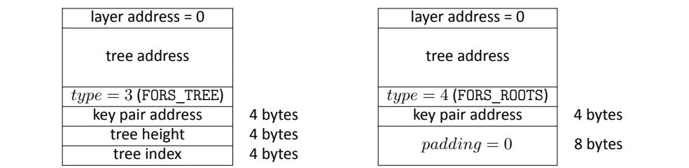
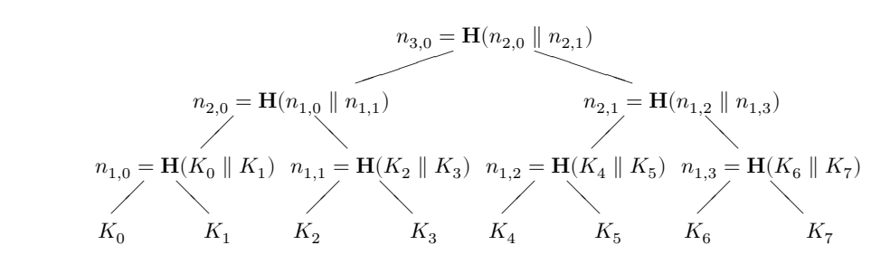

NIST FIPS 205 日本語訳
英語タイトル : Stateless Hash-Based Digital Signature Standard日本語タイトル : ステートレスなハッシュベースのデジタル署名標準
公開日 : 2024-08-13
原文URL : https://csrc.nist.gov/pubs/fips/205/final
翻訳編集 : 自動生成（有志による非公式の日本語訳）, 原文取得日 : 2026-10-25, 訳文 : 561 / 586 ブロック
[要約] FIPS 205 は、ステートレスハッシュベースデジタル署名アルゴリズム（SLH-DSA）を規定する連邦情報処理標準です。WOTS+、XMSS、ハイパーツリー、FORSの各構成要素を順に定め、SLH-DSAの鍵生成、署名生成、署名検証の手順を示します。SLH-DSAはSPHINCS+に基づき、SPHINCS+はNISTの耐量子暗号標準化プロセスで標準化対象に選定され、本標準は2024年8月13日に発効しました。
FIPS 205
FIPS 205
Federal Information Processing Standards Publication
連邦情報処理標準出版物
Stateless Hash-Based Digital Signature Standard
ステートレスなハッシュベースのデジタル署名標準
Category: Computer Security
分類：コンピュータセキュリティ
Subcategory: Cryptography
下位分類：暗号
Information Technology Laboratory National Institute of Standards and Technology Gaithersburg, MD 20899-8900
Information Technology Laboratory 米国国立標準技術研究所 Gaithersburg, MD 20899-8900
This publication is available free of charge from: https://doi.org/10.6028/NIST.FIPS.205
本出版物は次から無料で入手できる：https://doi.org/10.6028/NIST.FIPS.205
Published: August 13, 2024
公表：2024年8月13日
U.S. Department of Commerce Gina M. Raimondo, Secretary
米国商務省 Gina M. Raimondo 長官
National Institute of Standards and Technology Laurie E. Locascio, NIST Director and Under Secretary of Commerce for Standards and Technology
米国国立標準技術研究所 Laurie E. Locascio NIST 所長 兼 標準・技術担当商務次官
Foreword
序文
The Federal Information Processing Standards Publication (FIPS) series of the National Institute of Standards and Technology (NIST) is the official series of publications relating to standards and guidelines developed under 15 U.S.C. 278g-3, and issued by the Secretary of Commerce under 40 U.S.C. 11331.
米国国立標準技術研究所（NIST）の連邦情報処理標準出版物（FIPS）シリーズは、15 U.S.C. 278g-3 に基づいて策定され、40 U.S.C. 11331 に基づいて商務長官が発行する標準およびガイドラインに関する公式の出版物シリーズである。
Comments concerning this Federal Information Processing Standard publication are welcomed and should be submitted using the contact information in the “Inquiries and comments” clause of the announcement section.
本連邦情報処理標準出版物に関するコメントを歓迎する。コメントは、告示セクションの「Inquiries and comments」の条項にある連絡先を用いて提出することが望ましい。
Kevin M. Stine, Director Information Technology Laboratory
Kevin M. Stine, Director Information Technology Laboratory
Abstract
概要
This standard specifies the stateless hash-based digital signature algorithm (SLH-DSA). Digital signatures are used to detect unauthorized modifications to data and to authenticate the identity of the signatory. In addition, the recipient of signed data can use a digital signature as evidence in demonstrating to a third party that the signature was, in fact, generated by the claimed signatory. This is known as non-repudiation since the signatory cannot easily repudiate the signature at a later time. SLH-DSA is based on SPHINCS+, which was selected for standardization as part of the NIST Post-Quantum Cryptography Standardization process.
本標準は、ステートレスハッシュベースデジタル署名アルゴリズム（SLH-DSA）を規定する。デジタル署名は、データの不正な改変を検出し、署名者の身元を認証するために用いられる。さらに、署名付きデータの受信者は、署名が実際に当該署名者と称する者によって生成されたことを第三者に示す証拠として、デジタル署名を用いることができる。署名者が後になって署名を容易に否認できないことから、これは否認防止と呼ばれる。SLH-DSA は SPHINCS+ に基づいており、SPHINCS+ は NIST の耐量子暗号標準化プロセスの一環として標準化対象に選定された。
Keywords: computer security; cryptography; digital signatures; Federal Information Processing Standards; hash-based signatures; post-quantum; public-key cryptography.
キーワード：コンピュータセキュリティ、暗号、デジタル署名、連邦情報処理標準、ハッシュベース署名、耐量子、公開鍵暗号。
Federal Information Processing Standards Publication 205
連邦情報処理標準出版物 205
Published: August 13, 2024 Effective: August 13, 2024
公表：2024年8月13日 発効：2024年8月13日
Announcing the Stateless Hash-Based Digital Signature Standard
Stateless Hash-Based Digital Signature Standard の告示
Federal Information Processing Standards (FIPS) publications are developed by the National Institute of Standards and Technology (NIST) under 15 U.S.C. 278g-3 and issued by the Secretary of Commerce under 40 U.S.C. 11331.
連邦情報処理標準（FIPS）出版物は、15 U.S.C. 278g-3 に基づいて米国国立標準技術研究所（NIST）が策定し、40 U.S.C. 11331 に基づいて商務長官が発行する。
1.Name of Standard. Stateless Hash-Based Digital Signature Standard (FIPS 205).
1.標準の名称。Stateless Hash-Based Digital Signature Standard（FIPS 205）。
2.Category of Standard. Computer Security. Subcategory. Cryptography.
2.標準の分類。コンピュータセキュリティ。下位分類。暗号。
3.Explanation. This standard specifies a stateless hash-based digital signature scheme (SLH-DSA) for applications that require a digital signature rather than a written signature. Additional digital signature schemes are specified and approved in other NIST Special Publications and FIPS publications (e.g., FIPS 186-5 [1]). A digital signature is represented in a computer as a string of bits and computed using a set of rules and parameters that allow the identity of the signatory and the integrity of the data to be verified. Digital signatures may be generated on both stored and transmitted data.
3.説明。本標準は、手書きの署名ではなくデジタル署名を必要とするアプリケーションのために、ステートレスハッシュベースデジタル署名方式（SLH-DSA）を規定する。その他のデジタル署名方式は、他の NIST Special Publications および FIPS 出版物（例：FIPS 186-5 [1]）で規定・承認されている。デジタル署名は、コンピュータ内ではビット列として表現され、署名者の身元とデータの完全性を検証できるようにする一連の規則とパラメータを用いて計算される。デジタル署名は、保存データと送信データのいずれに対しても生成してよい。
Signature generation uses a private key to generate a digital signature. Signature verification uses a public key that corresponds to but is not the same as the private key. Each signatory possesses a private and public key pair. Public keys may be known by the public, but private keys must be kept secret. Anyone can verify the signature by employing the signatory’s public key. Only the user who possesses the private key can perform signature generation.
署名生成では、秘密鍵を用いてデジタル署名を生成する。署名検証では、秘密鍵に対応するが秘密鍵とは異なる公開鍵を用いる。各署名者は秘密鍵と公開鍵の鍵ペアを保有する。公開鍵は公衆に知られてよいが、秘密鍵は秘密に保たなければならない。署名者の公開鍵を用いることで、誰でも署名を検証できる。署名生成を実行できるのは、秘密鍵を保有する利用者のみである。
The digital signature is provided to the intended verifier along with the signed data. The verifying entity verifies the signature by using the claimed signatory’s public key. Similar procedures may be used to generate and verify signatures for both stored and transmitted data.
デジタル署名は、署名付きデータとともに意図された検証者に提供される。検証を行うエンティティは、署名者と称する者の公開鍵を用いて署名を検証する。保存データと送信データのいずれに対しても、同様の手順を用いて署名を生成・検証してよい。
This standard specifies several parameter sets for SLH-DSA that are approved for use. Additional parameter sets may be specified and approved in future NIST Special Publications.
本標準は、使用が承認された SLH-DSA のパラメータセットをいくつか規定する。追加のパラメータセットは、今後の NIST Special Publications で規定・承認される場合がある。
4.Approving Authority. Secretary of Commerce.
4.承認機関。商務長官。
5.Maintenance Agency. Department of Commerce, National Institute of Standards and Technology, Information Technology Laboratory (ITL).
5.維持管理機関。商務省、米国国立標準技術研究所、Information Technology Laboratory（ITL）。
6.Applicability. This standard is applicable to all federal departments and agencies for the protection of sensitive unclassified information that is not subject to section 2315 of Title 10, United States Code, or section 3502 (2) of Title 44, United States Code. Either this standard, FIPS 204, FIPS 186-5, or NIST Special Publication 800-208 shall be used in designing and implementing public-key-based signature systems that federal departments and agencies operate or that are operated for them under contract. In the future, additional digital signature schemes may be specified and approved in FIPS publications or NIST Special Publications.
6.適用範囲。本標準は、Title 10, United States Code の section 2315、または Title 44, United States Code の section 3502 (2) の対象とならない、機密扱いでない機微な情報を保護するために、すべての連邦省庁に適用される。連邦省庁が運用する公開鍵ベースの署名システム、または契約に基づき連邦省庁のために運用される公開鍵ベースの署名システムを設計・実装する際には、本標準、FIPS 204、FIPS 186-5、または NIST Special Publication 800-208 のいずれかを使用しなければならない。今後、追加のデジタル署名方式が FIPS 出版物または NIST Special Publications で規定・承認される場合がある。
The adoption and use of this standard are available to private and commercial organizations.
本標準は、民間組織および営利組織も採用・使用できる。
7.Applications. A digital signature algorithm allows an entity to authenticate the integrity of signed data and the identity of the signatory. The recipient of a signed message can use a digital signature as evidence in demonstrating to a third party that the signature was, in fact, generated by the claimed signatory. This is known as non-repudiation since the signatory cannot easily repudiate the signature at a later time. A digital signature algorithm is intended for use in electronic mail, electronic funds transfer, electronic data interchange, software distribution, data storage, and other applications that require data integrity assurance and data origin authentication.
7.用途。デジタル署名アルゴリズムにより、エンティティは署名付きデータの完全性と署名者の身元を認証できる。署名付きメッセージの受信者は、署名が実際に当該署名者と称する者によって生成されたことを第三者に示す証拠として、デジタル署名を用いることができる。署名者が後になって署名を容易に否認できないことから、これは否認防止と呼ばれる。デジタル署名アルゴリズムは、電子メール、電子資金移動、電子データ交換、ソフトウェア配布、データ保存、およびデータ完全性の保証とデータ発信元認証を必要とするその他のアプリケーションでの使用を意図している。
8.Implementations. A digital signature algorithm may be implemented in software, firmware, hardware, or any combination thereof. NIST will develop a validation program to test implementations for conformance to the algorithms in this standard. For every computational procedure that is specified in this standard, a conforming implementation may replace the given set of steps with any mathematically equivalent process. In other words, different procedures that produce the correct output for every input are permitted. Information about validation programs is available at https://csrc.nist.gov/projects/cmvp. Examples for digital signature algorithms are available at https://csrc.nist.gov/projects/cryptographic-standards-and-guidelines/example-values.
8.実装。デジタル署名アルゴリズムは、ソフトウェア、ファームウェア、ハードウェア、またはそれらの任意の組み合わせで実装してよい。NIST は、本標準のアルゴリズムへの適合性について実装を試験する検証プログラムを策定する。本標準で規定する各計算手順について、適合する実装は、示された一連のステップを数学的に等価な任意の処理に置き換えてよい。言い換えれば、すべての入力に対して正しい出力を生成する異なる手順が許容される。検証プログラムに関する情報は https://csrc.nist.gov/projects/cmvp で入手できる。デジタル署名アルゴリズムの例は https://csrc.nist.gov/projects/cryptographic-standards-and-guidelines/example-values で入手できる。
Agencies are advised that digital signature key pairs shall not be used for other purposes.
各機関は、デジタル署名の鍵ペアを他の目的に使用してはならないことに留意されたい。
9.Other Approved Security Functions. Digital signature implementations that comply with this standard shall employ cryptographic algorithms that have been approved for protecting Federal Government-sensitive information. Approved cryptographic algorithms and techniques include those that are either:
9.その他の承認されたセキュリティ機能。本標準に準拠するデジタル署名の実装は、連邦政府の機微な情報の保護について承認された暗号アルゴリズムを用いなければならない。承認された暗号アルゴリズムおよび技法には、次のいずれかに該当するものが含まれる。
a.Specified in a Federal Information Processing Standard (FIPS) publication,
a.連邦情報処理標準（FIPS）出版物で規定されているもの
b.Adopted in a FIPS or NIST recommendation, or
b.FIPS または NIST の推奨で採用されているもの
c. Specified in the list of approved security functions in SP 800-140C.
c. SP 800-140C の承認されたセキュリティ機能のリストで規定されているもの
10.Export Control. Certain cryptographic devices and technical data regarding them are subject to federal export controls. Exports of cryptographic modules that implement this standard and technical data regarding them must comply with these federal regulations and be licensed by the Bureau of Industry and Security of the U.S. Department of Commerce. Information about export regulations is available at https://www.bis.doc.gov.
10.輸出管理。特定の暗号デバイスおよびそれに関する技術データは、連邦の輸出管理の対象となる。本標準を実装する暗号モジュールおよびそれに関する技術データの輸出は、これらの連邦規則に従わなければならず、米国商務省産業安全保障局（Bureau of Industry and Security）の許可を得なければならない。輸出規則に関する情報は https://www.bis.doc.gov で入手できる。
11.Patents. The algorithm in this standard may be covered by U.S. or foreign patents.
11.特許。本標準のアルゴリズムは、米国または外国の特許の対象となっている場合がある。
12.Implementation Schedule. This standard becomes effective immediately upon final publication.
12.実施スケジュール。本標準は、最終版の公表をもって直ちに発効する。
13.Specifications. Federal Information Processing Standard (FIPS) 205, Stateless Hash-Based Digital Signature Standard (affixed).
13.仕様。連邦情報処理標準（FIPS）205、Stateless Hash-Based Digital Signature Standard（添付）。
14.Qualifications. The security of a digital signature system depends on the secrecy of the signatory’s private keys. Signatories shall, therefore, guard against the disclosure of their private keys. While it is the intent of this standard to specify general security requirements for generating digital signatures, conformance to this standard does not ensure that a particular implementation is secure. It is the responsibility of an implementer to ensure that any module that implements a digital signature capability is designed and built in a secure manner.
14.適格性。デジタル署名システムのセキュリティは、署名者の秘密鍵の秘匿性に依存する。したがって、署名者は自らの秘密鍵の漏えいを防止しなければならない。本標準はデジタル署名生成のための一般的なセキュリティ要件を規定することを意図しているが、本標準への適合は特定の実装が安全であることを保証しない。デジタル署名機能を実装するモジュールが安全な方法で設計・構築されていることを確保するのは、実装者の責任である。
Similarly, the use of a product containing an implementation that conforms to this standard does not guarantee the security of the overall system in which the product is used. The responsible authority in each agency or department shall ensure that an overall implementation provides an acceptable level of security.
同様に、本標準に適合する実装を含む製品を使用しても、その製品を使用するシステム全体のセキュリティは保証されない。各機関または省庁の責任当局は、実装全体が許容可能なレベルのセキュリティを提供することを確保しなければならない。
Since a standard of this nature must be flexible enough to adapt to advancements and innovations in science and technology, this standard will be reviewed every five years in order to assess its adequacy.
この種の標準は科学技術の進歩と革新に適応できるだけの柔軟性を備えていなければならないため、本標準はその妥当性を評価するために 5 年ごとに見直される。
15.Waiver Procedure. The Federal Information Security Management Act (FISMA) does not allow for waivers to Federal Information Processing Standards (FIPS) that are made mandatory by the Secretary of Commerce.
15.免除手続き。Federal Information Security Management Act（FISMA）は、商務長官によって義務化された連邦情報処理標準（FIPS）に対する免除を認めていない。
16.Where to Obtain Copies of the Standard. This publication is available by accessing https: //csrc.nist.gov/publications. Other computer security publications are available at the same website.
16.本標準の入手先。本出版物は https: //csrc.nist.gov/publications から入手できる。その他のコンピュータセキュリティ関連の出版物も同じWebサイトから入手できる。
17.How to Cite This Publication. NIST has assigned NIST FIPS 205 as the publication identifier for this FIPS, per the NIST Technical Series Publication Identifier Syntax. NIST recommends that it be cited as follows:
17.本出版物の引用方法。NISTは、NIST Technical Series Publication Identifier Syntaxに従い、本FIPSの出版物識別子としてNIST FIPS 205を割り当てた。NISTは、次のように引用することを推奨する。
National Institute of Standards and Technology (2024) Stateless Hash-Based Digital Signature Standard. (Department of Commerce, Washington, D.C.), Federal Information Processing Standards Publication (FIPS) NIST FIPS 205. https://doi.org/10.6028/NIST.FIPS.205
National Institute of Standards and Technology (2024) Stateless Hash-Based Digital Signature Standard. (Department of Commerce, Washington, D.C.), Federal Information Processing Standards Publication (FIPS) NIST FIPS 205. https://doi.org/10.6028/NIST.FIPS.205
18.Inquiries and Comments. Inquiries and comments about this FIPS may be submitted to fips-205-comments@nist.gov.
18.問い合わせおよびコメント。本FIPSに関する問い合わせおよびコメントは、fips-205-comments@nist.gov に送付できる。
Table of Contents
目次
Federal Information Processing Standards Publication 205
連邦情報処理標準出版物 205
Specification for the Stateless Hash-Based Digital Signature Standard
ステートレスハッシュベースデジタル署名標準の仕様
1 Introduction 1
1 序論 1
1.1 Purpose and Scope . . . . . . . . . . . . . . . . . . . . . . . . . . . . . . . . 1
1.1 目的と範囲 . . . . . . . . . . . . . . . . . . . . . . . . . . . . . . . . 1
1.2 Context . . . . . . . . . . . . . . . . . . . . . . . . . . . . . . . . . . . . . . 1
1.2 背景 . . . . . . . . . . . . . . . . . . . . . . . . . . . . . . . . . . . . . . 1
2 Glossary of Terms, Acronyms, and Symbols 2
2 用語、略語、および記号の解説 2
2.1 Terms and Definitions . . . . . . . . . . . . . . . . . . . . . . . . . . . . . . 2
2.1 用語と定義 . . . . . . . . . . . . . . . . . . . . . . . . . . . . . . 2
2.2 Acronyms . . . . . . . . . . . . . . . . . . . . . . . . . . . . . . . . . . . . . 4
2.2 略語 . . . . . . . . . . . . . . . . . . . . . . . . . . . . . . . . . . . . . 4
2.3 Mathematical Symbols . . . . . . . . . . . . . . . . . . . . . . . . . . . . . . 5
2.3 数学記号 . . . . . . . . . . . . . . . . . . . . . . . . . . . . . . 5
3 Overview of the SLH-DSA Signature Scheme 7
3 SLH-DSA署名方式の概要 7
3.1 Additional Requirements . . . . . . . . . . . . . . . . . . . . . . . . . . . . . 9
3.1 追加要件 . . . . . . . . . . . . . . . . . . . . . . . . . . . . . 9
3.2 Implementation Considerations . . . . . . . . . . . . . . . . . . . . . . . . . 10
3.2 実装上の考慮事項 . . . . . . . . . . . . . . . . . . . . . . . . . 10
4 Functions and Addressing 11
4 関数とアドレッシング 11
4.1 Hash Functions and Pseudorandom Functions . . . . . . . . . . . . . . . . . 11
4.1 ハッシュ関数と擬似ランダム関数 . . . . . . . . . . . . . . . . . 11
4.2 Addresses . . . . . . . . . . . . . . . . . . . . . . . . . . . . . . . . . . . . . 11
4.2 アドレス . . . . . . . . . . . . . . . . . . . . . . . . . . . . . . . . . . . . . 11
4.3 Member Functions . . . . . . . . . . . . . . . . . . . . . . . . . . . . . . . . 14
4.3 メンバ関数 . . . . . . . . . . . . . . . . . . . . . . . . . . . . . . . . 14
4.4 Arrays, Byte Strings, and Integers . . . . . . . . . . . . . . . . . . . . . . . . 15
4.4 配列、バイト列、および整数 . . . . . . . . . . . . . . . . . . . . . . . . 15
5 Winternitz One-Time Signature Plus Scheme 17
5 Winternitzワンタイム署名プラス方式 17
5.1 WOTS+ Public-Key Generation . . . . . . . . . . . . . . . . . . . . . . . . . . 18
5.1 WOTS+公開鍵の生成 . . . . . . . . . . . . . . . . . . . . . . . . . . 18
5.2 WOTS+ Signature Generation . . . . . . . . . . . . . . . . . . . . . . . . . . 19
5.2 WOTS+署名の生成 . . . . . . . . . . . . . . . . . . . . . . . . . . 19
5.3 Computing a WOTS+ Public Key From a Signature . . . . . . . . . . . . . . . 21
5.3 署名からのWOTS+公開鍵の計算 . . . . . . . . . . . . . . . 21
6 eXtended Merkle Signature Scheme (XMSS) 22
6 eXtended Merkle Signature Scheme（XMSS） 22
6.1 Generating a Merkle Hash Tree . . . . . . . . . . . . . . . . . . . . . . . . . 22
6.1 Merkleハッシュ木の生成 . . . . . . . . . . . . . . . . . . . . . . . . . 22
6.2 Generating an XMSS Signature . . . . . . . . . . . . . . . . . . . . . . . . . . 23
6.2 XMSS署名の生成 . . . . . . . . . . . . . . . . . . . . . . . . . . 23
6.3 Computing an XMSS Public Key From a Signature . . . . . . . . . . . . . . . . 25
6.3 署名からのXMSS公開鍵の計算 . . . . . . . . . . . . . . . . 25
7 The SLH-DSA Hypertree 26
7 SLH-DSAハイパーツリー 26
7.1 Hypertree Signature Generation . . . . . . . . . . . . . . . . . . . . . . . . . 26
7.1 ハイパーツリー署名の生成 . . . . . . . . . . . . . . . . . . . . . . . . . 26
7.2 Hypertree Signature Verification . . . . . . . . . . . . . . . . . . . . . . . . . 28
7.2 ハイパーツリー署名の検証 . . . . . . . . . . . . . . . . . . . . . . . . . 28
8 Forest of Random Subsets (FORS) 29
8 Forest of Random Subsets（FORS） 29
8.1 Generating FORS Secret Values . . . . . . . . . . . . . . . . . . . . . . . . . . 29
8.1 FORS秘密値の生成 . . . . . . . . . . . . . . . . . . . . . . . . . . 29
8.2 Generating a Merkle Hash Tree . . . . . . . . . . . . . . . . . . . . . . . . . 30
8.2 Merkleハッシュ木の生成 . . . . . . . . . . . . . . . . . . . . . . . . . 30
8.3 Generating a FORS Signature . . . . . . . . . . . . . . . . . . . . . . . . . . . 30
8.3 FORS署名の生成 . . . . . . . . . . . . . . . . . . . . . . . . . . . 30
8.4 Computing a FORS Public Key From a Signature . . . . . . . . . . . . . . . . . 31
8.4 署名からのFORS公開鍵の計算 . . . . . . . . . . . . . . . . . 31
9 SLH-DSA Internal Functions 33
9 SLH-DSA内部関数 33
9.1 SLH-DSA Key Generation . . . . . . . . . . . . . . . . . . . . . . . . . . . . . 33
9.1 SLH-DSA鍵生成 . . . . . . . . . . . . . . . . . . . . . . . . . . . . . 33
9.2 SLH-DSA Signature Generation . . . . . . . . . . . . . . . . . . . . . . . . . . 34
9.2 SLH-DSA署名生成 . . . . . . . . . . . . . . . . . . . . . . . . . . 34
9.3 SLH-DSA Signature Verification . . . . . . . . . . . . . . . . . . . . . . . . . . 36
9.3 SLH-DSA署名検証 . . . . . . . . . . . . . . . . . . . . . . . . . . 36
10 SLH-DSA External Functions 37
10 SLH-DSA外部関数 37
10.1 SLH-DSA Key Generation . . . . . . . . . . . . . . . . . . . . . . . . . . . . . 37
10.1 SLH-DSA鍵生成 . . . . . . . . . . . . . . . . . . . . . . . . . . . . . 37
10.2 SLH-DSA Signature Generation . . . . . . . . . . . . . . . . . . . . . . . . . . 37
10.2 SLH-DSA署名生成 . . . . . . . . . . . . . . . . . . . . . . . . . . 37
10.2.1 Pure SLH-DSA Signature Generation . . . . . . . . . . . . . . . . . . . 38
10.2.1 Pure SLH-DSA署名生成 . . . . . . . . . . . . . . . . . . . 38
10.2.2 HashSLH-DSA Signature Generation . . . . . . . . . . . . . . . . . . . 39
10.2.2 HashSLH-DSA署名生成 . . . . . . . . . . . . . . . . . . . 39
10.3 SLH-DSA Signature Verification . . . . . . . . . . . . . . . . . . . . . . . . . . 41
10.3 SLH-DSA署名検証 . . . . . . . . . . . . . . . . . . . . . . . . . . 41
11 Parameter Sets 43
11 パラメータセット 43
11.1 SLH-DSA Using SHAKE . . . . . . . . . . . . . . . . . . . . . . . . . . . . . . 44
11.1 SHAKEを用いるSLH-DSA . . . . . . . . . . . . . . . . . . . . . . . . . . . . . . 44
11.2 SLH-DSA Using SHA2 . . . . . . . . . . . . . . . . . . . . . . . . . . . . . . . 44
11.2 SHA2を用いるSLH-DSA . . . . . . . . . . . . . . . . . . . . . . . . . . . . . . . 44
11.2.1 SLH-DSA Using SHA2 for Security Category 1 . . . . . . . . . . . . . . . 45
11.2.1 セキュリティカテゴリ1向けのSHA2を用いるSLH-DSA . . . . . . . . . . . . . . . 45
11.2.2 SLH-DSA Using SHA2 for Security Categories 3 and 5 . . . . . . . . . . 46
11.2.2 セキュリティカテゴリ3および5向けのSHA2を用いるSLH-DSA . . . . . . . . . . 46
References 47
参考文献 47
Appendix A — Differences From the SPHINCS+ Submission 51
付録A — SPHINCS+提出版からの相違点 51
A.1 Changes From FIPS 205 Initial Public Draft . . . . . . . . . . . . . . . . . . . . 51
A.1 FIPS 205初期公開草案からの変更点 . . . . . . . . . . . . . . . . . . . . 51
List of Tables
表一覧
Table 1 Member functions for addresses 14
表1 アドレスのメンバ関数 14
Table 2 SLH-DSA parameter sets 43
表2 SLH-DSAのパラメータセット 43
Table 3 Member functions for compressed addresses 45
表3 圧縮アドレスのメンバ関数 45
List of Figures
図一覧
Figure 1 An SLH-DSA signature 8
図1 SLH-DSA署名 8
Figure 2 Address (\(\mathbf{ADRS}\)) 12
図2 アドレス（\(\mathbf{ADRS}\)） 12
Figure 3 WOTS\(^+\) hash address 12
図3 WOTS\(^+\)ハッシュアドレス 12
Figure 4 WOTS\(^+\) public-key compression address 12
図4 WOTS\(^+\)公開鍵圧縮アドレス 12
Figure 5 Hash tree address 13
図5 ハッシュ木アドレス 13
Figure 6 FORS tree address 13
図6 FORS木アドレス 13
Figure 7 FORS tree roots compression address 13
図7 FORS木ルート圧縮アドレス 13
Figure 8 WOTS\(^+\) key generation address 14
図8 WOTS\(^+\)鍵生成アドレス 14
Figure 9 FORS key generation address 14
図9 FORS鍵生成アドレス 14
Figure 10 WOTS\(^+\) signature data format 19
図10 WOTS\(^+\)署名のデータ形式 19
Figure 11 XMSS signature data format 22
図11 XMSS署名のデータ形式 22
Figure 12 Merkle hash tree 24
図12 Merkleハッシュ木 24
Figure 13 HT signature data format 26
図13 HT署名のデータ形式 26
Figure 14 FORS signature data format 29
図14 FORS署名のデータ形式 29
Figure 15 SLH-DSA private key 33
図15 SLH-DSA秘密鍵 33
Figure 16 SLH-DSA public key 33
図16 SLH-DSA公開鍵 33
Figure 17 SLH-DSA signature data format 34
図17 SLH-DSA署名のデータ形式 34
Figure 18 Compressed address (\(\mathbf{ADRS}^c\)) 45
図18 圧縮アドレス（\(\mathbf{ADRS}^c\)） 45
List of Algorithms
アルゴリズム一覧
Algorithm 1 gen_len\(_2(n, lg_w)\) 10
アルゴリズム1 gen_len\(_2(n, lg_w)\) 10
Algorithm 2 toInt\((X, n)\) 15
アルゴリズム2 toInt\((X, n)\) 15
Algorithm 3 toByte\((x, n)\) 15
アルゴリズム3 toByte\((x, n)\) 15
Algorithm 4 base_2\(^b(X, b, out\_len)\) 16
アルゴリズム4 base_2\(^b(X, b, out\_len)\) 16
Algorithm 5 chain(\(X\), \(i\), \(s\), \(\mathbf{PK}\).seed, \(\mathbf{ADRS}\)) 18
アルゴリズム5 chain(\(X\), \(i\), \(s\), \(\mathbf{PK}\).seed, \(\mathbf{ADRS}\)) 18
Algorithm 6 wots_pkGen(\(\mathbf{SK}\).seed, \(\mathbf{PK}\).seed, \(\mathbf{ADRS}\)) 18
アルゴリズム6 wots_pkGen(\(\mathbf{SK}\).seed, \(\mathbf{PK}\).seed, \(\mathbf{ADRS}\)) 18
Algorithm 7 wots_sign(\(M\), \(\mathbf{SK}\).seed, \(\mathbf{PK}\).seed, \(\mathbf{ADRS}\)) 20
アルゴリズム7 wots_sign(\(M\), \(\mathbf{SK}\).seed, \(\mathbf{PK}\).seed, \(\mathbf{ADRS}\)) 20
Algorithm 8 wots_pkFromSig(\(sig\), \(M\), \(\mathbf{PK}\).seed, \(\mathbf{ADRS}\)) 21
アルゴリズム8 wots_pkFromSig(\(sig\), \(M\), \(\mathbf{PK}\).seed, \(\mathbf{ADRS}\)) 21
Algorithm 9 xmss_node(\(\mathbf{SK}\).seed, \(i\), \(z\), \(\mathbf{PK}\).seed, \(\mathbf{ADRS}\)) 23
アルゴリズム9 xmss_node(\(\mathbf{SK}\).seed, \(i\), \(z\), \(\mathbf{PK}\).seed, \(\mathbf{ADRS}\)) 23
Algorithm 10 xmss_sign(\(M\), \(\mathbf{SK}\).seed, \(idx\), \(\mathbf{PK}\).seed, \(\mathbf{ADRS}\)) 24
アルゴリズム10 xmss_sign(\(M\), \(\mathbf{SK}\).seed, \(idx\), \(\mathbf{PK}\).seed, \(\mathbf{ADRS}\)) 24
Algorithm 11 xmss_pkFromSig(\(idx\), SIG\(_{XMSS}\), \(M\), \(\mathbf{PK}\).seed, \(\mathbf{ADRS}\)) 25
アルゴリズム11 xmss_pkFromSig(\(idx\), SIG\(_{XMSS}\), \(M\), \(\mathbf{PK}\).seed, \(\mathbf{ADRS}\)) 25
Algorithm 12 ht_sign(\(M\), \(\mathbf{SK}\).seed, \(\mathbf{PK}\).seed, \(idx_{tree}\), \(idx_{leaf}\)) 27
アルゴリズム12 ht_sign(\(M\), \(\mathbf{SK}\).seed, \(\mathbf{PK}\).seed, \(idx_{tree}\), \(idx_{leaf}\)) 27
Algorithm 13 ht_verify(\(M\), SIG\(_{HT}\), \(\mathbf{PK}\).seed, \(idx_{tree}\), \(idx_{leaf}\), \(\mathbf{PK}\).root) 28
アルゴリズム13 ht_verify(\(M\), SIG\(_{HT}\), \(\mathbf{PK}\).seed, \(idx_{tree}\), \(idx_{leaf}\), \(\mathbf{PK}\).root) 28
Algorithm 14 fors_skGen(\(\mathbf{SK}\).seed, \(\mathbf{PK}\).seed, \(\mathbf{ADRS}\), \(idx\)) 29
アルゴリズム14 fors_skGen(\(\mathbf{SK}\).seed, \(\mathbf{PK}\).seed, \(\mathbf{ADRS}\), \(idx\)) 29
Algorithm 15 fors_node(\(\mathbf{SK}\).seed, \(i\), \(z\), \(\mathbf{PK}\).seed, \(\mathbf{ADRS}\)) 30
アルゴリズム15 fors_node(\(\mathbf{SK}\).seed, \(i\), \(z\), \(\mathbf{PK}\).seed, \(\mathbf{ADRS}\)) 30
Algorithm 16 fors_sign(\(md\), \(\mathbf{SK}\).seed, \(\mathbf{PK}\).seed, \(\mathbf{ADRS}\)) 31
アルゴリズム16 fors_sign(\(md\), \(\mathbf{SK}\).seed, \(\mathbf{PK}\).seed, \(\mathbf{ADRS}\)) 31
Algorithm 17 fors_pkFromSig(SIG\(_{FORS}\), \(md\), \(\mathbf{PK}\).seed, \(\mathbf{ADRS}\)) 32
アルゴリズム17 fors_pkFromSig(SIG\(_{FORS}\), \(md\), \(\mathbf{PK}\).seed, \(\mathbf{ADRS}\)) 32
Algorithm 18 slh_keygen_internal(\(\mathbf{SK}\).seed, \(\mathbf{SK}\).prf, \(\mathbf{PK}\).seed) 34
アルゴリズム18 slh_keygen_internal(\(\mathbf{SK}\).seed, \(\mathbf{SK}\).prf, \(\mathbf{PK}\).seed) 34
Algorithm 19 slh_sign_internal(\(M\), SK, \(addrnd\)) 35
アルゴリズム19 slh_sign_internal(\(M\), SK, \(addrnd\)) 35
Algorithm 20 slh_verify_internal(\(M\), SIG, PK) 36
アルゴリズム20 slh_verify_internal(\(M\), SIG, PK) 36
Algorithm 21 slh_keygen() 37
アルゴリズム21 slh_keygen() 37
Algorithm 22 slh_sign(\(M\), \(ctx\), SK) 39
アルゴリズム22 slh_sign(\(M\), \(ctx\), SK) 39
Algorithm 23 hash_slh_sign(\(M\), \(ctx\), PH, SK) 40
アルゴリズム23 hash_slh_sign(\(M\), \(ctx\), PH, SK) 40
Algorithm 24 slh_verify(\(M\), SIG, \(ctx\), PK) 41
アルゴリズム24 slh_verify(\(M\), SIG, \(ctx\), PK) 41
Algorithm 25 hash_slh_verify(\(M\), SIG, \(ctx\), PH, PK) 42
アルゴリズム25 hash_slh_verify(\(M\), SIG, \(ctx\), PH, PK) 42
1. Introduction
1. 序論
1.1 Purpose and Scope
1.1 目的と範囲
This standard defines a method for digital signature generation that can be used for the protection of binary data (commonly called a message) and for the verification and validation of those digital signatures.1 The security of the stateless hash-based digital signature algorithm (SLH-DSA) relies on the presumed difficulty of finding preimages for hash functions as well as several related properties of the same hash functions. Unlike the algorithms specified in FIPS 186-5 [1], SLH-DSA is designed to provide resistance against attacks from a large-scale quantum computer.
本標準は、バイナリデータ（一般にメッセージと呼ばれる）の保護に使用できるデジタル署名生成の方法、およびそのデジタル署名の検証と妥当性確認の方法を定義する。1ステートレスハッシュベースデジタル署名アルゴリズム（SLH-DSA）の安全性は、ハッシュ関数の原像を求めることが困難であるという想定と、同じハッシュ関数に関するいくつかの関連する性質に依拠している。FIPS 186-5 [1]に規定されたアルゴリズムとは異なり、SLH-DSAは大規模量子コンピュータによる攻撃への耐性を提供するように設計されている。
This standard specifies the mathematical steps that need to be performed for key generation, signature generation, and signature verification. Additional assurances are required for digital signatures to be valid (e.g., the assurance of identity and private key possession). SP 800-89, Recommendation for Obtaining Assurances for Digital Signature Applications [3], specifies the required assurances and the methods for obtaining these assurances.
本標準は、鍵生成、署名生成、および署名検証のために実行する必要がある数学的手順を規定する。デジタル署名が有効であるためには、追加の保証（例えば、身元の保証や秘密鍵の保有の保証）が必要である。SP 800-89, Recommendation for Obtaining Assurances for Digital Signature Applications [3]は、必要な保証とそれらの保証を得るための方法を規定している。
1.2 Context
1.2 背景
Over the past several years, there has been steady progress toward building quantum computers. The security of many commonly used public-key cryptosystems will be at risk if large-scale quantum computers are ever realized. This would include key-establishment schemes and digital signatures that are based on integer factorization and discrete logarithms (both over finite fields and elliptic curves). As a result, in 2016, NIST initiated a public Post-Quantum Cryptography (PQC) Standardization process to select quantum-resistant public-key cryptographic algorithms for standardization. A total of 82 candidate algorithms were submitted to NIST for consideration.
過去数年にわたり、量子コンピュータの構築に向けた着実な進展が見られてきた。大規模量子コンピュータが実現すれば、広く使用されている多くの公開鍵暗号システムの安全性が危険にさらされる。これには、整数の素因数分解と離散対数（有限体上と楕円曲線上の両方）に基づく鍵確立方式やデジタル署名が含まれる。そのためNISTは2016年、標準化のための量子耐性のある公開鍵暗号アルゴリズムを選定するため、公開のポスト量子暗号（PQC）標準化プロセスを開始した。合計82の候補アルゴリズムが検討のためにNISTに提出された。
After three rounds of evaluation and analysis, NIST selected the first four algorithms for standardization. These algorithms are intended to protect sensitive U.S. Government information well into the foreseeable future, including after the advent of cryptographically relevant quantum computers. This standard includes the specification for one of the algorithms selected: SPHINCS+, a stateless hash-based digital signature scheme. This standard contains several minor modifications compared to Version 3 [4], which was submitted at the beginning of round three of the NIST PQC Standardization process. The changes are described in Appendix A. Throughout this standard, SPHINCS+ will be referred to as SLH-DSA for stateless hash-based digital signature algorithm.
3ラウンドにわたる評価と分析を経て、NISTは標準化のための最初の4つのアルゴリズムを選定した。これらのアルゴリズムは、暗号学的に意味のある量子コンピュータの出現後も含め、予見可能な将来にわたって米国政府の機微な情報を保護することを意図している。本標準は、選定されたアルゴリズムの1つであるステートレスハッシュベースデジタル署名方式SPHINCS+の仕様を含む。本標準には、NIST PQC標準化プロセスの第3ラウンド開始時に提出されたVersion 3 [4]と比べて、いくつかの軽微な変更が含まれている。変更点は付録Aに記述する。本標準全体を通じて、SPHINCS+はステートレスハッシュベースデジタル署名アルゴリズム（stateless hash-based digital signature algorithm）を表すSLH-DSAと呼ぶ。
2. Glossary of Terms, Acronyms, and Symbols
2. 用語、略語、および記号の解説
2.1 Terms and Definitions
2.1 用語と定義
approved — FIPS-approved and/or NIST-recommended. An algorithm or technique that is either 1) specified in a FIPS or NIST recommendation, 2) adopted in a FIPS or NIST recommendation, or 3) specified in a list of NIST-approved security functions. [1]
approved — FIPS承認済みおよび／またはNIST推奨。1) FIPSもしくはNIST勧告において規定されている、2) FIPSもしくはNIST勧告において採用されている、または3) NIST承認済みセキュリティ機能のリストにおいて規定されている、アルゴリズムまたは技法。[1]
big-endian — The property of a byte string having its bytes positioned in order of decreasing significance. In particular, the leftmost (first) byte is the most significant, and the rightmost (last) byte is the least significant. The term “big-endian” may also be applied in the same manner to bit strings. [5, adapted]
big-endian — バイト列の各バイトが上位から下位の順に配置されているという性質。特に、最も左（最初）のバイトが最上位であり、最も右（最後）のバイトが最下位である。「ビッグエンディアン」という用語は、ビット列にも同様に適用してよい。[5, adapted]
byte string — An array of integers in which each integer is in the set \(\{0, \ldots, 255\}\).
byte string — 各整数が集合\(\{0, \ldots, 255\}\)に属する整数の配列。
claimed signatory — From the verifier’s perspective, the claimed signatory is the entity that purportedly generated a digital signature. [1]
claimed signatory — 検証者の視点から見て、デジタル署名を生成したとされるエンティティ。[1]
destroy — An action applied to a key or a piece of secret data. After a key or a piece of secret data is destroyed, no information about its value can be recovered. [1]
destroy — 鍵または秘密データに対して適用される操作。鍵または秘密データが破棄された後は、その値に関するいかなる情報も復元できない。[1]
digital signature — The result of a cryptographic transformation of data that, when properly implemented, provides a mechanism for verifying origin authentication, data integrity, and signatory non-repudiation. [1]
digital signature — データに対する暗号学的変換の結果であり、適切に実装された場合、データ起源認証、データ完全性、および署名者の否認防止を検証するための仕組みを提供する。[1]
entity — An individual (person), organization, device, or process. Used interchangeably with party. [1]
entity — 個人（人）、組織、デバイス、またはプロセス。partyと同義で用いる。[1]
equivalent process — Two processes are equivalent if the same output is produced when the same values are input to each process (either as input parameters, as values made available during the process, or both). [1]
equivalent process — 2つのプロセスは、それぞれのプロセスに同じ値を入力した場合（入力パラメータとして、プロセス中に利用可能となる値として、またはその両方として）に同じ出力が得られるとき、等価である。[1]
extendable-output function — A function on bit strings in which the output can be extended to any desired length. Approved XOFs (such as those specified in FIPS 202 [6]) are designed to satisfy the following properties as long as the specified output length is sufficiently long to prevent trivial attacks:
extendable-output function — 出力を任意の所望の長さに拡張できる、ビット列上の関数。承認されたXOF（FIPS 202 [6]に規定されているものなど）は、指定された出力長が自明な攻撃を防ぐのに十分な長さである限り、次の性質を満たすように設計されている。
1.(One-way) It is computationally infeasible to find any input that maps to any new pre-specified output.
1.（一方向性）新たに事前指定された任意の出力に対応する入力を見つけることは、計算量的に実行不可能である。
2.(Collision-resistant) It is computationally infeasible to find any two distinct inputs that map to the same output. [7, adapted]
2.（衝突耐性）同じ出力に対応する任意の2つの異なる入力を見つけることは、計算量的に実行不可能である。[7, adapted]
fresh random value — A previously unused output of a random bit generator.
fresh random value — 乱数ビット生成器の、以前に使用されていない出力。
hash function — A function on bit strings in which the length of the output is fixed. Approved hash functions (such as those specified in FIPS 180 [8] and FIPS 202 [6]) are designed to satisfy the following properties:
hash function — 出力の長さが固定されている、ビット列上の関数。承認されたハッシュ関数（FIPS 180 [8]およびFIPS 202 [6]に規定されているものなど）は、次の性質を満たすように設計されている。
1.(One-way) It is computationally infeasible to find any input that maps to any new pre-specified output
1.（一方向性）新たに事前指定された任意の出力に対応する入力を見つけることは、計算量的に実行不可能である
2.(Collision-resistant) It is computationally infeasible to find any two distinct inputs that map to the same output. [1]
2.（衝突耐性）同じ出力に対応する任意の2つの異なる入力を見つけることは、計算量的に実行不可能である。[1]
hash value — See message digest.
hash value — message digestを参照。
key — A parameter used in conjunction with a cryptographic algorithm that determines its operation. Examples applicable to this standard include:
key — 暗号アルゴリズムと組み合わせて使用され、その動作を決定するパラメータ。本標準に該当する例には次のものがある。
1.The computation of a digital signature from data, and
1.データからのデジタル署名の計算、および
2.The verification of a digital signature. [1]
2.デジタル署名の検証。[1]
key pair — A public key and its corresponding private key. [1]
key pair — 公開鍵とそれに対応する秘密鍵。[1]
message — The data that is signed. Also known as signed data during the signature verification and validation process. [1]
message — 署名されるデータ。署名の検証および妥当性確認のプロセスにおいては、署名済みデータとも呼ばれる。[1]
message digest — The result of applying a hash function to a message. Also known as a hash value. [1]
message digest — メッセージにハッシュ関数を適用した結果。ハッシュ値とも呼ばれる。[1]
non-repudiation — A service that is used to provide assurance of the integrity and origin of data in such a way that the integrity and origin can be verified and validated by a third party as having originated from a specific entity in possession of the private key (i.e., the signatory). [1]
non-repudiation — データの完全性と起源について、秘密鍵を保有する特定のエンティティ（すなわち署名者）から発生したものとして第三者が検証および妥当性確認できる形で保証を提供するために使用されるサービス。[1]
owner — A key pair owner is the entity authorized to use the private key of a key pair. [1]
owner — 鍵ペアの所有者とは、鍵ペアの秘密鍵を使用することを認可されたエンティティである。[1]
party — An individual (person), organization, device, or process. Used interchangeably with entity. [1]
party — 個人（人）、組織、デバイス、またはプロセス。entityと同義で用いる。[1]
private key — A cryptographic key that is used with an asymmetric (public-key) cryptographic algorithm. The private key is uniquely associated with the owner and is not made public. The private key is used to compute a digital signature that may be verified using the corresponding public key. [1]
private key — 非対称（公開鍵）暗号アルゴリズムとともに使用される暗号鍵。秘密鍵は所有者に一意に関連付けられ、公開されない。秘密鍵は、対応する公開鍵を用いて検証できるデジタル署名を計算するために使用される。[1]
pseudorandom — A process or data produced by a process is said to be pseudorandom when the outcome is deterministic yet also effectively random as long as the internal action of the process is hidden from observation. For cryptographic purposes, “effectively random” means “computationally indistinguishable from random within the limits of the intended security strength.” [1]
pseudorandom — プロセス、またはプロセスによって生成されるデータは、その結果が決定的でありながら、プロセスの内部動作が観測から隠されている限り実質的にランダムであるとき、擬似ランダムであるという。暗号の目的においては、「実質的にランダム」とは「意図されたセキュリティ強度の範囲内でランダムと計算量的に区別できない」ことを意味する。[1]
public key — A cryptographic key that is used with an asymmetric (public-key) cryptographic algorithm and is associated with a private key. The public key is associated with an owner and may be made public. In the case of digital signatures, the public key is used to verify a digital signature that was generated using the corresponding private key. [1]
public key — 非対称（公開鍵）暗号アルゴリズムとともに使用され、秘密鍵に関連付けられる暗号鍵。公開鍵は所有者に関連付けられ、公開してよい。デジタル署名の場合、公開鍵は、対応する秘密鍵を用いて生成されたデジタル署名を検証するために使用される。[1]
security category — A number associated with the security strength of a post-quantum cryptographic algorithm, as specified by NIST (see [9, Sect. 5.6]).
security category — NISTが規定する、ポスト量子暗号アルゴリズムのセキュリティ強度に関連付けられた数値（[9, Sect. 5.6]を参照）。
security strength — A number associated with the amount of work (i.e., the number of operations) that is required to break a cryptographic algorithm or system. [1]
security strength — 暗号アルゴリズムまたは暗号システムを破るのに必要な作業量（すなわち演算回数）に関連付けられた数値。[1]
shall — Used to indicate a requirement of this standard. [1]
shall — 本標準の要件を示すために用いる。[1]
should — Used to indicate a strong recommendation but not a requirement of this standard. Ignoring the recommendation could result in undesirable results. [1]
should — 本標準の要件ではないが、強い推奨を示すために用いる。この推奨を無視すると、望ましくない結果を招くおそれがある。[1]
signatory — The entity that generates a digital signature on data using a private key. [1]
signatory — 秘密鍵を用いてデータに対するデジタル署名を生成するエンティティ。[1]
signature generation — The process of using a digital signature algorithm and a private key to generate a digital signature on data. [1]
signature generation — デジタル署名アルゴリズムと秘密鍵を用いて、データに対するデジタル署名を生成するプロセス。[1]
signature validation — The (mathematical) verification of the digital signature and obtaining the appropriate assurances (e.g., public-key validity, private-key possession, etc.). [1]
signature validation — デジタル署名の（数学的な）検証と、適切な保証（例えば、公開鍵の妥当性、秘密鍵の保有など）の取得。[1]
signature verification — The process of using a digital signature algorithm and a public key to verify a digital signature on data. [1]
signature verification — デジタル署名アルゴリズムと公開鍵を用いて、データに対するデジタル署名を検証するプロセス。[1]
signed data — The data or message upon which a digital signature has been computed. Also see message. [1]
signed data — デジタル署名の計算対象となったデータまたはメッセージ。messageも参照。[1]
verifier — The entity that verifies the authenticity of a digital signature using the public key. [1]
verifier — 公開鍵を用いてデジタル署名の真正性を検証するエンティティ。[1]
2.2 Acronyms
2.2 略語
ADRS — Address
ADRS — Address
ADRS\(^{c}\) — Compressed Address
ADRS\(^{c}\) — Compressed Address
AES — Advanced Encryption Standard
AES — Advanced Encryption Standard
DER — Distinguished Encoding Rules
DER — Distinguished Encoding Rules
FIPS — Federal Information Processing Standard
FIPS — Federal Information Processing Standard
FORS — Forest of Random Subsets
FORS — Forest of Random Subsets
ITL — Information Technology Laboratory
ITL — Information Technology Laboratory
MGF — Mask Generation Function
MGF — Mask Generation Function
NIST — National Institute of Standards and Technology
NIST — National Institute of Standards and Technology
OID — Object Identifier
OID — Object Identifier
PQC — Post-Quantum Cryptography
PQC — Post-Quantum Cryptography
PRF — Pseudorandom Function
PRF — Pseudorandom Function
SHA — Secure Hash Algorithm
SHA — Secure Hash Algorithm
SHAKE — Secure Hash Algorithm KECCAK
SHAKE — Secure Hash Algorithm KECCAK
SP — Special Publication
SP — Special Publication
RFC — Request for Comments
RFC — Request for Comments
WOTS\(^+\) — Winternitz One-Time Signature Plus
WOTS\(^+\) — Winternitz One-Time Signature Plus
XMSS — eXtended Merkle Signature Scheme
XMSS — eXtended Merkle Signature Scheme
XOF — eXtendable-Output Function
XOF — eXtendable-Output Function
2.3 Mathematical Symbols
2.3 数学記号
\(X \parallel Y\) — The concatenation of two arrays \(X\) and \(Y\). If \(X\) is an array of length \(\ell_x\), and \(Y\) is an array of length \(\ell_y\), then \(Z = X \parallel Y\) is an array of length \(\ell_x + \ell_y\) such that
\(X \parallel Y\) — 2つの配列\(X\)と\(Y\)の連結。\(X\)が長さ\(\ell_x\)の配列であり、\(Y\)が長さ\(\ell_y\)の配列であるとき、\(Z = X \parallel Y\)は、次を満たす長さ\(\ell_x + \ell_y\)の配列である。
\(X[i : j]\) — A subarray of \(X\). If \(X\) is an array of length \(\ell_x\), \(0 \le i < j \le \ell_x\), and \(Y = X[i : j]\), then \(Y\) is an array of length \(j - i\) such that \(Y[k] = X[i + k]\) for \(0 \le k < j - i\).
\(X[i : j]\) — \(X\)の部分配列。\(X\)が長さ\(\ell_x\)の配列であり、\(0 \le i < j \le \ell_x\)かつ\(Y = X[i : j]\)であるとき、\(Y\)は、\(0 \le k < j - i\)に対して\(Y[k] = X[i + k]\)を満たす長さ\(j - i\)の配列である。
\(\mathsf{Trunc}_\ell(X)\) — A truncation function that outputs the leftmost \(\ell\) bytes of the input byte string \(X\). If \(Y = \mathsf{Trunc}_\ell(X)\), then \(Y\) is a byte string (array) of length \(\ell\) such that \(Y[i] = X[i]\) for \(0 \le i < \ell\) (i.e., \(Y = X[0 : \ell]\)).
\(\mathsf{Trunc}_\ell(X)\) — 入力バイト列\(X\)の左端\(\ell\)バイトを出力する切り詰め関数。\(Y = \mathsf{Trunc}_\ell(X)\)であるとき、\(Y\)は、\(0 \le i < \ell\)に対して\(Y[i] = X[i]\)を満たす長さ\(\ell\)のバイト列（配列）である（すなわち\(Y = X[0 : \ell]\)）。
\(|X|\) — The length (in bytes) of byte string \(X\).
\(|X|\) — バイト列\(X\)の長さ（バイト単位）。
\(\lceil a \rceil\) — The ceiling of \(a\); the smallest integer that is greater than or equal to \(a\). For example, \(\lceil 5 \rceil = 5\), \(\lceil 5.3 \rceil = 6\), and \(\lceil -2.1 \rceil = -2\). [1]
\(\lceil a \rceil\) — \(a\)の天井関数。\(a\)以上の最小の整数である。例えば、\(\lceil 5 \rceil = 5\)、\(\lceil 5.3 \rceil = 6\)、\(\lceil -2.1 \rceil = -2\)である。[1]
\(\lfloor a \rfloor\) — The floor of \(a\); the largest integer that is less than or equal to \(a\). For example, \(\lfloor 5 \rfloor = 5\), \(\lfloor 5.3 \rfloor = 5\), and \(\lfloor -2.1 \rfloor = -3\). [1]
\(\lfloor a \rfloor\) — \(a\) の床関数。\(a\) 以下の最大の整数である。例：\(\lfloor 5 \rfloor = 5\)、\(\lfloor 5.3 \rfloor = 5\)、\(\lfloor -2.1 \rfloor = -3\)。[1]
\(a \bmod n\) — The unique remainder \(r\), \(0 \le r \le (n - 1)\), when integer \(a\) is divided by the positive integer \(n\). For example, \(23 \bmod 7 = 2\). [1]
\(a \bmod n\) — 整数 \(a\) を正の整数 \(n\) で割ったときの一意な剰余 \(r\)（\(0 \le r \le (n - 1)\)）。例：\(23 \bmod 7 = 2\)。[1]
\(a \cdot b\) — The product of \(a\) and \(b\). For example, \(3 \cdot 5 = 15\).
\(a \cdot b\) — \(a\) と \(b\) の積。例：\(3 \cdot 5 = 15\)。
\(a^b\) — \(a\) raised to the power \(b\). For example, \(2^5 = 32\).
\(a^b\) — \(a\) の \(b\) 乗。例：\(2^5 = 32\)。
\(\log_2 x\) — The base 2 logarithm of \(x\). For example, \(\log_2(16) = 4\).
\(\log_2 x\) — \(x\) の 2 を底とする対数。例：\(\log_2(16) = 4\)。
0b — The prefix to a number that is represented in binary.
0b — 2 進数で表された数に付ける接頭辞。
0x — The prefix to a number that is represented in hexadecimal. [1, adapted]
0x — 16 進数で表された数に付ける接頭辞。[1, adapted]
\(a \gg b\) — The logical right shift of \(a\) by \(b\) positions (i.e., \(a \gg b = \lfloor a/2^b \rfloor\)). For example, \(\text{0x}73 \gg 4 = 7\). [10, adapted]
\(a \gg b\) — \(a\) を \(b\) ビット論理右シフトしたもの（すなわち \(a \gg b = \lfloor a/2^b \rfloor\)）。例：\(\text{0x}73 \gg 4 = 7\)。[10, adapted]
\(a \ll b\) — The logical left shift of \(a\) by \(b\) positions (i.e., \(a \ll b = a \cdot 2^b\)). For example, \(\text{0x}73 \ll 4 = \text{0x}730\). [10, adapted]
\(a \ll b\) — \(a\) を \(b\) ビット論理左シフトしたもの（すなわち \(a \ll b = a \cdot 2^b\)）。例：\(\text{0x}73 \ll 4 = \text{0x}730\)。[10, adapted]
\(a \oplus b\) — The bitwise exclusive-or of \(a\) and \(b\). For example, \(115 \oplus 1 = 114\) (\(115 \oplus 1 = \text{0b}01110011 \oplus \text{0b}00000001 = \text{0b}01110010 = 114\)).
\(a \oplus b\) — \(a\) と \(b\) のビットごとの排他的論理和。例：\(115 \oplus 1 = 114\)（\(115 \oplus 1 = \text{0b}01110011 \oplus \text{0b}00000001 = \text{0b}01110010 = 114\)）。
\(s \leftarrow x\) — In pseudocode, this notation means that the variable \(s\) is set to the value of the expression \(x\).
\(s \leftarrow x\) — 擬似コードにおいて、変数 \(s\) に式 \(x\) の値を設定することを表す。
\(s \xleftarrow{\$} \mathbb{B}^n\) — In pseudocode, this notation means that the variable \(s\) is set to a byte string of length \(n\) chosen at random. A fresh random value is generated for each time this step is performed.
\(s \xleftarrow{\$} \mathbb{B}^n\) — 擬似コードにおいて、変数 \(s\) に無作為に選んだ長さ \(n\) のバイト列を設定することを表す。このステップを実行するたびに、新しい乱数値を生成する。
\(\bot\) — A symbol indicating failure or the lack of output from an algorithm.
\(\bot\) — 失敗、またはアルゴリズムからの出力がないことを示す記号。
3. Overview of the SLH-DSA Signature Scheme
3. SLH-DSA 署名方式の概要
SLH-DSA is a stateless hash-based signature scheme that is constructed using other hash-based signature schemes as components: (1) a few-time signature scheme, forest of random subsets (FORS), and (2) a multi-time signature scheme, the eXtended Merkle Signature Scheme (XMSS). XMSS is constructed using the hash-based one-time signature scheme Winternitz One-Time Signature Plus (WOTS+) as a component.2
SLH-DSA はステートレスなハッシュベース署名方式であり、他のハッシュベース署名方式を構成要素として用いて構築される。構成要素は、(1) 少数回署名方式である forest of random subsets（FORS）と、(2) 複数回署名方式である eXtended Merkle Signature Scheme（XMSS）である。XMSS は、ハッシュベースの一回署名方式 Winternitz One-Time Signature Plus（WOTS+）を構成要素として用いて構築される。2
Conceptually, an SLH-DSA key pair consists of a very large set of FORS key pairs.3 The few-time signature scheme FORS allows each key pair to safely sign a small number of messages. An SLH-DSA signature is created by computing a randomized hash of the message, using part of the resulting message digest to pseudorandomly select a FORS key, and signing the remaining part of the message digest with that key. An SLH-DSA signature consists of the FORS signature and the information that authenticates the FORS public key. The authentication information is created using XMSS signatures.
概念的には、SLH-DSA の鍵ペアは非常に大きな FORS 鍵ペアの集合からなる。3少数回署名方式 FORS では、各鍵ペアで少数のメッセージに安全に署名できる。SLH-DSA 署名は、メッセージのランダム化ハッシュを計算し、得られたメッセージダイジェストの一部を用いて FORS 鍵を擬似ランダムに選択し、メッセージダイジェストの残りの部分にその鍵で署名することで作成される。SLH-DSA 署名は、FORS 署名と、FORS 公開鍵を認証する情報とからなる。この認証情報は XMSS 署名を用いて作成される。
XMSS is a multi-time signature scheme that is created using a combination of WOTS+ one-time signatures and Merkle hash trees [13]. An XMSS key consists of \(2^{h'}\) WOTS+ keys and can sign \(2^{h'}\) messages. The WOTS+ public keys are formed into a Merkle hash tree, and the root of the tree is the XMSS public key. (The Merkle hash tree formed from the WOTS+ keys is also referred to as an XMSS tree.) An XMSS signature consists of a WOTS+ signature and an authentication path within the Merkle hash tree for the WOTS+ public key. In Figure 1, triangles represent XMSS trees, squares represent the WOTS+ public keys, and circles represent the interior nodes of the hash tree. Within an XMSS tree, the square and circles that are filled in represent the authentication path for the WOTS+ public key needed to verify the signature.
XMSS は、WOTS+ 一回署名と Merkle ハッシュ木 [13] を組み合わせて作成される複数回署名方式である。XMSS 鍵は \(2^{h'}\) 個の WOTS+ 鍵からなり、\(2^{h'}\) 個のメッセージに署名できる。WOTS+ 公開鍵から Merkle ハッシュ木を構成し、その木の根が XMSS 公開鍵となる（WOTS+ 鍵から構成される Merkle ハッシュ木は XMSS 木とも呼ぶ）。XMSS 署名は、WOTS+ 署名と、その WOTS+ 公開鍵に対する Merkle ハッシュ木内の認証パスとからなる。図 1 では、三角形が XMSS 木を、正方形が WOTS+ 公開鍵を、円がハッシュ木の内部ノードを表す。XMSS 木の中で塗りつぶされた正方形と円は、署名の検証に必要な WOTS+ 公開鍵の認証パスを表す。
The authentication information for a FORS public key is a hypertree signature. A hypertree is a tree of XMSS trees, as depicted in Figure 1. The tree consists of \(d\) layers4 in which the top layer (layer \(d-1\)) consists of a single XMSS tree, the next layer down (layer \(d-2\)) consists of \(2^{h'}\) XMSS trees, and the lowest layer (layer 0) consists of \(2^{(d-1)h'}\) XMSS trees. The public key of each XMSS key at layers 0 through \(d-2\) is signed by an XMSS key at the next higher layer. The XMSS keys at layer 0 collectively have \(2^{dh'} = 2^h\) WOTS+ keys, which are used to sign the \(2^h\) FORS public keys in the SLH-DSA key pair. The sequence of \(d\) XMSS signatures needed to authenticate a FORS public key when starting with the public key of the XMSS key at layer \(d-1\) is a hypertree signature. An SLH-DSA signature consists of a FORS signature along with a hypertree signature.
FORS 公開鍵の認証情報はハイパーツリー署名である。ハイパーツリーとは、図 1 に示すように、XMSS 木からなる木である。この木は \(d\) 層4からなり、最上層（層 \(d-1\)）は 1 つの XMSS 木、その 1 つ下の層（層 \(d-2\)）は \(2^{h'}\) 個の XMSS 木、最下層（層 0）は \(2^{(d-1)h'}\) 個の XMSS 木からなる。層 0 から層 \(d-2\) までの各 XMSS 鍵の公開鍵は、1 つ上の層の XMSS 鍵で署名される。層 0 の XMSS 鍵は全体で \(2^{dh'} = 2^h\) 個の WOTS+ 鍵をもち、これらを用いて SLH-DSA 鍵ペア内の \(2^h\) 個の FORS 公開鍵に署名する。層 \(d-1\) の XMSS 鍵の公開鍵を起点として FORS 公開鍵を認証するのに必要な \(d\) 個の XMSS 署名の列が、ハイパーツリー署名である。SLH-DSA 署名は、FORS 署名とハイパーツリー署名とからなる。
An SLH-DSA public key (Figure 16) contains two \(n\)-byte components: (1) \(\mathbf{PK}\).root, which is the public key of the XMSS key at layer \(d-1\), and (2) \(\mathbf{PK}\).seed, which is used to provide domain separation between different SLH-DSA key pairs. An SLH-DSA private key (Figure 15) consists of an \(n\)-byte seed \(\mathbf{SK}\).seed that is used to pseudorandomly generate all of the secret values for the WOTS+ and FORS keys and an \(n\)-byte key \(\mathbf{SK}\).prf that is used in the generation of the randomized hash of the message. An SLH-DSA private key also includes copies of \(\mathbf{PK}\).root and \(\mathbf{PK}\).seed, as these values are needed during both signature generation and signature verification.
SLH-DSA 公開鍵（図 16）は 2 つの \(n\) バイトの要素を含む。(1) 層 \(d-1\) の XMSS 鍵の公開鍵である \(\mathbf{PK}\).root と、(2) 異なる SLH-DSA 鍵ペア間のドメイン分離に用いる \(\mathbf{PK}\).seed である。SLH-DSA 秘密鍵（図 15）は、WOTS+ 鍵と FORS 鍵のすべての秘密値を擬似ランダムに生成するために用いる \(n\) バイトのシード \(\mathbf{SK}\).seed と、メッセージのランダム化ハッシュの生成に用いる \(n\) バイトの鍵 \(\mathbf{SK}\).prf とからなる。また、SLH-DSA 秘密鍵は \(\mathbf{PK}\).root と \(\mathbf{PK}\).seed の複製も含む。これらの値は署名生成と署名検証の両方で必要となるためである。
![Figure 1. An SLH-DSA signature. Three triangular Merkle trees stacked vertically, each with circular internal nodes and eight square leaves; in each tree one leaf and some nodes are filled black. The top tree is labeled "layer d − 1 = 2" and its root node is labeled "PK.root". Below it are trees labeled "layer 1" and "layer 0". A dotted line labeled "WOTS+ signature" runs from the black leaf of the layer 2 tree to the root of the layer 1 tree, and another from the black leaf of the layer 1 tree to the root of the layer 0 tree. From the black leaf of the layer 0 tree, a dotted line labeled "WOTS+ signature" runs to a gray heptagon, and from it a dotted line labeled "FORS signature" runs to an ellipse labeled "Message". A legend at right: circle, "Merkle tree node"; square, "WOTS+ public key"; gray heptagon, "FORS public key".](assets/fips-205/p0018-drawing-01.png)
図1. SLH-DSA署名。三角形のMerkle木が3つ縦に並ぶ。各木は丸の内部ノードと8つの四角の葉からなり、どの木でも葉の1つといくつかのノードが黒く塗られている。最上段の木は「layer d − 1 = 2」で、根ノードに「PK.root」とある。その下に「layer 1」「layer 0」の木がある。layer 2の木の黒い葉からlayer 1の木の根へ、またlayer 1の木の黒い葉からlayer 0の木の根へ、それぞれ「WOTS+ signature」（WOTS+署名）と記した点線が延びる。layer 0の木の黒い葉からは「WOTS+ signature」と記した点線が灰色の七角形へ延び、そこから「FORS signature」（FORS署名）と記した点線が「Message」（メッセージ）と記した楕円へ延びる。右側の凡例は、丸が「Merkle tree node」（Merkle木のノード）、四角が「WOTS+ public key」（WOTS+公開鍵）、灰色の七角形が「FORS public key」（FORS公開鍵）である。
Figure 1. An SLH-DSA signature
図 1. SLH-DSA 署名
The WOTS+ one-time signature scheme is specified in Section 5, and the XMSS multi-time signature scheme is specified in Section 6. Section 7 specifies the generation and verification of hypertree signatures. The FORS few-time signature scheme is specified in Section 8. Finally, Section 9 specifies the SLH-DSA key generation, signature, and verification functions. As the WOTS+, XMSS, hypertree, and FORS schemes described in this standard are not intended for use as stand-alone signature schemes, only the components of the schemes necessary to implement SLH-DSA are described. In particular, these sections do not include functions for key pair generation, and a signature verification function is only specified for hypertree signatures.
WOTS+ 一回署名方式は第 5 節で、XMSS 複数回署名方式は第 6 節で規定する。第 7 節ではハイパーツリー署名の生成と検証を規定する。FORS 少数回署名方式は第 8 節で規定する。最後に、第 9 節で SLH-DSA の鍵生成関数、署名関数、検証関数を規定する。本標準で記述する WOTS+、XMSS、ハイパーツリー、FORS の各方式は単独の署名方式として用いることを意図していないため、SLH-DSA の実装に必要な構成要素のみを記述する。特に、これらの節には鍵ペア生成の関数は含まれず、署名検証関数はハイパーツリー署名についてのみ規定する。
When used in this standard, WOTS+, XMSS, and FORS signatures are implicitly verified using functions to generate public keys from messages and signatures (see Sections 5.3, 6.3, and 8.4). When verifying an SLH-DSA signature, the randomized hash of the message and the FORS signature are used to compute a candidate FORS public key. The candidate FORS public key and the WOTS+ signature from the layer 0 XMSS key are used to compute a candidate WOTS+ public key, which is then used in conjunction with the corresponding authentication path to compute a candidate XMSS public key. The candidate layer 0 XMSS public key is used along with the layer 1 XMSS signature to compute a candidate layer 1 XMSS public key. This process is repeated until a candidate layer \(d-1\) public key has been computed. SLH-DSA signature verification succeeds if the computed candidate layer \(d-1\) XMSS public key is the same as the SLH-DSA public key root \(\mathbf{PK}.\mathrm{root}\).
本標準で用いる場合、WOTS+、XMSS、FORS の各署名は、メッセージと署名から公開鍵を生成する関数を用いて暗黙的に検証される（5.3 節、6.3 節、8.4 節を参照）。SLH-DSA 署名を検証する際には、メッセージのランダム化ハッシュと FORS 署名を用いて FORS 公開鍵の候補を計算する。FORS 公開鍵の候補と層 0 の XMSS 鍵による WOTS+ 署名を用いて WOTS+ 公開鍵の候補を計算し、これを対応する認証パスと組み合わせて XMSS 公開鍵の候補を計算する。層 0 の XMSS 公開鍵の候補を層 1 の XMSS 署名とともに用いて、層 1 の XMSS 公開鍵の候補を計算する。この処理を、層 \(d-1\) の公開鍵の候補が計算されるまで繰り返す。計算された層 \(d-1\) の XMSS 公開鍵の候補が SLH-DSA 公開鍵の根 \(\mathbf{PK}.\mathrm{root}\) と一致すれば、SLH-DSA 署名の検証は成功する。
3.1 Additional Requirements
3.1 追加要件
This section specifies requirements for cryptographic modules that implement SLH-DSA. Section 3.2 discusses issues that implementers of cryptographic modules should take into consideration but that are not requirements. SP 800-89, Recommendation for Obtaining Assurances for Digital Signature Applications [3], specifies requirements that apply to the use of digital signature schemes.
本節では、SLH-DSA を実装する暗号モジュールに対する要件を規定する。3.2 節では、要件ではないが暗号モジュールの実装者が考慮すべき事項を論じる。SP 800-89, Recommendation for Obtaining Assurances for Digital Signature Applications [3] は、デジタル署名方式の使用に適用される要件を規定している。
Randomness generation.
乱数の生成
SLH-DSA key generation (Algorithm 21) requires the generation of three random \(n\)-byte values: \(\mathbf{PK}.\mathrm{seed}\), \(\mathbf{SK}.\mathrm{seed}\), and \(\mathbf{SK}.\mathrm{prf}\), where \(n\) is 16, 24, or 32, depending on the parameter set. For each invocation of key generation, each of these values shall be a fresh (i.e., not previously used) random value generated using an approved random bit generator (RBG), as prescribed in SP 800-90A, SP 800-90B, and SP 800-90C [14, 15, 16]. Moreover, the RBG used shall have a security strength of at least \(8n\) bits. See Table 2 for the value of \(n\) for each parameter set.
SLH-DSA の鍵生成（アルゴリズム 21）では、3 つの \(n\) バイトの乱数値 \(\mathbf{PK}.\mathrm{seed}\)、\(\mathbf{SK}.\mathrm{seed}\)、\(\mathbf{SK}.\mathrm{prf}\) を生成する必要がある。ここで \(n\) はパラメータセットに応じて 16、24、または 32 である。鍵生成を呼び出すたびに、これらの値はいずれも、SP 800-90A、SP 800-90B、SP 800-90C [14, 15, 16] に規定されるとおり、承認された乱数ビット生成器（RBG）を用いて生成された新しい（すなわち以前に使用されていない）乱数値でなければならない。さらに、使用する RBG は少なくとも \(8n\) ビットのセキュリティ強度をもたなければならない。各パラメータセットの \(n\) の値については表 2 を参照のこと。
Destruction of sensitive data.
機微なデータの破棄
Data used internally by key generation and signing algorithms in intermediate computation steps could be used by an adversary to gain information about the private key and thereby compromise security. The data used internally by verification algorithms is similarly sensitive for some applications, including the verification of signatures that are used as bearer tokens (i.e., authentication secrets) or signatures on plaintext messages that are intended to be confidential. Intermediate values of the verification algorithm may reveal information about its inputs (i.e., the message, signature, and public key), and in some applications, security or privacy requires one or more of these inputs to be confidential. Therefore, implementations of SLH-DSA shall ensure that any local copies of the inputs and any potentially sensitive intermediate data are destroyed as soon as they are no longer needed.
鍵生成アルゴリズムと署名アルゴリズムが中間計算ステップで内部的に使用するデータは、攻撃者が秘密鍵に関する情報を得て安全性を損なうために利用されうる。検証アルゴリズムが内部的に使用するデータも、一部の用途では同様に機微である。そうした用途には、持参人トークン（すなわち認証用の秘密情報）として用いる署名の検証や、機密とすべき平文メッセージに対する署名の検証が含まれる。検証アルゴリズムの中間値は、その入力（すなわちメッセージ、署名、公開鍵）に関する情報を明らかにしうるが、用途によっては、セキュリティまたはプライバシーのためにこれらの入力の 1 つ以上を機密にする必要がある。したがって、SLH-DSA の実装は、入力のローカルコピーおよび機微である可能性のある中間データを、不要になり次第確実に破棄しなければならない。
Key checks.
鍵の検査
SP 800-89 imposes requirements for the assurance of public-key validity and private-key possession. In the case of SLH-DSA, where public-key validation is required, implementations shall verify that the public key is \(2n\) bytes in length. When the assurance of private key possession is obtained via regeneration, the owner of the private key shall check that the private key is \(4n\) bytes in length and shall use \(\mathbf{SK}.\mathrm{seed}\) and \(\mathbf{PK}.\mathrm{seed}\) to recompute \(\mathbf{PK}.\mathrm{root}\) and compare the newly generated value with the value in the private key currently held.
SP 800-89 は、公開鍵の有効性の保証と秘密鍵の所持の保証に関する要件を課している。SLH-DSA の場合、公開鍵の有効性確認が必要なときは、実装は公開鍵の長さが \(2n\) バイトであることを検証しなければならない。秘密鍵の所持の保証を再生成によって得る場合、秘密鍵の所有者は、秘密鍵の長さが \(4n\) バイトであることを検査しなければならず、また \(\mathbf{SK}.\mathrm{seed}\) と \(\mathbf{PK}.\mathrm{seed}\) を用いて \(\mathbf{PK}.\mathrm{root}\) を再計算し、新たに生成した値を現在保持している秘密鍵内の値と比較しなければならない。
Floating-point arithmetic.
浮動小数点演算
Implementations of SLH-DSA shall not use floating-point arithmetic, as rounding errors in floating point operations may lead to incorrect results in some cases. In all pseudocode in this standard in which division is performed (e.g., \(x/y\)) and \(y\) may not divide \(x\), either \(\lfloor x/y \rfloor\) or \(\lceil x/y \rceil\) is used. Both of these can be computed without floating-point arithmetic, as ordinary integer division \(x/y\) computes \(\lfloor x/y \rfloor\), and \(\lceil x/y \rceil = \lfloor (x+y-1)/y \rfloor\) for non-negative integers \(x\) and positive integers \(y\).
SLH-DSA の実装は浮動小数点演算を使用してはならない。浮動小数点演算の丸め誤差により、場合によっては誤った結果が生じうるためである。本標準の擬似コードで除算（例：\(x/y\)）を行い、かつ \(y\) が \(x\) を割り切らない可能性がある箇所では、すべて \(\lfloor x/y \rfloor\) または \(\lceil x/y \rceil\) を用いている。非負整数 \(x\) と正の整数 \(y\) について、通常の整数除算 \(x/y\) は \(\lfloor x/y \rfloor\) を計算し、また \(\lceil x/y \rceil = \lfloor (x+y-1)/y \rfloor\) であるため、いずれも浮動小数点演算を用いずに計算できる。
While the value of \(\mathit{len}_2\) (see Equation 5.3) may be computed without using floating-point arithmetic (see Algorithm 1), it is recommended that this value be precomputed. For all parameter sets in this standard, \(\mathit{len}_2\) is 3.
\(\mathit{len}_2\) の値（式 5.3 を参照）は浮動小数点演算を用いずに計算できる（アルゴリズム 1 を参照）が、この値はあらかじめ計算しておくことを推奨する。本標準のすべてのパラメータセットにおいて、\(\mathit{len}_2\) は 3 である。
Algorithm 1 \(\mathsf{gen\_len}_2(n, lg_w)\)
アルゴリズム 1 \(\mathsf{gen\_len}_2(n, lg_w)\)
3.2 Implementation Considerations
3.2 実装上の考慮事項
This section discusses some implementation considerations for SLH-DSA.
本節では、SLH-DSA の実装上の考慮事項をいくつか論じる。
Do not support component use.
構成要素単独での使用をサポートしない
As WOTS\(^+\), XMSS, FORS, and hypertree signature schemes are not approved for use as stand-alone signature schemes, cryptographic modules should not make interfaces to these components available to applications. SP 800-208 [12] specifies approved stateful hash-based signature schemes.
WOTS\(^+\)、XMSS、FORS、ハイパーツリーの各署名方式は単独の署名方式としての使用が承認されていないため、暗号モジュールはこれらの構成要素へのインタフェースをアプリケーションに提供しないことが望ましい。承認されたステートフルなハッシュベース署名方式は SP 800-208 [12] に規定されている。
Side-channel and fault attacks.
サイドチャネル攻撃とフォールト攻撃
For signature schemes, the secrecy of the private key is critical. Care must be taken to protect implementations against attacks, such as side-channel attacks or fault attacks [17, 18, 19, 20, 21]. A cryptographic device may leak critical information with side-channel analysis or attacks that allow internal data or keying material to be extracted without breaking the cryptographic primitives.
署名方式では、秘密鍵の秘匿性が決定的に重要である。サイドチャネル攻撃やフォールト攻撃などの攻撃から実装を保護するよう注意しなければならない [17, 18, 19, 20, 21]。暗号デバイスは、サイドチャネル解析や、暗号プリミティブを破ることなく内部データや鍵情報を抽出できる攻撃によって、重要な情報を漏洩するおそれがある。
4. Functions and Addressing
4. 関数とアドレス指定
4.1 Hash Functions and Pseudorandom Functions
4.1 ハッシュ関数と擬似ランダム関数
The specification of SLH-DSA makes use of six functions — \(\mathbf{PRF}_{msg}\), \(\mathbf{H}_{msg}\), \(\mathbf{PRF}\), \(\mathbf{T}_\ell\), \(\mathbf{H}\), and \(\mathbf{F}\) — that are all implemented using hash functions or XOFs with fixed output lengths. The inputs and output of each function are byte strings. In the following definitions, \(\mathbb{B} = \{0, \dots, 255\}\) denotes the set of all bytes, \(\mathbb{B}^n\) denotes the set of byte strings of length \(n\) bytes, and \(\mathbb{B}^*\) denotes the set of all byte strings. The \(\mathbf{ADRS}\) input is described in Section 4.2.
SLH-DSA の仕様では、\(\mathbf{PRF}_{msg}\)、\(\mathbf{H}_{msg}\)、\(\mathbf{PRF}\)、\(\mathbf{T}_\ell\)、\(\mathbf{H}\)、\(\mathbf{F}\) の 6 つの関数を用いる。これらはいずれも、出力長を固定したハッシュ関数または XOF を用いて実装される。各関数の入力と出力はバイト列である。以下の定義において、\(\mathbb{B} = \{0, \dots, 255\}\) はすべてのバイトの集合を、\(\mathbb{B}^n\) は長さ \(n\) バイトのバイト列の集合を、\(\mathbb{B}^*\) はすべてのバイト列の集合を表す。入力 \(\mathbf{ADRS}\) については 4.2 節で説明する。
•\(\mathbf{PRF}_{msg}(\mathbf{SK}.\text{prf}, opt\_rand, M)\) (\(\mathbb{B}^n \times \mathbb{B}^n \times \mathbb{B}^* \to \mathbb{B}^n\)) is a pseudorandom function (PRF) that generates the randomizer (\(R\)) for the randomized hashing of the message to be signed.
•\(\mathbf{PRF}_{msg}(\mathbf{SK}.\text{prf}, opt\_rand, M)\)（\(\mathbb{B}^n \times \mathbb{B}^n \times \mathbb{B}^* \to \mathbb{B}^n\)）は、署名対象メッセージのランダム化ハッシュのためのランダマイザ（\(R\)）を生成する擬似ランダム関数（PRF）である。
•\(\mathbf{H}_{msg}(R, \mathbf{PK}.\text{seed}, \mathbf{PK}.\text{root}, M)\) (\(\mathbb{B}^n \times \mathbb{B}^n \times \mathbb{B}^n \times \mathbb{B}^* \to \mathbb{B}^m\)) is used to generate the digest of the message to be signed.
•\(\mathbf{H}_{msg}(R, \mathbf{PK}.\text{seed}, \mathbf{PK}.\text{root}, M)\)（\(\mathbb{B}^n \times \mathbb{B}^n \times \mathbb{B}^n \times \mathbb{B}^* \to \mathbb{B}^m\)）は、署名対象メッセージのダイジェストの生成に用いる。
•\(\mathbf{PRF}(\mathbf{PK}.\text{seed}, \mathbf{SK}.\text{seed}, \mathbf{ADRS})\) (\(\mathbb{B}^n \times \mathbb{B}^n \times \mathbb{B}^{32} \to \mathbb{B}^n\)) is a PRF that is used to generate the secret values in WOTS\(^+\) and FORS private keys.
•\(\mathbf{PRF}(\mathbf{PK}.\text{seed}, \mathbf{SK}.\text{seed}, \mathbf{ADRS})\)（\(\mathbb{B}^n \times \mathbb{B}^n \times \mathbb{B}^{32} \to \mathbb{B}^n\)）は、WOTS\(^+\) および FORS の秘密鍵の秘密値の生成に用いる PRF である。
•\(\mathbf{T}_\ell(\mathbf{PK}.\text{seed}, \mathbf{ADRS}, M_\ell)\) (\(\mathbb{B}^n \times \mathbb{B}^{32} \times \mathbb{B}^{\ell n} \to \mathbb{B}^n\)) is a hash function that maps an \(\ell n\)-byte message to an \(n\)-byte message.
•\(\mathbf{T}_\ell(\mathbf{PK}.\text{seed}, \mathbf{ADRS}, M_\ell)\)（\(\mathbb{B}^n \times \mathbb{B}^{32} \times \mathbb{B}^{\ell n} \to \mathbb{B}^n\)）は、\(\ell n\) バイトのメッセージを \(n\) バイトのメッセージに写像するハッシュ関数である。
•\(\mathbf{H}(\mathbf{PK}.\text{seed}, \mathbf{ADRS}, M_2)\) (\(\mathbb{B}^n \times \mathbb{B}^{32} \times \mathbb{B}^{2n} \to \mathbb{B}^n\)) is a special case of \(\mathbf{T}_\ell\) that takes a \(2n\)-byte message as input.
•\(\mathbf{H}(\mathbf{PK}.\text{seed}, \mathbf{ADRS}, M_2)\)（\(\mathbb{B}^n \times \mathbb{B}^{32} \times \mathbb{B}^{2n} \to \mathbb{B}^n\)）は、\(2n\) バイトのメッセージを入力とする \(\mathbf{T}_\ell\) の特殊な場合である。
•\(\mathbf{F}(\mathbf{PK}.\text{seed}, \mathbf{ADRS}, M_1)\) (\(\mathbb{B}^n \times \mathbb{B}^{32} \times \mathbb{B}^n \to \mathbb{B}^n\)) is a hash function that takes an \(n\)-byte message as input and produces an \(n\)-byte output.
•\(\mathbf{F}(\mathbf{PK}.\text{seed}, \mathbf{ADRS}, M_1)\)（\(\mathbb{B}^n \times \mathbb{B}^{32} \times \mathbb{B}^n \to \mathbb{B}^n\)）は、\(n\) バイトのメッセージを入力とし、\(n\) バイトの出力を生成するハッシュ関数である。
The specific instantiations for these functions differ for different parameter sets and are specified in Section 11.
これらの関数の具体的なインスタンス化はパラメータセットによって異なり、第 11 節で規定する。
4.2 Addresses
4.2 アドレス
Four of the functions described in Section 4.1 take a 32-byte address (i.e., \(\mathbf{ADRS}\)) as input. An \(\mathbf{ADRS}\) consists of public values that indicate the position of the value being computed by the function. A different \(\mathbf{ADRS}\) value is used for each call to each function. In the case of \(\mathbf{PRF}\), this is used to generate a large number of different secret values from a single seed. In the case of \(\mathbf{T}_\ell\), \(\mathbf{H}\), and \(\mathbf{F}\), it is used to mitigate multi-target attacks. In the pseudocode, where addresses are passed as parameters, they may be passed either by reference or by value.
4.1 節で説明した関数のうち 4 つは、32 バイトのアドレス（すなわち \(\mathbf{ADRS}\)）を入力にとる。\(\mathbf{ADRS}\) は、関数が計算する値の位置を示す公開値からなる。各関数の呼出しごとに異なる \(\mathbf{ADRS}\) 値を用いる。\(\mathbf{PRF}\) の場合、これは単一のシードから多数の異なる秘密値を生成するために用いられる。\(\mathbf{T}_\ell\)、\(\mathbf{H}\)、\(\mathbf{F}\) の場合は、マルチターゲット攻撃を緩和するために用いられる。擬似コードでアドレスをパラメータとして渡す箇所では、参照渡しと値渡しのどちらでもよい。
The structure of an \(\mathbf{ADRS}\) conforms to word boundaries, with each word being 4 bytes long and values encoded as unsigned integers in big-endian byte order (see Figure 2). The first word of \(\mathbf{ADRS}\) specifies the layer address, which is the height of an XMSS tree within the hypertree. Trees on the bottom layer have a height of zero, and the single XMSS tree at the top has a height of \(d - 1\) (see Figure 1). The next three words of \(\mathbf{ADRS}\) specify the tree address, which is the position of an XMSS tree within a layer of the hypertree. The leftmost XMSS tree in a layer has a tree address of zero, and the rightmost XMSS tree in layer \(L\) has a tree address of \(2^{(d-1-L)h'} - 1\). The next word is used to specify the type of the address, which differs depending on the use case.
\(\mathbf{ADRS}\) の構造はワード境界に沿っており、各ワードは 4 バイト長で、値はビッグエンディアンのバイト順の符号なし整数として符号化される（図 2 を参照）。\(\mathbf{ADRS}\) の最初のワードは層アドレスを指定する。これはハイパーツリー内での XMSS 木の高さである。最下層の木の高さは 0 であり、最上位の単一の XMSS 木の高さは \(d - 1\) である（図 1 を参照）。\(\mathbf{ADRS}\) の次の 3 ワードは木アドレスを指定する。これはハイパーツリーのある層における XMSS 木の位置である。層内で最も左の XMSS 木の木アドレスは 0 であり、層 \(L\) で最も右の XMSS 木の木アドレスは \(2^{(d-1-L)h'} - 1\) である。次のワードはアドレスの種別の指定に用いられ、その値は用途によって異なる。
There are seven different types of address used in SLH-DSA, as described below.5 The address type determines how the final 12 bytes of the address are to be interpreted. The algorithms in this standard are written based on the assumption that whenever the type in an \(\mathbf{ADRS}\) is changed, the final 12 bytes of the address are initialized to zero.
SLH-DSA で用いるアドレスの種別は、以下で説明するとおり 7 種類ある。5アドレス種別によって、アドレスの最後の 12 バイトの解釈が決まる。本標準のアルゴリズムは、\(\mathbf{ADRS}\) の種別が変更されるたびにアドレスの最後の 12 バイトが 0 に初期化されるという前提で記述されている。
図2. アドレス（ADRS）。縦に積んだ欄と、右側にその長さを示す図である。「layer address」（層アドレス）4 bytes、「tree address」（木アドレス）12 bytes、「type」（種別）4 bytes、斜線で塗った欄12 bytesの順である。
Figure 2. Address (ADRS)
図 2. アドレス（ADRS）
The type is set to WOTS_HASH (i.e., \(type = 0\)) for a WOTS\(^+\) hash address (see Figure 3), which is used when computing hash chains in WOTS\(^+\). When type is WOTS_HASH, the next word encodes the key pair address, which is the index of the WOTS\(^+\) key pair within the XMSS tree specified by the layer and tree addresses, with the leftmost WOTS\(^+\) key having an index of zero and the rightmost WOTS\(^+\) key having an index of \(2^{h'} - 1\). Next is the chain address, which encodes the index of the chain within WOTS\(^+\), followed by the hash address, which encodes the address of the hash function within the chain.
WOTS\(^+\) ハッシュアドレス（図 3 を参照）では種別を WOTS_HASH（すなわち \(type = 0\)）に設定する。これは WOTS\(^+\) のハッシュチェーンを計算する際に用いる。種別が WOTS_HASH の場合、次のワードは鍵ペアアドレスを符号化する。これは、層アドレスと木アドレスで指定される XMSS 木内での WOTS\(^+\) 鍵ペアのインデックスであり、最も左の WOTS\(^+\) 鍵のインデックスが 0、最も右の WOTS\(^+\) 鍵のインデックスが \(2^{h'} - 1\) である。その次はチェーンアドレスで、WOTS\(^+\) 内でのチェーンのインデックスを符号化する。続いてハッシュアドレスがあり、チェーン内でのハッシュ関数のアドレスを符号化する。

図3. WOTS+ハッシュアドレス、および図4. WOTS+公開鍵圧縮アドレスを左右に並べた図である。どちらも「layer address」「tree address」「type」で始まる欄を縦に積んだものである。左（図3）は「type = 0 (WOTS_HASH)」の後に「key pair address」4 bytes、「chain address」4 bytes、「hash address」4 bytesが続く。右（図4）は「type = 1 (WOTS_PK)」の後に「key pair address」4 bytes、「padding = 0」8 bytesが続く。
Figure 3. WOTS\(^+\) hash address
図 3. WOTS\(^+\) ハッシュアドレス
Figure 4. WOTS\(^+\) public-key compression address
図 4. WOTS\(^+\) 公開鍵圧縮アドレス
The type is set to WOTS_PK (i.e., \(type = 1\)) when compressing WOTS\(^+\) public keys (see Figure 4). As when the type is WOTS_HASH, the next word encodes the index of the WOTS\(^+\) key pair within the XMSS tree specified by the layer and tree addresses. The remaining two words of \(\mathbf{ADRS}\) are not needed and are set to zero.
WOTS\(^+\) 公開鍵を圧縮する際には、種別を WOTS_PK（すなわち \(type = 1\)）に設定する（図 4 を参照）。種別が WOTS_HASH の場合と同様に、次のワードは層アドレスと木アドレスで指定される XMSS 木内での WOTS\(^+\) 鍵ペアのインデックスを符号化する。\(\mathbf{ADRS}\) の残りの 2 ワードは不要であり、0 に設定する。
The type is set to TREE (i.e., \(type = 2\)) when computing the hashes within the XMSS tree (see Figure 5). For this type of address, the next word is always set to zero. The following word encodes the height of the node within the tree that is being computed, and the final word encodes the index of the node at that height.
XMSS 木内のハッシュを計算する際には、種別を TREE（すなわち \(type = 2\)）に設定する（図 5 を参照）。この種別のアドレスでは、次のワードは常に 0 に設定する。その次のワードは計算対象のノードの木内での高さを符号化し、最後のワードはその高さにおけるノードのインデックスを符号化する。
図5. ハッシュ木アドレス。欄を縦に積んだ図である。「layer address」「tree address」「type = 2 (TREE)」の後に、「padding = 0」4 bytes、「tree height」（木の高さ）4 bytes、「tree index」（木のインデックス）4 bytesが続く。
Figure 5. Hash tree address
図5. ハッシュ木アドレス
The type is set to FORS_TREE (i.e., \(\mathit{type} = 3\)) when computing hashes within the FORS tree (see Figure 6). The next word is the key pair address, which encodes the FORS key that is used. The value is the same as the key pair address for the WOTS\(^+\) key used to sign the FORS key (see Figure 3 and Figure 4). The next two words — the tree height and tree index — encode the node within the FORS tree that is being computed. The tree height starts with zero for the leaf nodes. The tree index is counted continuously across the \(k\) different FORS trees. The leftmost node in the leftmost tree has an index of zero, and the rightmost node in the rightmost tree at level \(j\) has an index of \(k \cdot 2^{(a-j)} - 1\), where \(a\) is the height of the tree.
FORS木内のハッシュを計算するときは、typeをFORS_TREE（すなわち\(\mathit{type} = 3\)）に設定する（図6を参照）。次のワードは鍵ペアアドレスであり、使用するFORS鍵を表す。その値は、当該FORS鍵に署名するために使用するWOTS\(^+\)鍵の鍵ペアアドレスと同じである（図3および図4を参照）。続く2つのワード（木の高さと木のインデックス）は、計算対象であるFORS木内のノードを表す。木の高さは葉ノードを0とする。木のインデックスは\(k\)個のFORS木全体を通して連続して数える。最も左の木の最も左のノードのインデックスは0であり、レベル\(j\)における最も右の木の最も右のノードのインデックスは\(k \cdot 2^{(a-j)} - 1\)である。ここで\(a\)は木の高さである。

図6. FORS木アドレス、および図7. FORS木の根の圧縮用アドレスを左右に並べた図である。どちらも「layer address = 0」「tree address」で始まる欄を縦に積んだものである。左（図6）は「type = 3 (FORS_TREE)」の後に「key pair address」4 bytes、「tree height」4 bytes、「tree index」4 bytesが続く。右（図7）は「type = 4 (FORS_ROOTS)」の後に「key pair address」4 bytes、「padding = 0」8 bytesが続く。
Figure 6. FORS tree address
図6. FORS木アドレス
Figure 7. FORS tree roots compression address
図7. FORS木の根の圧縮用アドレス
The type is set to FORS_ROOTS (i.e., \(\mathit{type} = 4\)) when compressing the \(k\) FORS tree roots (see Figure 7). The next word is the key pair address, which has the same meaning as it does in the FORS_TREE address. The remaining two words of \(\mathbf{ADRS}\) are not needed and are set to zero.
\(k\)個のFORS木の根を圧縮するときは、typeをFORS_ROOTS（すなわち\(\mathit{type} = 4\)）に設定する（図7を参照）。次のワードは鍵ペアアドレスであり、FORS_TREEアドレスにおけるものと同じ意味をもつ。\(\mathbf{ADRS}\)の残りの2ワードは不要であり、0に設定する。
The type is set to WOTS_PRF (i.e., \(\mathit{type} = 5\)) when generating secret values for WOTS\(^+\) keys (see Figure 8). The values for the other words in the address are set to the same values as for the WOTS_HASH address (Figure 3) used for the chain. The hash address is always set to zero.
WOTS\(^+\)鍵の秘密値を生成するときは、typeをWOTS_PRF（すなわち\(\mathit{type} = 5\)）に設定する（図8を参照）。アドレス内の他のワードの値は、そのチェーンに使用するWOTS_HASHアドレス（図3）と同じ値に設定する。ハッシュアドレスは常に0に設定する。

図8. WOTS+鍵生成用アドレス、および図9. FORS鍵生成用アドレスを左右に並べた図である。左（図8）は「layer address」「tree address」「type = 5 (WOTS_PRF)」の後に、「key pair address」4 bytes、「chain address」4 bytes、「hash address = 0」4 bytesが続く。右（図9）は「layer address = 0」「tree address」「type = 6 (FORS_PRF)」の後に、「key pair address」4 bytes、「tree height = 0」4 bytes、「tree index」4 bytesが続く。
Figure 8. WOTS\(^+\) key generation address
図8. WOTS\(^+\)鍵生成用アドレス
Figure 9. FORS key generation address
図9. FORS鍵生成用アドレス
The type is set to FORS_PRF (i.e., \(\mathit{type} = 6\)) when generating secret values for FORS keys (see Figure 9). The values for the other words in the address are set to the same values as for the FORS_TREE address (Figure 6) used for the same leaf node.
FORS鍵の秘密値を生成するときは、typeをFORS_PRF（すなわち\(\mathit{type} = 6\)）に設定する（図9を参照）。アドレス内の他のワードの値は、同じ葉ノードに使用するFORS_TREEアドレス（図6）と同じ値に設定する。
4.3 Member Functions
4.3 メンバー関数
The algorithms in this standard make use of member functions. If a complex data structure (e.g., an \(\mathbf{ADRS}\)) contains a component \(X\), then \(\mathbf{ADRS}\).getX() returns the value of \(X\), and \(\mathbf{ADRS}\).setX(\(Y\)) sets the component \(X\) in \(\mathbf{ADRS}\) to the value held by \(Y\). If a data structure \(s\) contains multiple instances of \(X\), then \(s\).getX(\(i\)) returns the value of the \(i^{\text{th}}\) instance of \(X\) in \(s\). For example, if \(s\) is a FORS signature (Figure 14), then \(s\).getAUTH(\(i\)) returns the authentication path for the \(i^{\text{th}}\) tree.
本標準のアルゴリズムはメンバー関数を利用する。複合的なデータ構造（例えば\(\mathbf{ADRS}\)）が構成要素\(X\)を含む場合、\(\mathbf{ADRS}\).getX()は\(X\)の値を返し、\(\mathbf{ADRS}\).setX(\(Y\))は\(\mathbf{ADRS}\)内の構成要素\(X\)を\(Y\)が保持する値に設定する。データ構造\(s\)が\(X\)の複数のインスタンスを含む場合、\(s\).getX(\(i\))は\(s\)内の\(X\)の\(i^{\text{th}}\)番目のインスタンスの値を返す。例えば、\(s\)がFORS署名（図14）であれば、\(s\).getAUTH(\(i\))は\(i^{\text{th}}\)番目の木の認証パスを返す。
Whenever the type in an address changes, the final 12 bytes of the address are initialized to zero. The member function \(\mathbf{ADRS}\).setTypeAndClear(\(Y\)) for addresses sets the \(\mathit{type}\) of the \(\mathbf{ADRS}\) to \(Y\) and sets the final 12 bytes of the \(\mathbf{ADRS}\) to zero.\(^{6}\)
アドレス内のtypeが変わるたびに、アドレスの末尾12バイトは0に初期化される。アドレス用のメンバー関数\(\mathbf{ADRS}\).setTypeAndClear(\(Y\))は、\(\mathbf{ADRS}\)の\(\mathit{type}\)を\(Y\)に設定し、\(\mathbf{ADRS}\)の末尾12バイトを0に設定する。\(^{6}\)
Table 1 shows alternative notation for each of the member functions that operates on addresses.
表1は、アドレスを操作する各メンバー関数の別表記を示す。
Table 1. Member functions for addresses
表1. アドレス用のメンバー関数
| Member function | Expanded notation |
|---|---|
| \(\mathbf{ADRS}\).setLayerAddress(\(l\)) | \(\mathbf{ADRS} \leftarrow \mathsf{toByte}(l, 4) \parallel \mathbf{ADRS}[4 : 32]\) |
| \(\mathbf{ADRS}\).setTreeAddress(\(t\)) | \(\mathbf{ADRS} \leftarrow \mathbf{ADRS}[0 : 4] \parallel \mathsf{toByte}(t, 12) \parallel \mathbf{ADRS}[16 : 32]\) |
| \(\mathbf{ADRS}\).setTypeAndClear(\(Y\)) | \(\mathbf{ADRS} \leftarrow \mathbf{ADRS}[0 : 16] \parallel \mathsf{toByte}(Y, 4) \parallel \mathsf{toByte}(0, 12)\) |
| \(\mathbf{ADRS}\).setKeyPairAddress(\(i\)) | \(\mathbf{ADRS} \leftarrow \mathbf{ADRS}[0 : 20] \parallel \mathsf{toByte}(i, 4) \parallel \mathbf{ADRS}[24 : 32]\) |
| \(\mathbf{ADRS}\).setChainAddress(\(i\)) \(\mathbf{ADRS}\).setTreeHeight(\(i\)) | \(\mathbf{ADRS} \leftarrow \mathbf{ADRS}[0 : 24] \parallel \mathsf{toByte}(i, 4) \parallel \mathbf{ADRS}[28 : 32]\) |
| \(\mathbf{ADRS}\).setHashAddress(\(i\)) \(\mathbf{ADRS}\).setTreeIndex(\(i\)) | \(\mathbf{ADRS} \leftarrow \mathbf{ADRS}[0 : 28] \parallel \mathsf{toByte}(i, 4)\) |
| \(i \leftarrow \mathbf{ADRS}\).getKeyPairAddress\(()\) | \(i \leftarrow \mathsf{toInt}(\mathbf{ADRS}[20 : 24], 4)\) |
| \(i \leftarrow \mathbf{ADRS}\).getTreeIndex\(()\) | \(i \leftarrow \mathsf{toInt}(\mathbf{ADRS}[28 : 32], 4)\) |
| メンバー関数 | 展開表記 |
|---|---|
| \(\mathbf{ADRS}\).setLayerAddress(\(l\)) | \(\mathbf{ADRS} \leftarrow \mathsf{toByte}(l, 4) \parallel \mathbf{ADRS}[4 : 32]\) |
| \(\mathbf{ADRS}\).setTreeAddress(\(t\)) | \(\mathbf{ADRS} \leftarrow \mathbf{ADRS}[0 : 4] \parallel \mathsf{toByte}(t, 12) \parallel \mathbf{ADRS}[16 : 32]\) |
| \(\mathbf{ADRS}\).setTypeAndClear(\(Y\)) | \(\mathbf{ADRS} \leftarrow \mathbf{ADRS}[0 : 16] \parallel \mathsf{toByte}(Y, 4) \parallel \mathsf{toByte}(0, 12)\) |
| \(\mathbf{ADRS}\).setKeyPairAddress(\(i\)) | \(\mathbf{ADRS} \leftarrow \mathbf{ADRS}[0 : 20] \parallel \mathsf{toByte}(i, 4) \parallel \mathbf{ADRS}[24 : 32]\) |
| \(\mathbf{ADRS}\).setChainAddress(\(i\)) \(\mathbf{ADRS}\).setTreeHeight(\(i\)) | \(\mathbf{ADRS} \leftarrow \mathbf{ADRS}[0 : 24] \parallel \mathsf{toByte}(i, 4) \parallel \mathbf{ADRS}[28 : 32]\) |
| \(\mathbf{ADRS}\).setHashAddress(\(i\)) \(\mathbf{ADRS}\).setTreeIndex(\(i\)) | \(\mathbf{ADRS} \leftarrow \mathbf{ADRS}[0 : 28] \parallel \mathsf{toByte}(i, 4)\) |
| \(i \leftarrow \mathbf{ADRS}\).getKeyPairAddress\(()\) | \(i \leftarrow \mathsf{toInt}(\mathbf{ADRS}[20 : 24], 4)\) |
| \(i \leftarrow \mathbf{ADRS}\).getTreeIndex\(()\) | \(i \leftarrow \mathsf{toInt}(\mathbf{ADRS}[28 : 32], 4)\) |
4.4 Arrays, Byte Strings, and Integers
4.4 配列、バイト列、および整数
If \(X\) is a byte string of length \(n\), then \(X[i]\) for \(i \in \{0, \ldots, n-1\}\) will refer to the \(i^{\text{th}}\) element in the string \(X\). If \(X\) is an array of \(m\) \(n\)-byte strings, then \(X[i]\) for \(i \in \{0, \ldots, m-1\}\) will refer to the \(i^{\text{th}}\) \(n\)-byte string in \(X\), and \(X\) will refer to the \(m \cdot n\)-byte string \(X[0] \parallel X[1] \parallel \ldots X[m-1]\).
\(X\)が長さ\(n\)のバイト列である場合、\(i \in \{0, \ldots, n-1\}\)に対する\(X[i]\)は列\(X\)の\(i^{\text{th}}\)番目の要素を指す。\(X\)が\(m\)個の\(n\)バイト列からなる配列である場合、\(i \in \{0, \ldots, m-1\}\)に対する\(X[i]\)は\(X\)内の\(i^{\text{th}}\)番目の\(n\)バイト列を指し、\(X\)は\(m \cdot n\)バイトの列\(X[0] \parallel X[1] \parallel \ldots X[m-1]\)を指す。
A byte string may be interpreted as the big-endian representation of an integer. In such cases, a byte string \(X\) of length \(n\) is converted to the integer
バイト列は、整数のビッグエンディアン表現として解釈されることがある。その場合、長さ\(n\)のバイト列\(X\)は次の整数に変換される。
Similarly, an integer \(x\) may be converted to a byte string of length \(n\) by finding coefficients \(x_0, x_1, \ldots x_{n-2}, x_{n-1} \in \{0, \ldots, 255\}\) such that
同様に、整数\(x\)を長さ\(n\)のバイト列に変換するには、次式を満たす係数\(x_0, x_1, \ldots x_{n-2}, x_{n-1} \in \{0, \ldots, 255\}\)を求め、
and then setting the byte string to be \(x_0 x_1 \ldots x_{n-2} x_{n-1}\).
そのうえでバイト列を\(x_0 x_1 \ldots x_{n-2} x_{n-1}\)とすればよい。
Algorithm 2 is a function that converts a byte string \(X\) of length \(n\) to an integer, and Algorithm 3 is a function that converts an integer \(x\) to a byte string of length \(n\).
アルゴリズム2は長さ\(n\)のバイト列\(X\)を整数に変換する関数であり、アルゴリズム3は整数\(x\)を長さ\(n\)のバイト列に変換する関数である。
Algorithm 2 \(\mathsf{toInt}(X, n)\)
アルゴリズム2 \(\mathsf{toInt}(X, n)\)
Algorithm 3 \(\mathsf{toByte}(x, n)\)
アルゴリズム3 \(\mathsf{toByte}(x, n)\)
For the WOTS\(^+\) and FORS schemes, the messages to be signed need to be split into a sequence of \(b\)-bit strings, where each \(b\)-bit string is interpreted as an integer between \(0\) and \(2^b - 1\).\(^{7}\) This is the equivalent of creating the base-\(2^b\) representation of the message. The \(\mathsf{base\_2^b}\) function (Algorithm 4) takes a byte string \(X\), a bit string length \(b\), and an output length \(\mathit{out\_len}\) as input and returns an array of base-\(2^b\) integers that represent the first \(\mathit{out\_len} \cdot b\) bits of \(X\) if the individual bytes in \(X\) are encoded as 8-bit strings in big-endian bit order. \(X\) must be at least \(\lceil \mathit{out\_len} \cdot b/8 \rceil\) bytes in length. As the value of \(\mathit{bits}\) will never exceed \(b+7\), a \(b+7\)-bit unsigned integer is sufficient to store \(\mathit{total}\) (i.e., \(\mathit{total}\) may be stored as a 32-bit unsigned integer).
WOTS\(^+\)とFORSの方式では、署名対象のメッセージを\(b\)ビット列の並びに分割する必要があり、各\(b\)ビット列は\(0\)以上\(2^b - 1\)以下の整数として解釈される。\(^{7}\)これは、メッセージの\(2^b\)進表現を作ることと等価である。\(\mathsf{base\_2^b}\)関数（アルゴリズム4）は、バイト列\(X\)、ビット列の長さ\(b\)、出力長\(\mathit{out\_len}\)を入力として受け取り、\(X\)の各バイトをビッグエンディアンのビット順で8ビット列として符号化した場合の\(X\)の先頭\(\mathit{out\_len} \cdot b\)ビットを表す\(2^b\)進整数の配列を返す。\(X\)の長さは少なくとも\(\lceil \mathit{out\_len} \cdot b/8 \rceil\)バイトでなければならない。\(\mathit{bits}\)の値が\(b+7\)を超えることはないため、\(\mathit{total}\)を格納するには\(b+7\)ビットの符号なし整数で十分である（すなわち、\(\mathit{total}\)は32ビットの符号なし整数として格納してよい）。
Algorithm 4 \(\mathsf{base\_2^b}(X, b, \mathit{out\_len})\)
アルゴリズム4 \(\mathsf{base\_2^b}(X, b, \mathit{out\_len})\)
5. Winternitz One-Time Signature Plus Scheme
5. Winternitzワンタイム署名プラス方式
This section describes the WOTS+ one-time signature scheme that is a component of SLH-DSA.
本節では、SLH-DSAの構成要素であるWOTS+ワンタイム署名方式について述べる。
WOTS+ uses two parameters. The security parameter \(n\) is the length in bytes of the messages that may be signed as well as the length of the private key elements, public key elements, and signature elements. For the parameter sets specified in this standard, \(n\) may be 16, 24, or 32 (see Table 2). The second parameter \(lg_w\) indicates the number of bits that are encoded by each hash chain that is used.8 \(lg_w\) is 4 for all parameter sets in this standard. These parameters are used to compute four additional values:
WOTS+は2つのパラメータを使用する。セキュリティパラメータ\(n\)は、署名できるメッセージのバイト長であり、秘密鍵の要素、公開鍵の要素、および署名の要素のバイト長でもある。本標準で規定するパラメータセットでは、\(n\)は16、24、または32である（表2を参照）。2つ目のパラメータ\(lg_w\)は、使用する各ハッシュチェーンが符号化するビット数を示す。8本標準のすべてのパラメータセットで、\(lg_w\)は4である。これらのパラメータを用いて、次の4つの値を追加で計算する。
When \(lg_w = 4\), \(w = 16\), \(len_1 = 2n\), \(len_2 = 3\), and \(len = 2n + 3\).
\(lg_w = 4\)のとき、\(w = 16\)、\(len_1 = 2n\)、\(len_2 = 3\)、\(len = 2n + 3\)である。
A WOTS+ private key consists of \(len\) secret values of length \(n\). In SLH-DSA, these are all generated from an \(n\)-byte seed \(\mathbf{SK}\).seed using a PRF. Chains of length \(w\) are then created from the secret values using a chaining function, and the end values from each of the chains are public values. The WOTS+ public key is computed as the hash of these public values. In order to create a signature, the \(8n\)-bit message is first converted into an array of \(len_1\) base-\(w\) integers. A checksum is then computed for this string, and the checksum is converted into an array of \(len_2\) base-\(w\) integers. The signature consists of the appropriate entries from the chains for each of the integers in the message and checksum arrays.
WOTS+秘密鍵は、長さ\(n\)の\(len\)個の秘密値からなる。SLH-DSAでは、これらはすべて、PRFを用いて\(n\)バイトのシード\(\mathbf{SK}\).seedから生成される。次に、連鎖関数を用いて秘密値から長さ\(w\)のチェーンを作り、各チェーンの終端値を公開値とする。WOTS+公開鍵は、これらの公開値のハッシュとして計算される。署名を作成するには、まず\(8n\)ビットのメッセージを\(len_1\)個の\(w\)進整数の配列に変換する。次に、この列に対してチェックサムを計算し、そのチェックサムを\(len_2\)個の\(w\)進整数の配列に変換する。署名は、メッセージとチェックサムの配列の各整数に対応するチェーン上の要素から構成される。
The WOTS+ functions make use of two helper functions: base_2b and chain. The base_2b function (Section 4.4) is used to break the message to be signed and the checksum value into arrays of base-\(w\) integers. The chain function (Algorithm 5) is used to compute the hash chains.
WOTS+の関数は、base_2bとchainという2つの補助関数を利用する。base_2b関数（4.4節）は、署名対象のメッセージとチェックサム値を\(w\)進整数の配列に分解するために使用する。chain関数（アルゴリズム5）は、ハッシュチェーンを計算するために使用する。
The chain function takes an \(n\)-byte string \(X\) and integers \(s\) and \(i\) (where \(i + s < w\)) as input and returns the result of iterating a hash function \(\mathbf{F}\) on the input \(s\) times, starting from an index of \(i\).9 The chain function also requires as input \(\mathbf{PK}\).seed, which is part of the SLH-DSA public key, and an address \(\mathbf{ADRS}\). The type in \(\mathbf{ADRS}\) must be set to WOTS_HASH, and the layer address, tree address, key pair address, and chain address must be set to the address of the chain being computed. The chain function updates the hash address in \(\mathbf{ADRS}\) with each iteration to specify the current position in the chain prior to \(\mathbf{ADRS}\)’s use in \(\mathbf{F}\).
chain関数は、\(n\)バイト列\(X\)と整数\(s\)および\(i\)（ただし\(i + s < w\)）を入力として受け取り、インデックス\(i\)から始めて入力にハッシュ関数\(\mathbf{F}\)を\(s\)回反復適用した結果を返す。9 chain関数は、SLH-DSA公開鍵の一部である\(\mathbf{PK}\).seedと、アドレス\(\mathbf{ADRS}\)も入力として必要とする。\(\mathbf{ADRS}\)のtypeはWOTS_HASHに設定されていなければならず、層アドレス、木アドレス、鍵ペアアドレス、およびチェーンアドレスは計算対象のチェーンのアドレスに設定されていなければならない。chain関数は、各反復において\(\mathbf{ADRS}\)を\(\mathbf{F}\)で使用する前に、\(\mathbf{ADRS}\)内のハッシュアドレスを更新してチェーン上の現在の位置を指定する。
Algorithm 5 chain(\(X\), \(i\), \(s\), \(\mathbf{PK}\).seed, \(\mathbf{ADRS}\))
アルゴリズム5 chain(\(X\), \(i\), \(s\), \(\mathbf{PK}\).seed, \(\mathbf{ADRS}\))
5.1 WOTS+ Public-Key Generation
5.1 WOTS+公開鍵の生成
The wots_pkGen function (Algorithm 6) generates WOTS+ public keys. It takes \(\mathbf{SK}\).seed and \(\mathbf{PK}\).seed from the SLH-DSA private key and an address as input. The type in the address \(\mathbf{ADRS}\) must be set to WOTS_HASH, and the layer address, tree address, and key pair address must encode the address of the WOTS+ public key to be generated.
wots_pkGen関数（アルゴリズム6）はWOTS+公開鍵を生成する。この関数は、SLH-DSA秘密鍵の\(\mathbf{SK}\).seedと\(\mathbf{PK}\).seed、およびアドレスを入力として受け取る。アドレス\(\mathbf{ADRS}\)のtypeはWOTS_HASHに設定されていなければならず、層アドレス、木アドレス、および鍵ペアアドレスは生成するWOTS+公開鍵のアドレスを表していなければならない。
Lines 4 through 9 in Algorithm 6 generate the public values, as described in Section 5. For each of the 𝑙𝑒𝑛 public values, the corresponding secret value is generated in lines 5 and 6, and the chain function is called to compute the end value of the chain of length 𝑤. Once the 𝑙𝑒𝑛 public values are computed, they are compressed into a single 𝑛-byte value in lines 10 through 13.
アルゴリズム6の4行目から9行目は、5節で述べたとおり公開値を生成する。𝑙𝑒𝑛個の公開値のそれぞれについて、5行目と6行目で対応する秘密値を生成し、chain関数を呼び出して長さ𝑤のチェーンの終端値を計算する。𝑙𝑒𝑛個の公開値を計算したら、10行目から13行目でそれらを1つの𝑛バイト値に圧縮する。
Algorithm 6 wots_pkGen(\(\mathbf{SK}\).seed, \(\mathbf{PK}\).seed, \(\mathbf{ADRS}\))
アルゴリズム6 wots_pkGen(\(\mathbf{SK}\).seed, \(\mathbf{PK}\).seed, \(\mathbf{ADRS}\))
5.2 WOTS\(^+\) Signature Generation
5.2 WOTS\(^+\)署名の生成
A WOTS\(^+\) signature is an array of \(len\) byte strings of length \(n\), as shown in Figure 10. The wots_sign function (Algorithm 7) generates the signature by converting the \(n\)-byte message \(M\)10 into an array of \(len_1\) base-\(w\) integers (line 2). A checksum is computed over \(M\) (lines 3 through 5). The checksum is converted to a byte string, which is then converted into an array of \(len_2\) base-\(w\) integers (lines 6 and 7). The \(len_2\) integers that represent the checksum are appended to the \(len_1\) integers that represent the message (line 7).11 For each of the \(len\) base-\(w\) integers, the signature consists of the corresponding node in one of the hash chains. For each of these integers, lines 12 and 13 compute the secret value for the hash chain, and lines 14 and 15 compute the node in the hash chain that corresponds to the integer. The selected nodes are concatenated to form the WOTS\(^+\) signature.
WOTS\(^+\)署名は、図10に示すとおり、長さ\(n\)の\(len\)個のバイト列からなる配列である。wots_sign関数（アルゴリズム7）は、\(n\)バイトのメッセージ\(M\)10を\(len_1\)個の\(w\)進整数の配列に変換することにより署名を生成する（2行目）。\(M\)に対してチェックサムを計算する（3行目から5行目）。チェックサムはバイト列に変換され、さらに\(len_2\)個の\(w\)進整数の配列に変換される（6行目と7行目）。チェックサムを表す\(len_2\)個の整数は、メッセージを表す\(len_1\)個の整数の後ろに連結される（7行目）。11 \(len\)個の\(w\)進整数のそれぞれについて、署名はハッシュチェーンの1つにおける対応するノードからなる。これらの各整数について、12行目と13行目でハッシュチェーンの秘密値を計算し、14行目と15行目でその整数に対応するハッシュチェーン上のノードを計算する。選択されたノードを連結してWOTS\(^+\)署名を構成する。
Figure 10. WOTS\(^+\) signature data format
図10. WOTS\(^+\)署名のデータ形式
| sig\(_{\text{ots}}[0]\) | \(n\) bytes |
| \(\cdots\) | |
| sig\(_{\text{ots}}[len-1]\) | \(n\) bytes |
| sig\(_{\text{ots}}[0]\) | \(n\)バイト |
| \(\cdots\) | |
| sig\(_{\text{ots}}[len-1]\) | \(n\)バイト |
In addition to the \(n\)-byte message to be signed, wots_sign takes \(\mathbf{SK}\).seed and \(\mathbf{PK}\).seed from the SLH-DSA private key and an address as input. The type in the address \(\mathbf{ADRS}\) must be set to WOTS_HASH, and the layer address, tree address, and key pair address must encode the address of the WOTS\(^+\) key that is used to sign the message.
wots_signは、署名対象の\(n\)バイトのメッセージに加えて、SLH-DSA秘密鍵の\(\mathbf{SK}\).seedと\(\mathbf{PK}\).seed、およびアドレスを入力として受け取る。アドレス\(\mathbf{ADRS}\)のtypeはWOTS_HASHに設定されていなければならず、層アドレス、木アドレス、および鍵ペアアドレスはメッセージの署名に使用するWOTS\(^+\)鍵のアドレスを表していなければならない。
Algorithm 7 wots_sign(\(M\), \(\mathbf{SK}\).seed, \(\mathbf{PK}\).seed, \(\mathbf{ADRS}\))
アルゴリズム7 wots_sign(\(M\), \(\mathbf{SK}\).seed, \(\mathbf{PK}\).seed, \(\mathbf{ADRS}\))
Generates a WOTS\(^+\) signature on an \(n\)-byte message.
\(n\)バイトのメッセージに対するWOTS\(^+\)署名を生成する。
5.3 Computing a WOTS+ Public Key From a Signature
5.3 署名からのWOTS+公開鍵の計算
Verifying a WOTS+ signature involves computing a public-key value from a message and signature value. Verification succeeds if the correct public-key value is computed, which is determined by using the computed public-key value along with other information to compute a candidate \(\mathbf{PK}.\mathrm{root}\) value and then comparing that value to the known value of \(\mathbf{PK}.\mathrm{root}\) from the SLH-DSA public key. This section describes wots_pkFromSig (Algorithm 8), a function that computes a candidate WOTS+ public key from a WOTS+ signature and corresponding message.
WOTS+署名の検証では、メッセージと署名値から公開鍵の値を計算する。正しい公開鍵の値が計算されれば検証は成功する。これは、計算した公開鍵の値と他の情報を用いて\(\mathbf{PK}.\mathrm{root}\)の候補値を計算し、その値をSLH-DSA公開鍵の既知の\(\mathbf{PK}.\mathrm{root}\)の値と比較することによって判定する。本節では、WOTS+署名とそれに対応するメッセージからWOTS+公開鍵の候補を計算する関数wots_pkFromSig（アルゴリズム8）について述べる。
In addition to an \(n\)-byte message \(M\) and a \(len \cdot n\)-byte signature \(sig\), which is interpreted as an array of \(len\) \(n\)-byte strings, the wots_pkFromSig function takes \(\mathbf{PK}.\mathrm{seed}\) from the SLH-DSA public key and an address as input. The type of the address \(\mathbf{ADRS}\) must be set to WOTS_HASH, and the layer address, tree address, and key pair address must encode the address of the WOTS+ key that was used to sign the message.
wots_pkFromSig関数は、\(n\)バイトのメッセージ\(M\)と、\(len\)個の\(n\)バイト列の配列として解釈される\(len \cdot n\)バイトの署名\(sig\)に加えて、SLH-DSA公開鍵の\(\mathbf{PK}.\mathrm{seed}\)とアドレスを入力として受け取る。アドレス\(\mathbf{ADRS}\)のtypeはWOTS_HASHに設定されていなければならず、層アドレス、木アドレス、および鍵ペアアドレスはメッセージの署名に使用されたWOTS+鍵のアドレスを表していなければならない。
Lines 1 through 7 of wots_pkFromSig are the same as lines 1 through 7 of wots_sign (Algorithm 7). Lines 8 through 11 of wots_pkFromSig compute the end nodes for each of the chains using the signature value as the starting point and the message value to determine the number of iterations that need to be performed to get to the end node. Finally, as with lines 10 through 13 of Algorithm 6, the computed public-key values are compressed in lines 12 through 15.
wots_pkFromSigの1行目から7行目は、wots_sign（アルゴリズム7）の1行目から7行目と同じである。wots_pkFromSigの8行目から11行目では、署名値を開始点とし、メッセージ値を用いて終端ノードに到達するまでに必要な反復回数を決定することにより、各チェーンの終端ノードを計算する。最後に、アルゴリズム6の10行目から13行目と同様に、計算した公開鍵の値を12行目から15行目で圧縮する。
Algorithm 8 wots_pkFromSig(\(sig, M, \mathbf{PK}.\mathrm{seed}, \mathbf{ADRS}\))
アルゴリズム8 wots_pkFromSig(\(sig, M, \mathbf{PK}.\mathrm{seed}, \mathbf{ADRS}\))
6. eXtended Merkle Signature Scheme (XMSS)
6. eXtended Merkle Signature Scheme（XMSS）
XMSS extends the WOTS+ signature scheme into one that can sign multiple messages. A Merkle tree [13] of height \(h'\) is used to allow \(2^{h'}\) WOTS+ public keys to be authenticated using a single \(n\)-byte XMSS public key, which is the root of the Merkle tree.12 As each WOTS+ key may be used to sign one message, the XMSS key may be used to sign \(2^{h'}\) messages.
XMSSは、WOTS+署名方式を複数のメッセージに署名できる方式に拡張したものである。高さ\(h'\)のMerkle木[13]を用いることにより、\(2^{h'}\)個のWOTS+公開鍵を、Merkle木の根である単一の\(n\)バイトのXMSS公開鍵によって認証できる。12各WOTS+鍵は1つのメッセージに署名するために使用できるため、XMSS鍵は\(2^{h'}\)個のメッセージに署名するために使用できる。
An XMSS signature is \((h' + len) \cdot n\) bytes in length and consists of a WOTS+ signature and an authentication path (see Figure 11). The authentication path is an array of nodes from the Merkle tree — one from each level of the tree, except for the root — that allows the verifier to compute the root of the tree when used in conjunction with the WOTS+ public key that can be computed from the WOTS+ signature.
XMSS署名の長さは\((h' + len) \cdot n\)バイトであり、WOTS+署名と認証パスからなる（図11を参照）。認証パスは、Merkle木のノードの配列であり、根を除く木の各レベルから1つずつノードを含む。検証者は、WOTS+署名から計算できるWOTS+公開鍵と組み合わせて認証パスを用いることにより、木の根を計算できる。
図11. XMSS署名のデータ形式。縦に積んだ欄と、右側にその長さを示す図である。「SIG_WOTS+」len · n bytes、「AUTH[0]」n bytes、省略記号（…）の行、「AUTH[h′ − 1]」n bytesの順である。
Figure 11. XMSS signature data format
図11. XMSS署名のデータ形式
6.1 Generating a Merkle Hash Tree
6.1 Merkleハッシュ木の生成
The xmss_node function (Algorithm 9) computes the nodes of an XMSS tree. The xmss_node function takes as input \(\mathbf{SK}.\mathrm{seed}\) and \(\mathbf{PK}.\mathrm{seed}\) from the SLH-DSA private key; a target node index \(i\), which is the index of the node being computed; a target node height \(z\), which is the height within the Merkle tree of the node being computed; and an address. The address \(\mathbf{ADRS}\) must have the layer address and tree address set to the XMSS tree within which the node is being computed. The target node height and index must satisfy \(z \le h'\) and \(i < 2^{(h'-z)}\).
xmss_node関数（アルゴリズム9）は、XMSS木のノードを計算する。xmss_node関数は、SLH-DSA秘密鍵の\(\mathbf{SK}.\mathrm{seed}\)と\(\mathbf{PK}.\mathrm{seed}\)、計算対象のノードのインデックスである対象ノードインデックス\(i\)、計算対象のノードのMerkle木内での高さである対象ノード高さ\(z\)、およびアドレスを入力として受け取る。アドレス\(\mathbf{ADRS}\)の層アドレスと木アドレスは、ノードを計算するXMSS木に設定されていなければならない。対象ノードの高さとインデックスは、\(z \le h'\)および\(i < 2^{(h'-z)}\)を満たさなければならない。
Each node in an XMSS tree is the root of a subtree, and Algorithm 9 computes the root of the subtree recursively. If the subtree consists of a single leaf node, then the function simply returns the value of the node’s WOTS+ public key (lines 2 through 4). Otherwise, the function computes the roots of the left subtree (line 6) and right subtree (line 7) and hashes them together (lines 8 through 11).
XMSS木の各ノードは部分木の根であり、アルゴリズム9は部分木の根を再帰的に計算する。部分木が単一の葉ノードからなる場合、関数はそのノードのWOTS+公開鍵の値をそのまま返す（2行目から4行目）。それ以外の場合、関数は左部分木（6行目）と右部分木（7行目）の根を計算し、それらをまとめてハッシュする（8行目から11行目）。
Algorithm 9 \(\mathsf{xmss\_node}(\mathbf{SK}.\mathsf{seed}, i, z, \mathbf{PK}.\mathsf{seed}, \mathbf{ADRS})\)
アルゴリズム9 \(\mathsf{xmss\_node}(\mathbf{SK}.\mathsf{seed}, i, z, \mathbf{PK}.\mathsf{seed}, \mathbf{ADRS})\)
Computes the root of a Merkle subtree of WOTS\(^+\) public keys.
WOTS\(^+\)公開鍵からなるMerkle部分木のルートを計算する。
6.2 Generating an XMSS Signature
6.2 XMSS署名の生成
The xmss_sign function (Algorithm 10) creates an XMSS signature on an \(n\)-byte message \(M\)13 by creating an authentication path (lines 1 through 4) and signing \(M\) with the appropriate WOTS\(^+\) key (lines 5 through 7). In addition to \(M\), xmss_sign takes \(\mathbf{SK}.\mathsf{seed}\) and \(\mathbf{PK}.\mathsf{seed}\) from the SLH-DSA private key, an address, and an index as input. The address \(\mathbf{ADRS}\) must have the layer address and tree address set to the XMSS key that is being used to sign the message, and the index \(idx\) must be the index of the WOTS\(^+\) key within the XMSS tree that will be used to sign the message.
xmss_sign関数（アルゴリズム10）は、認証パスを作成し（1行目から4行目）、適切なWOTS\(^+\)鍵で\(M\)に署名する（5行目から7行目）ことによって、\(n\)バイトのメッセージ\(M\)13に対するXMSS署名を作成する。xmss_signは、\(M\)に加えて、SLH-DSA秘密鍵の\(\mathbf{SK}.\mathsf{seed}\)と\(\mathbf{PK}.\mathsf{seed}\)、アドレス、およびインデックスを入力として受け取る。アドレス\(\mathbf{ADRS}\)では、レイヤアドレスとツリーアドレスを、メッセージへの署名に使用するXMSS鍵に設定しなければならず、インデックス\(idx\)は、メッセージへの署名に使用するWOTS\(^+\)鍵のXMSSツリー内でのインデックスでなければならない。
The authentication path consists of the sibling nodes of each node that is on the path from the WOTS\(^+\) key used to the root. For example, in Figure 12, if the message is signed with \(K_2\), then \(K_2\), \(n_{1,1}\), and \(n_{2,0}\) are the on path nodes, and the authentication path consists of \(K_3\), \(n_{1,0}\), and \(n_{2,1}\). In line 2 of Algorithm 10, \(\lfloor idx/2^j \rfloor\) is the on path node, and \(\lfloor idx/2^j \rfloor \oplus 1\) is the authentication path node. Line 3 computes the value of the authentication path node.
認証パスは、使用するWOTS\(^+\)鍵からルートまでのパス上にある各ノードの兄弟ノードからなる。たとえば図12において、メッセージが\(K_2\)で署名される場合、\(K_2\)、\(n_{1,1}\)、\(n_{2,0}\)がパス上のノードであり、認証パスは\(K_3\)、\(n_{1,0}\)、\(n_{2,1}\)からなる。アルゴリズム10の2行目では、\(\lfloor idx/2^j \rfloor\)がパス上のノードであり、\(\lfloor idx/2^j \rfloor \oplus 1\)が認証パスのノードである。3行目は認証パスのノードの値を計算する。
Algorithm 10 \(\mathsf{xmss\_sign}(M, \mathbf{SK}.\mathsf{seed}, idx, \mathbf{PK}.\mathsf{seed}, \mathbf{ADRS})\)
アルゴリズム10 \(\mathsf{xmss\_sign}(M, \mathbf{SK}.\mathsf{seed}, idx, \mathbf{PK}.\mathsf{seed}, \mathbf{ADRS})\)
Generates an XMSS signature.
XMSS署名を生成する。

図12. Merkleハッシュツリー。下端に8つの葉K0〜K7がある二分木である。その上にn1,0 = H(K0 ‖ K1)、n1,1 = H(K2 ‖ K3)、n1,2 = H(K4 ‖ K5)、n1,3 = H(K6 ‖ K7)があり、それぞれ2つの葉と線で結ばれている。次の段にn2,0 = H(n1,0 ‖ n1,1)とn2,1 = H(n1,2 ‖ n1,3)があり、最上部が根n3,0 = H(n2,0 ‖ n2,1)である。
Figure 12. Merkle hash tree
図12. Merkleハッシュツリー
6.3 Computing an XMSS Public Key From a Signature
6.3 署名からのXMSS公開鍵の計算
Verifying an XMSS signature involves computing a public-key value from a message and a signature value. Verification succeeds if the correct public-key value is computed, which is determined by using the computed public-key value along with other information to compute a candidate \(\mathbf{PK}.\mathsf{root}\) value and then comparing that value to the known value of \(\mathbf{PK}.\mathsf{root}\) from the SLH-DSA public key. This section describes xmss_pkFromSig (Algorithm 11), a function that computes a candidate XMSS public key from an XMSS signature and corresponding message.
XMSS署名の検証では、メッセージと署名値から公開鍵の値を計算する。正しい公開鍵の値が計算されれば検証は成功する。これは、計算した公開鍵の値をほかの情報とともに用いて\(\mathbf{PK}.\mathsf{root}\)の候補値を計算し、その値をSLH-DSA公開鍵の既知の\(\mathbf{PK}.\mathsf{root}\)の値と比較することによって判定する。本節では、XMSS署名と対応するメッセージからXMSS公開鍵の候補を計算する関数xmss_pkFromSig（アルゴリズム11）について説明する。
In addition to an \(n\)-byte message \(M\) and an \((len+h')\cdot n\)-byte signature \(\mathsf{SIG}_{XMSS}\), xmss_pkFromSig takes \(\mathbf{PK}.\mathsf{seed}\) from the SLH-DSA public key, an address, and an index as input. The address \(\mathbf{ADRS}\) must be set to the layer address and tree address of the XMSS key that was used to sign the message, and the index \(idx\) must be the index of the WOTS\(^+\) key within the XMSS tree that was used to sign the message.
xmss_pkFromSigは、\(n\)バイトのメッセージ\(M\)と\((len+h')\cdot n\)バイトの署名\(\mathsf{SIG}_{XMSS}\)に加えて、SLH-DSA公開鍵の\(\mathbf{PK}.\mathsf{seed}\)、アドレス、およびインデックスを入力として受け取る。アドレス\(\mathbf{ADRS}\)は、メッセージへの署名に使用されたXMSS鍵のレイヤアドレスとツリーアドレスに設定しなければならず、インデックス\(idx\)は、メッセージへの署名に使用されたWOTS\(^+\)鍵のXMSSツリー内でのインデックスでなければならない。
Algorithm 11 begins by computing the WOTS\(^+\) public key in lines 1 through 5. The root is then computed in lines 6 through 18. Starting with the leaf node (i.e., the WOTS\(^+\) public key), a node at each level of the tree is computed by hashing together the node computed in the previous iteration with the corresponding authentication path node. In lines 12 and 15, AUTH is interpreted as an array of \(h'\) \(n\)-byte strings.
アルゴリズム11は、まず1行目から5行目でWOTS\(^+\)公開鍵を計算する。次に6行目から18行目でルートを計算する。リーフノード（すなわちWOTS\(^+\)公開鍵）から始めて、前の反復で計算したノードと対応する認証パスのノードを合わせてハッシュすることにより、ツリーの各レベルのノードを計算する。12行目と15行目では、AUTHを\(h'\)個の\(n\)バイト文字列の配列として解釈する。
Algorithm 11 xmss_pkFromSig(\(idx\), \(\mathsf{SIG}_{XMSS}\), \(M\), \(\mathbf{PK}.\mathsf{seed}\), \(\mathbf{ADRS}\))
アルゴリズム11 xmss_pkFromSig(\(idx\), \(\mathsf{SIG}_{XMSS}\), \(M\), \(\mathbf{PK}.\mathsf{seed}\), \(\mathbf{ADRS}\))
Computes an XMSS public key from an XMSS signature.
XMSS署名からXMSS公開鍵を計算する。
7. The SLH-DSA Hypertree
7. SLH-DSAハイパーツリー
SLH-DSA requires a very large number of WOTS\(^+\) keys to sign FORS public keys. As it would not be feasible for the parameter sets in this standard to have a single XMSS key with so many WOTS\(^+\) keys, SLH-DSA uses a hypertree to sign the FORS keys. As depicted in Figure 1, a hypertree is a tree of XMSS trees. The XMSS keys at the lowest layer are used to sign FORS public keys (Section 8), and the XMSS keys at every other layer are used to sign the XMSS public keys at the layer below.
SLH-DSAでは、FORS公開鍵に署名するために非常に多数のWOTS\(^+\)鍵が必要となる。本標準のパラメータセットでは、それほど多くのWOTS\(^+\)鍵を持つ単一のXMSS鍵を用いることは現実的でないため、SLH-DSAはハイパーツリーを用いてFORS鍵に署名する。図1に示すように、ハイパーツリーはXMSSツリーからなるツリーである。最下位レイヤのXMSS鍵はFORS公開鍵（8章）への署名に使用され、それ以外の各レイヤのXMSS鍵は1つ下のレイヤのXMSS公開鍵への署名に使用される。
The hypertree has \(d\) layers of XMSS trees with each XMSS tree being a Merkle tree of height \(h'\), so the total height of the hypertree is \(h = d \cdot h'\) (see Table 2). The top layer (layer \(d - 1\)) is a single XMSS tree, and the public key of this XMSS key pair (i.e., the root of the Merkle tree) is the public key of the hypertree (\(\mathbf{PK}.\mathsf{root}\)). The next layer down has \(2^{h'}\) XMSS trees, and the public key of each of these XMSS keys is signed by one of the \(2^{h'}\) WOTS\(^+\) keys that is part of the top layer’s XMSS key. The lowest layer has \(2^{h-h'}\) XMSS trees, providing \(2^h\) WOTS\(^+\) keys to sign FORS keys.
ハイパーツリーは\(d\)層のXMSSツリーを持ち、各XMSSツリーは高さ\(h'\)のMerkleツリーであるため、ハイパーツリー全体の高さは\(h = d \cdot h'\)となる（表2を参照）。最上位レイヤ（レイヤ\(d - 1\)）は単一のXMSSツリーであり、このXMSS鍵ペアの公開鍵（すなわちMerkleツリーのルート）がハイパーツリーの公開鍵（\(\mathbf{PK}.\mathsf{root}\)）である。その1つ下のレイヤには\(2^{h'}\)個のXMSSツリーがあり、これらの各XMSS鍵の公開鍵は、最上位レイヤのXMSS鍵の一部である\(2^{h'}\)個のWOTS\(^+\)鍵のいずれかによって署名される。最下位レイヤには\(2^{h-h'}\)個のXMSSツリーがあり、FORS鍵に署名するための\(2^h\)個のWOTS\(^+\)鍵を提供する。
7.1 Hypertree Signature Generation
7.1 ハイパーツリー署名の生成
A hypertree signature is \((h + d \cdot len) \cdot n\) bytes in length and consists of a sequence of \(d\) XMSS signatures, starting with a signature generated using an XMSS key at the lowest layer and ending with a signature generated using the XMSS key at the top layer (see Figure 13).
ハイパーツリー署名の長さは\((h + d \cdot len) \cdot n\)バイトであり、\(d\)個のXMSS署名の並びからなる。この並びは、最下位レイヤのXMSS鍵を用いて生成された署名から始まり、最上位レイヤのXMSS鍵を用いて生成された署名で終わる（図13を参照）。
図13. HT署名のデータ形式。各欄が(h′ + len) · n bytesの欄を縦に積んだ図である。「XMSS signature SIG_XMSS (layer 0)」（XMSS署名、層0）、「XMSS signature SIG_XMSS (layer 1)」、省略記号（…）の行、「XMSS signature SIG_XMSS (layer d − 1)」の順である。
Figure 13. HT signature data format
図13. HT署名のデータ形式
In addition to the \(n\)-byte message \(M\),14 the ht_sign function (Algorithm 12) takes as input \(\mathbf{SK}.\mathsf{seed}\) and \(\mathbf{PK}.\mathsf{seed}\) from the SLH-DSA private key, the index of the XMSS tree at the lowest layer that will sign the message \(idx_{tree}\), and the index of the WOTS\(^+\) key within the XMSS tree that will sign the message \(idx_{leaf}\).
ht_sign関数（アルゴリズム12）は、\(n\)バイトのメッセージ\(M\)14に加えて、SLH-DSA秘密鍵の\(\mathbf{SK}.\mathsf{seed}\)と\(\mathbf{PK}.\mathsf{seed}\)、メッセージに署名する最下位レイヤのXMSSツリーのインデックス\(idx_{tree}\)、およびメッセージに署名するWOTS\(^+\)鍵のXMSSツリー内でのインデックス\(idx_{leaf}\)を入力として受け取る。
Algorithm 12 begins in lines 1 through 3 by signing \(M\) with the specified XMSS key using the WOTS\(^+\) key within that XMSS key specified by \(idx_{leaf}\). The XMSS public key is obtained (line 5 or 14) for each successive layer and signed by the appropriate key at the next higher level (lines 7 through 11).
アルゴリズム12は、まず1行目から3行目で、指定されたXMSS鍵の中の\(idx_{leaf}\)で指定されるWOTS\(^+\)鍵を用いて\(M\)に署名する。続く各レイヤについてXMSS公開鍵を取得し（5行目または14行目）、1つ上のレベルの適切な鍵で署名する（7行目から11行目）。
Algorithm 12 ht_sign(\(M\), \(\mathbf{SK}.\mathsf{seed}\), \(\mathbf{PK}.\mathsf{seed}\), \(idx_{tree}\), \(idx_{leaf}\))
アルゴリズム12 ht_sign(\(M\), \(\mathbf{SK}.\mathsf{seed}\), \(\mathbf{PK}.\mathsf{seed}\), \(idx_{tree}\), \(idx_{leaf}\))
Generates a hypertree signature.
ハイパーツリー署名を生成する。
7.2 Hypertree Signature Verification
7.2 ハイパーツリー署名の検証
Hypertree signature verification works by making \(d\) calls to xmss_pkFromSig (Algorithm 11) and comparing the result to the public key of the hypertree.
ハイパーツリー署名の検証は、xmss_pkFromSig（アルゴリズム11）を\(d\)回呼び出し、その結果をハイパーツリーの公開鍵と比較することによって行う。
In addition to the \(n\)-byte message \(M\) and the \((h + d \cdot len) \cdot n\)-byte signature \(\mathsf{SIG}_{HT}\), ht_verify (Algorithm 13) takes as input \(\mathbf{PK}.\mathsf{seed}\) and \(\mathbf{PK}.\mathsf{root}\) from the SLH-DSA public key, the index of the XMSS tree at the lowest layer that signed the message \(idx_{tree}\), and the index of the WOTS\(^+\) key within the XMSS tree that signed the message \(idx_{leaf}\).
ht_verify（アルゴリズム13）は、\(n\)バイトのメッセージ\(M\)と\((h + d \cdot len) \cdot n\)バイトの署名\(\mathsf{SIG}_{HT}\)に加えて、SLH-DSA公開鍵の\(\mathbf{PK}.\mathsf{seed}\)と\(\mathbf{PK}.\mathsf{root}\)、メッセージに署名した最下位レイヤのXMSSツリーのインデックス\(idx_{tree}\)、およびメッセージに署名したWOTS\(^+\)鍵のXMSSツリー内でのインデックス\(idx_{leaf}\)を入力として受け取る。
At each layer, either the message \(M\) or the computed public key of the XMSS key at the lower layer is provided along with the appropriate XMSS signature to xmss_pkFromSig in order to obtain the layer’s computed XMSS public key. If the computed XMSS public key of the top layer tree is the same as the known hypertree public key, \(\mathbf{PK}.\mathsf{root}\), then verification succeeds.
各レイヤでは、メッセージ\(M\)または下位レイヤのXMSS鍵について計算した公開鍵を、適切なXMSS署名とともにxmss_pkFromSigに与え、そのレイヤのXMSS公開鍵を計算する。最上位レイヤのツリーについて計算したXMSS公開鍵が既知のハイパーツリー公開鍵\(\mathbf{PK}.\mathsf{root}\)と一致すれば、検証は成功する。
Algorithm 13 ht_verify(\(M\), \(\mathsf{SIG}_{HT}\), \(\mathbf{PK}.\mathsf{seed}\), \(idx_{tree}\), \(idx_{leaf}\), \(\mathbf{PK}.\mathsf{root}\))
アルゴリズム13 ht_verify(\(M\), \(\mathsf{SIG}_{HT}\), \(\mathbf{PK}.\mathsf{seed}\), \(idx_{tree}\), \(idx_{leaf}\), \(\mathbf{PK}.\mathsf{root}\))
Verifies a hypertree signature.
ハイパーツリー署名を検証する。
8. Forest of Random Subsets (FORS)
8. Forest of Random Subsets（FORS）
FORS is a few-time signature scheme that is used to sign the digests of the actual messages. Unlike WOTS\(^+\), for which forgeries become feasible if a key is used twice [22], the security of a FORS key degrades gradually as the number of signatures increases.
FORSは、実際のメッセージのダイジェストに署名するために使用される少数回署名方式である。鍵を2回使用すると偽造が可能になるWOTS\(^+\)[22]とは異なり、FORS鍵の安全性は署名の数が増えるにつれて徐々に低下する。
FORS uses two parameters: \(k\) and \(t = 2^a\) (see Table 2). A FORS private key consists of \(k\) sets of \(t\) \(n\)-byte strings, all of which are pseudorandomly generated from the seed \(\mathbf{SK}\).seed. Each of the \(k\) sets is formed into a Merkle tree, and the roots of the trees are hashed together to form the FORS public key. A signature on a \(k \cdot a\)-bit message digest consists of \(k\) elements from the private key, one from each set selected using \(a\) bits of the message digest, along with the authentication paths for each of these elements (see Figure 14).
FORSは2つのパラメータ\(k\)と\(t = 2^a\)を用いる（表2を参照）。FORS秘密鍵は、それぞれ\(t\)個の\(n\)バイト文字列からなる\(k\)個の集合で構成され、そのすべてがシード\(\mathbf{SK}\).seedから擬似乱数的に生成される。\(k\)個の各集合からMerkleツリーを構成し、それらのツリーのルートを合わせてハッシュしてFORS公開鍵を形成する。\(k \cdot a\)ビットのメッセージダイジェストに対する署名は、各集合からメッセージダイジェストの\(a\)ビットを用いて1つずつ選択した秘密鍵の\(k\)個の要素と、それらの各要素の認証パスからなる（図14を参照）。
| private key value (tree 0) | \(n\) bytes |
| AUTH (tree 0) | \(a \cdot n\) bytes |
| ⋯ | |
| private key value (tree \(k-1\)) | \(n\) bytes |
| AUTH (tree \(k-1\)) | \(a \cdot n\) bytes |
| 秘密鍵の値（ツリー0） | \(n\)バイト |
| AUTH（ツリー0） | \(a \cdot n\)バイト |
| ⋯ | |
| 秘密鍵の値（ツリー\(k-1\)） | \(n\)バイト |
| AUTH（ツリー\(k-1\)） | \(a \cdot n\)バイト |
Figure 14. FORS signature data format
図14. FORS署名のデータ形式
8.1 Generating FORS Secret Values
8.1 FORS秘密値の生成
The fors_skGen function (Algorithm 14) generates the \(n\)-byte strings of the FORS private key. The function takes \(\mathbf{SK}\).seed and \(\mathbf{PK}\).seed from the SLH-DSA private key, an address, and an index as input. The \(type\) in the address \(\mathbf{ADRS}\) must be set to FORS_TREE, and the tree address and key pair address must be set to the index of the WOTS\(^+\) key within the XMSS tree that signs the FORS key. The layer address must be set to zero. The index \(idx\) is the index of the FORS secret value within the sets of FORS trees.
fors_skGen関数（アルゴリズム14）は、FORS秘密鍵の\(n\)バイト文字列を生成する。この関数は、SLH-DSA秘密鍵の\(\mathbf{SK}\).seedと\(\mathbf{PK}\).seed、アドレス、およびインデックスを入力として受け取る。アドレス\(\mathbf{ADRS}\)の\(type\)はFORS_TREEに設定しなければならず、ツリーアドレスと鍵ペアアドレスは、FORS鍵に署名するWOTS\(^+\)鍵のXMSSツリー内でのインデックスに設定しなければならない。レイヤアドレスは0に設定しなければならない。インデックス\(idx\)は、FORSツリーの集合におけるFORS秘密値のインデックスである。
Algorithm 14 fors_skGen(\(\mathbf{SK}\).seed, \(\mathbf{PK}\).seed, \(\mathbf{ADRS}\), \(idx\))
アルゴリズム14 fors_skGen(\(\mathbf{SK}\).seed, \(\mathbf{PK}\).seed, \(\mathbf{ADRS}\), \(idx\))
8.2 Generating a Merkle Hash Tree
8.2 Merkleハッシュツリーの生成
The fors_node function (Algorithm 15) computes the nodes of a Merkle tree. It is the same as xmss_node, except that the leaf nodes are the hashes of the FORS secret values instead of WOTS\(^+\) public keys.
fors_node関数（アルゴリズム15）は、Merkleツリーのノードを計算する。この関数はxmss_nodeと同じであるが、リーフノードがWOTS\(^+\)公開鍵ではなくFORS秘密値のハッシュである点が異なる。
The fors_node function takes as input \(\mathbf{SK}\).seed and \(\mathbf{PK}\).seed from the SLH-DSA private key; a target node index \(i\), which is the index of the node being computed; a target node height \(z\), which is the height within the Merkle tree of the node being computed; and an address. The address \(\mathbf{ADRS}\) must have the layer address set to zero (since the XMSS tree that signs a FORS key is always at layer 0), the tree address set to the XMSS tree that signs the FORS key, the \(type\) set to FORS_TREE, and the key pair address set to the index of the WOTS\(^+\) key within the XMSS tree that signs the FORS key. The target node height and index must satisfy \(z \le a\) and \(i < k \cdot 2^{(a-z)}\).
fors_node関数は、SLH-DSA秘密鍵の\(\mathbf{SK}\).seedと\(\mathbf{PK}\).seed、計算対象のノードのインデックスである目標ノードインデックス\(i\)、計算対象のノードのMerkleツリー内での高さである目標ノード高さ\(z\)、およびアドレスを入力として受け取る。アドレス\(\mathbf{ADRS}\)では、レイヤアドレスを0に（FORS鍵に署名するXMSSツリーは常にレイヤ0にあるため）、ツリーアドレスをFORS鍵に署名するXMSSツリーに、\(type\)をFORS_TREEに、鍵ペアアドレスをFORS鍵に署名するWOTS\(^+\)鍵のXMSSツリー内でのインデックスに設定しなければならない。目標ノードの高さとインデックスは、\(z \le a\)および\(i < k \cdot 2^{(a-z)}\)を満たさなければならない。
Each node in the Merkle tree is the root of a subtree, and Algorithm 15 computes the root of a subtree recursively. If the subtree consists of a single leaf node, then the function simply returns a hash of the node’s private 𝑛-byte string (lines 2 through 5). Otherwise, the function computes the roots of the left subtree (line 7) and right subtree (line 8) and hashes them together (lines 9 through 11).
Merkleツリーの各ノードは部分木のルートであり、アルゴリズム15は部分木のルートを再帰的に計算する。部分木が単一のリーフノードからなる場合、この関数は単にそのノードの秘密𝑛バイト文字列のハッシュを返す（2行目から5行目）。そうでない場合、この関数は左部分木（7行目）と右部分木（8行目）のルートを計算し、それらを合わせてハッシュする（9行目から11行目）。
Algorithm 15 fors_node(\(\mathbf{SK}\).seed, \(i\), \(z\), \(\mathbf{PK}\).seed, \(\mathbf{ADRS}\))
アルゴリズム15 fors_node(\(\mathbf{SK}\).seed, \(i\), \(z\), \(\mathbf{PK}\).seed, \(\mathbf{ADRS}\))
8.3 Generating a FORS Signature
8.3 FORS署名の生成
The fors_sign function (Algorithm 16) signs a \(k \cdot a\)-bit message digest \(md\).15 In addition to the message digest, fors_sign takes \(\mathbf{SK}\).seed and \(\mathbf{PK}\).seed from the SLH-DSA private key and an address as input. The address \(\mathbf{ADRS}\) must have the layer address set to zero (since the XMSS tree that signs a FORS key is always at layer 0), the tree address set to the XMSS tree that signs the FORS key, the \(type\) set to FORS_TREE, and the key pair address set to the index of the WOTS+ key within the XMSS tree that signs the FORS key.
fors_sign関数（アルゴリズム16）は、\(k \cdot a\)ビットのメッセージダイジェスト\(md\)に署名する。15 fors_signは、メッセージダイジェストに加えて、SLH-DSA秘密鍵の\(\mathbf{SK}\).seedと\(\mathbf{PK}\).seed、およびアドレスを入力として受け取る。アドレス\(\mathbf{ADRS}\)では、レイヤアドレスを0に（FORS鍵に署名するXMSSツリーは常にレイヤ0にあるため）、ツリーアドレスをFORS鍵に署名するXMSSツリーに、\(type\)をFORS_TREEに、鍵ペアアドレスをFORS鍵に署名するWOTS+鍵のXMSSツリー内でのインデックスに設定しなければならない。
The fors_sign function splits \(k \cdot a\) bits of \(md\) into \(k\) \(a\)-bit strings (line 2), each of which is interpreted as an integer between 0 and \(t-1\). Each of these integers is used to select a secret value from one of the \(k\) sets (line 4). For each secret value selected, an authentication path is computed and added to the signature (lines 5 through 9).
fors_sign関数は、\(md\)の\(k \cdot a\)ビットを\(k\)個の\(a\)ビット文字列に分割し（2行目）、それぞれを0以上\(t-1\)以下の整数として解釈する。これらの各整数を用いて、\(k\)個の集合の1つから秘密値を選択する（4行目）。選択した各秘密値について認証パスを計算し、署名に追加する（5行目から9行目）。
Algorithm 16 fors_sign(\(md\), \(\mathbf{SK}\).seed, \(\mathbf{PK}\).seed, \(\mathbf{ADRS}\))
アルゴリズム16 fors_sign(\(md\), \(\mathbf{SK}\).seed, \(\mathbf{PK}\).seed, \(\mathbf{ADRS}\))
8.4 Computing a FORS Public Key From a Signature
8.4 署名からのFORS公開鍵の計算
Verifying a FORS signature involves computing a public-key value from a message digest and a signature value. Verification succeeds if the correct public-key value is computed, which is determined by verifying the hypertree signature on the computed public-key value using the SLH-DSA public key. This section describes fors_pkFromSig (Algorithm 17), a function that computes a candidate FORS public key from a FORS signature and corresponding message digest.
FORS署名の検証では、メッセージダイジェストと署名値から公開鍵の値を計算する。正しい公開鍵の値が計算されれば検証は成功する。これは、計算した公開鍵の値に対するハイパーツリー署名をSLH-DSA公開鍵を用いて検証することによって判定する。本節では、FORS署名と対応するメッセージダイジェストからFORS公開鍵の候補を計算する関数fors_pkFromSig（アルゴリズム17）について説明する。
In addition to a message digest \(md\) and a \(k \cdot (a+1) \cdot n\)-byte signature \(\mathrm{SIG}_{FORS}\), fors_pkFromSig takes \(\mathbf{PK}\).seed from the SLH-DSA public key and an address as input.16 The address \(\mathbf{ADRS}\) must have the layer address set to zero (since the XMSS tree that signs a FORS key is always at layer 0), the tree address set to the XMSS tree that signs the FORS key, the \(type\) set to FORS_TREE, and the key pair address set to the index of the WOTS\(^+\) key within the XMSS tree that signs the FORS key.
fors_pkFromSigは、メッセージダイジェスト\(md\)と\(k \cdot (a+1) \cdot n\)バイトの署名\(\mathrm{SIG}_{FORS}\)に加えて、SLH-DSA公開鍵の\(\mathbf{PK}\).seedとアドレスを入力として受け取る。16アドレス\(\mathbf{ADRS}\)では、レイヤアドレスを0に（FORS鍵に署名するXMSSツリーは常にレイヤ0にあるため）、ツリーアドレスをFORS鍵に署名するXMSSツリーに、\(type\)をFORS_TREEに、鍵ペアアドレスをFORS鍵に署名するWOTS\(^+\)鍵のXMSSツリー内でのインデックスに設定しなければならない。
The fors_pkFromSig function begins by computing the roots of each of the \(k\) Merkle trees (lines 2 through 20). As in fors_sign, \(k \cdot a\) bits of the message digest are split into \(k\) \(a\)-bit strings (line 1), each of which is interpreted as an integer between 0 and \(t-1\). The integers are used to determine the locations in the Merkle trees of the secret values from the signature (lines 3 through 5). The hashes of the secret values are computed (line 6), and the hash values are used along with the corresponding authentication paths from the signature to compute the Merkle tree roots (lines 7 through 19). Once all of the Merkle tree roots have been computed, they are hashed together to compute the FORS public key (lines 21 through 24).
fors_pkFromSig関数は、まず\(k\)個の各Merkleツリーのルートを計算する（2行目から20行目）。fors_signと同様に、メッセージダイジェストの\(k \cdot a\)ビットを\(k\)個の\(a\)ビット文字列に分割し（1行目）、それぞれを0以上\(t-1\)以下の整数として解釈する。これらの整数を用いて、署名に含まれる秘密値のMerkleツリー内での位置を決定する（3行目から5行目）。秘密値のハッシュを計算し（6行目）、そのハッシュ値を署名に含まれる対応する認証パスとともに用いてMerkleツリーのルートを計算する（7行目から19行目）。すべてのMerkleツリーのルートを計算したら、それらを合わせてハッシュしてFORS公開鍵を計算する（21行目から24行目）。
Algorithm 17 fors_pkFromSig(\(\mathrm{SIG}_{FORS}\), \(md\), \(\mathbf{PK}\).seed, \(\mathbf{ADRS}\))
アルゴリズム17 fors_pkFromSig(\(\mathrm{SIG}_{FORS}\), \(md\), \(\mathbf{PK}\).seed, \(\mathbf{ADRS}\))
9. SLH-DSA Internal Functions
9. SLH-DSAの内部関数
SLH-DSA uses the hypertree and the FORS keys to create a stateless hash-based signature scheme. The SLH-DSA private key contains a secret seed value and a secret PRF key. The public key consists of a key identifier \(\mathbf{PK}.\mathrm{seed}\) and the root of the hypertree. A signature is created by hashing the message, using part of the message digest to select a FORS key, signing other bits from the message digest with the FORS key, and generating a hypertree signature for the FORS key. The parameters for SLH-DSA are those specified previously for WOTS+, XMSS, the SLH-DSA hypertree, and FORS (see Table 2).
SLH-DSAは、ハイパーツリーとFORS鍵を用いて、ステートレスなハッシュベース署名方式を構成する。SLH-DSA秘密鍵は、秘密のシード値と秘密のPRF鍵を含む。公開鍵は、鍵識別子\(\mathbf{PK}.\mathrm{seed}\)とハイパーツリーのルートからなる。署名は、メッセージをハッシュし、メッセージダイジェストの一部を用いてFORS鍵を選択し、メッセージダイジェストの別のビットにそのFORS鍵で署名し、そのFORS鍵に対するハイパーツリー署名を生成することによって作成する。SLH-DSAのパラメータは、WOTS+、XMSS、SLH-DSAハイパーツリー、およびFORSについて先に規定したものである（表2を参照）。
SLH-DSA uses one additional parameter \(m\), which is the length in bytes of the message digest. It is computed as:
SLH-DSAは、メッセージダイジェストのバイト長である追加のパラメータ\(m\)を1つ用いる。これは次のように計算する。
SLH-DSA uses \(h\) bits of the message digest to select a FORS key: \(h - h'\) bits to select an XMSS tree at the lowest layer and \(h'\) bits to select a WOTS+ key and corresponding FORS key from that tree. \(k \cdot a\) bits of the digest are signed by the selected FORS key. While only \(h + k \cdot a\) bits of the message digest are used, implementation is simplified by extracting the necessary bits from a slightly larger digest.
SLH-DSAは、メッセージダイジェストの\(h\)ビットを用いてFORS鍵を選択する。すなわち、\(h - h'\)ビットで最下位レイヤのXMSSツリーを選択し、\(h'\)ビットでそのツリーからWOTS+鍵と対応するFORS鍵を選択する。ダイジェストの\(k \cdot a\)ビットには、選択したFORS鍵で署名する。メッセージダイジェストのうち使用するのは\(h + k \cdot a\)ビットのみであるが、やや大きなダイジェストから必要なビットを取り出すことで実装が簡単になる。
This section describes the functions for SLH-DSA key generation, signature generation, and signature verification. In the functions in this section, where randomness is required, the random values are provided as inputs to the functions. The interfaces specified in this section will be used when testing of SLH-DSA implementations is performed through the Cryptographic Algorithm Validation Program (CAVP). The key generation function in this section may also be used to obtain the assurance of private key possession via regeneration, as described in Section 3.1.
本節では、SLH-DSAの鍵生成、署名生成、および署名検証の関数について説明する。本節の関数では、乱数（randomness）が必要な場合、乱数値は関数への入力として与えられる。本節で規定するインタフェースは、Cryptographic Algorithm Validation Program（CAVP）を通じてSLH-DSA実装の試験を行う際に使用される。本節の鍵生成関数は、3.1節で説明するように、再生成による秘密鍵保有の保証を得るために使用してもよい。
Other than for testing purposes, the interfaces for key generation and signature generation specified in this section should not be made available to applications, as any random values required for key generation and signature generation shall be generated by the cryptographic module. Section 10 provides guidance on the interfaces to be made available to applications.
試験目的を除き、本節で規定する鍵生成および署名生成のインタフェースは、アプリケーションに提供しないことが望ましい。鍵生成および署名生成に必要な乱数値は、暗号モジュールによって生成しなければならないからである。アプリケーションに提供すべきインタフェースについては、10章で指針を示す。
9.1 SLH-DSA Key Generation
9.1 SLH-DSA鍵生成
SLH-DSA public keys contain two elements (see Figure 16). The first is an 𝑛-byte public seed PK.seed, which is used in many hash function calls to provide domain separation between different SLH-DSA key pairs. The second value is the hypertree public key (i.e., the root of the top layer XMSS tree). PK.seed shall be generated using an approved random bit generator (see
SLH-DSA公開鍵は2つの要素を含む（図16を参照）。1つ目は𝑛バイトの公開シードPK.seedであり、多くのハッシュ関数呼出しにおいて、異なるSLH-DSA鍵ペア間のドメイン分離を提供するために使用される。2つ目の値はハイパーツリー公開鍵（すなわち最上位レイヤのXMSSツリーのルート）である。PK.seedは、承認された乱数ビット生成器を用いて生成しなければならない（
Figure 15. SLH-DSA private key
図15. SLH-DSA秘密鍵
| \(\mathbf{SK}.\mathrm{seed}\) | \(n\) bytes |
| \(\mathbf{SK}.\mathrm{prf}\) | \(n\) bytes |
| \(\mathbf{PK}.\mathrm{seed}\) | \(n\) bytes |
| \(\mathbf{PK}.\mathrm{root}\) | \(n\) bytes |
| \(\mathbf{SK}.\mathrm{seed}\) | \(n\)バイト |
| \(\mathbf{SK}.\mathrm{prf}\) | \(n\)バイト |
| \(\mathbf{PK}.\mathrm{seed}\) | \(n\)バイト |
| \(\mathbf{PK}.\mathrm{root}\) | \(n\)バイト |
Figure 16. SLH-DSA public key
図16. SLH-DSA公開鍵
| \(\mathbf{PK}.\mathrm{seed}\) | \(n\) bytes |
| \(\mathbf{PK}.\mathrm{root}\) | \(n\) bytes |
| \(\mathbf{PK}.\mathrm{seed}\) | \(n\)バイト |
| \(\mathbf{PK}.\mathrm{root}\) | \(n\)バイト |
[14, 15, 16]), where the instantiation of the random bit generator supports at least \(8n\) bits of security strength.
[14, 15, 16]を参照）。その際、乱数ビット生成器のインスタンス化は少なくとも\(8n\)ビットのセキュリティ強度をサポートするものとする。
The SLH-DSA private key contains two random, secret \(n\)-byte values (see Figure 15). \(\mathbf{SK}.\mathrm{seed}\) is used to generate all of the WOTS+ and FORS private key elements. \(\mathbf{SK}.\mathrm{prf}\) is used to generate a randomization value for the randomized hashing of the message in SLH-DSA. The private key also includes a copy of the public key. Both \(\mathbf{SK}.\mathrm{seed}\) and \(\mathbf{SK}.\mathrm{prf}\) shall be generated using an approved random bit generator, where the instantiation of the random bit generator supports at least \(8n\) bits of security strength.
SLH-DSA秘密鍵は、ランダムな秘密の\(n\)バイト値を2つ含む（図15を参照）。\(\mathbf{SK}.\mathrm{seed}\)は、WOTS+およびFORSの秘密鍵要素をすべて生成するために使用される。\(\mathbf{SK}.\mathrm{prf}\)は、SLH-DSAにおけるメッセージのランダム化ハッシュのためのランダム化値を生成するために使用される。秘密鍵には公開鍵のコピーも含まれる。\(\mathbf{SK}.\mathrm{seed}\)と\(\mathbf{SK}.\mathrm{prf}\)はいずれも、承認された乱数ビット生成器を用いて生成しなければならない。その際、乱数ビット生成器のインスタンス化は少なくとも\(8n\)ビットのセキュリティ強度をサポートするものとする。
Algorithm 18 generates an SLH-DSA key pair. Lines 1 through 3 compute the root of the top layer XMSS tree. Line 4 bundles the three inputs and the computed PK.seed into the private and public keys.
アルゴリズム18はSLH-DSA鍵ペアを生成する。1行目から3行目で最上位レイヤのXMSSツリーのルートを計算する。4行目で、3つの入力と計算したPK.seedを秘密鍵と公開鍵にまとめる。
SLH-DSA signing has two variants — “hedged” and deterministic (see Section 9.2) — whose keys should only be used for the generation and verification of hedged and deterministic SLH-DSA digital signatures, respectively.
SLH-DSAの署名には「ヘッジ付き」と決定的の2つの変種があり（9.2節を参照）、それぞれの鍵は、ヘッジ付きのSLH-DSAデジタル署名と決定的なSLH-DSAデジタル署名の生成および検証にのみ使用することが望ましい。
Algorithm 18 slh_keygen_internal(SK.seed, SK.prf, PK.seed)
アルゴリズム18 slh_keygen_internal(SK.seed, SK.prf, PK.seed)
9.2 SLH-DSA Signature Generation
9.2 SLH-DSA 署名生成
An SLH-DSA signature consists of a randomization string, a FORS signature, and a hypertree signature, as shown in Figure 17.
SLH-DSA署名は、図17に示すとおり、ランダム化文字列、FORS署名、およびハイパーツリー署名から構成される。
Generating an SLH-DSA signature (Algorithm 19) begins by creating an \(m\)-byte message digest (lines 2 through 5). A PRF is used to create a message randomizer (line 3), and it is hashed along with the message to create the digest (line 5). Bits are then extracted from the message digest to be signed by the FORS key (line 6), to select an XMSS tree (lines 7 and 9), and to select a WOTS+ key and corresponding FORS key within that XMSS tree (lines 8 and 10). Next, the FORS signature is computed (lines 11 through 14), and the corresponding FORS public key is obtained (line 16). Finally, the FORS public key is signed (line 17).
SLH-DSA署名の生成（アルゴリズム19）は、まず\(m\)バイトのメッセージダイジェストを作成する（2〜5行目）。PRFを用いてメッセージランダマイザを作成し（3行目）、それをメッセージとともにハッシュしてダイジェストを作成する（5行目）。次に、メッセージダイジェストからビットを取り出し、FORS鍵で署名する部分（6行目）、XMSS木を選択する部分（7行目と9行目）、およびそのXMSS木内のWOTS+鍵とそれに対応するFORS鍵を選択する部分（8行目と10行目）とする。続いてFORS署名を計算し（11〜14行目）、対応するFORS公開鍵を得る（16行目）。最後に、FORS公開鍵に署名する（17行目）。
| Randomness R | \(n\) bytes |
| FORS signature \(\mathbf{SIG}_{\mathrm{FORS}}\) | \(k(1 + a) \cdot n\) bytes |
| HT signature \(\mathbf{SIG}_{\mathrm{HT}}\) | \((h + d \cdot len) \cdot n\) bytes |
| 乱数（randomness）R | \(n\) バイト |
| FORS 署名 \(\mathbf{SIG}_{\mathrm{FORS}}\) | \(k(1 + a) \cdot n\) バイト |
| HT 署名 \(\mathbf{SIG}_{\mathrm{HT}}\) | \((h + d \cdot len) \cdot n\) バイト |
Figure 17. SLH-DSA signature data format
図17. SLH-DSA署名のデータ形式
Algorithm 19 slh_sign_internal(\(M\), SK, \(\mathit{addrnd}\))
アルゴリズム19 slh_sign_internal(\(M\), SK, \(\mathit{addrnd}\))
Generates an SLH-DSA signature.
SLH-DSA 署名を生成する。
The message randomizer may be set in either a non-deterministic or deterministic way, depending on whether \(\mathit{addrnd}\) is provided as an input. For the “hedged” variant, \(\mathit{addrnd}\) is provided as an input, and \(\mathit{opt\_rand}\) is set to \(\mathit{addrnd}\). The hedged variant is the default and should be used on platforms where side-channel attacks are a concern. When using the hedged version, \(\mathit{addrnd}\) shall be an \(n\)-byte random value. While \(\mathit{addrnd}\) should ideally be generated by an approved random bit generator, other methods for generating fresh random values may be used. For the deterministic variant, \(\mathit{addrnd}\) is not provided as an input, and \(\mathit{opt\_rand}\) is set to \(\mathbf{PK}.\mathrm{seed}\), which results in signing being deterministic (i.e., signing the same message twice will result in the same signature). The deterministic variant is available for platforms where a random bit generator is not available.
メッセージランダマイザは、\(\mathit{addrnd}\) が入力として与えられるかどうかに応じて、非決定的にも決定的にも設定できる。「ヘッジ付き」変種では、\(\mathit{addrnd}\) が入力として与えられ、\(\mathit{opt\_rand}\) は \(\mathit{addrnd}\) に設定される。ヘッジ付き変種がデフォルトであり、サイドチャネル攻撃が懸念されるプラットフォームではこれを使用することが望ましい。ヘッジ付き版を使用する場合、\(\mathit{addrnd}\) は \(n\) バイトのランダムな値でなければならない。\(\mathit{addrnd}\) は承認された乱数ビット生成器で生成することが理想的であるが、新たなランダム値を生成する他の方法を用いてもよい。決定的変種では、\(\mathit{addrnd}\) は入力として与えられず、\(\mathit{opt\_rand}\) は \(\mathbf{PK}.\mathrm{seed}\) に設定される。これにより署名は決定的になる（すなわち、同じメッセージに 2 回署名すると同じ署名が得られる）。決定的変種は、乱数ビット生成器を利用できないプラットフォームのために用意されている。
9.3 SLH-DSA Signature Verification
9.3 SLH-DSA 署名検証
As with signature generation, SLH-DSA signature verification (Algorithm 20) begins by computing a message digest (line 8) and then extracting \(\mathit{md}\) (line 9), \(\mathit{idx}_{tree}\) (lines 10 and 12), and \(\mathit{idx}_{leaf}\) (lines 11 and 13) from the digest. A candidate FORS public key is then computed (line 17), and the signature on the FORS key is verified (line 18). If this signature verification succeeds, then the correct FORS public key was computed, and the signature SIG on message \(M\) is valid.
署名生成と同様に、SLH-DSAの署名検証（アルゴリズム20）は、まずメッセージダイジェストを計算し（8行目）、そのダイジェストから\(\mathit{md}\)（9行目）、\(\mathit{idx}_{tree}\)（10行目と12行目）、および\(\mathit{idx}_{leaf}\)（11行目と13行目）を取り出す。次に、候補となるFORS公開鍵を計算し（17行目）、FORS鍵に対する署名を検証する（18行目）。この署名検証が成功すれば、正しいFORS公開鍵が計算されたことになり、メッセージ\(M\)に対する署名SIGは有効である。
Algorithm 20 slh_verify_internal(\(M\), SIG, PK)
Algorithm 20 slh_verify_internal(\(M\), SIG, PK)
Verifies an SLH-DSA signature.
SLH-DSA 署名を検証する。
10. SLH-DSA External Functions
10. SLH-DSA の外部関数
This section provides guidance on the key generation, signature generation, and signature verification functions that should be provided for use by applications. The functions in this section use the functions in Section 9 to implement the underlying SLH-DSA scheme.
本節では、アプリケーションが使用するために提供することが望ましい鍵生成、署名生成、および署名検証の関数について指針を示す。本節の関数は、Section 9 の関数を用いて基礎となる SLH-DSA 方式を実装する。
10.1 SLH-DSA Key Generation
10.1 SLH-DSA 鍵生成
Algorithm 21 generates an SLH-DSA key pair. Lines 1 through 3 generate the random values for the private and public keys, and line 7 calls slh_keygen_internal to compute PK.root and return the private and public key. PK.seed, SK.seed, and SK.prf shall be generated using an approved random bit generator (see [14, 15, 16]), where the instantiation of the random bit generator supports at least 8𝑛 bits of security strength.
Algorithm 21 は SLH-DSA の鍵ペアを生成する。1〜3 行目で秘密鍵および公開鍵のためのランダムな値を生成し、7 行目で slh_keygen_internal を呼び出して PK.root を計算し、秘密鍵と公開鍵を返す。PK.seed、SK.seed、および SK.prf は、承認された乱数ビット生成器（[14, 15, 16] を参照）を用いて生成しなければならない。ここで、その乱数ビット生成器のインスタンスは少なくとも 8𝑛 ビットのセキュリティ強度をサポートする。
Algorithm 21 slh_keygen()
Algorithm 21 slh_keygen()
10.2 SLH-DSA Signature Generation
10.2 SLH-DSA 署名生成
This section presents two versions of SLH-DSA signature generation: a “pure” version (slh_sign) and a “pre-hash” version (hash_slh_sign). Both versions use slh_sign_internal, but they differ in how the message input to slh_sign_internal is created from the content to be signed. In the pure version, the content is signed by slh_sign_internal along with some domain separation information. In the pre-hash version, a hash of the content is signed by slh_sign_internal along with some domain separation information.
本節では、SLH-DSA 署名生成の 2 つの版、すなわち「純粋」版（slh_sign）と「事前ハッシュ」版（hash_slh_sign）を示す。どちらの版も slh_sign_internal を使用するが、署名対象のコンテンツから slh_sign_internal へのメッセージ入力を作成する方法が異なる。純粋版では、コンテンツが何らかのドメイン分離情報とともに slh_sign_internal によって署名される。事前ハッシュ版では、コンテンツのハッシュが何らかのドメイン分離情報とともに slh_sign_internal によって署名される。
Both versions take the content to be signed, the private key, and a context as input. The pre-hash version also takes as input a hash function or XOF that is to be used to pre-hash the content to be signed. The context string has a maximum length of 255 bytes. By default, the context is the empty string. However, applications may specify the use of a non-empty context string.
どちらの版も、署名対象のコンテンツ、秘密鍵、およびコンテキストを入力として受け取る。事前ハッシュ版は、署名対象のコンテンツを事前ハッシュするために使用するハッシュ関数または XOF も入力として受け取る。コンテキスト文字列の最大長は 255 バイトである。デフォルトでは、コンテキストは空文字列である。ただし、アプリケーションは空でないコンテキスト文字列の使用を指定してよい。
The identifier for a signature (e.g., the object identifier [OID]) should indicate whether the signature is a pure signature or a pre-hash signature. In the case of pre-hash signatures, the identifier should also indicate the hash function or XOF used to compute the pre-hash.17 While a single key pair may be used for both pure and pre-hash signatures, it is recommended that each key pair only be used for one version or the other. If a non-empty context string is to be used, this should either be indicated by the signature’s identifier or the application with which the signature is being used.
署名の識別子（例：オブジェクト識別子 [OID]）は、その署名が純粋署名か事前ハッシュ署名かを示すことが望ましい。事前ハッシュ署名の場合、識別子は事前ハッシュの計算に使用したハッシュ関数または XOF も示すことが望ましい。17 1 つの鍵ペアを純粋署名と事前ハッシュ署名の両方に使用してもよいが、各鍵ペアはいずれか一方の版にのみ使用することが推奨される。空でないコンテキスト文字列を使用する場合は、そのことを署名の識別子か、署名を使用するアプリケーションのいずれかで示すことが望ましい。
If the default hedged variant of slh_sign_internal is used, the \(n\)-byte random value \(addrnd\) shall be generated by the cryptographic module that runs slh_sign_internal. However, \(M'\) in Algorithms 22 and 23 may be constructed outside of the crytographic module. In the case of hash_slh_sign, the hash or XOF of the content to be signed must be computed within a FIPS 140-validated cryptographic module, but it may be a different cryptographic module than the one that runs slh_sign_internal.
slh_sign_internal のデフォルトであるヘッジ付き変種を使用する場合、\(n\) バイトのランダムな値 \(addrnd\) は、slh_sign_internal を実行する暗号モジュールによって生成されなければならない。ただし、Algorithm 22 および 23 の \(M'\) は暗号モジュールの外部で構築してもよい。hash_slh_sign の場合、署名対象のコンテンツのハッシュまたは XOF は FIPS 140 で検証された暗号モジュール内で計算されなければならないが、それは slh_sign_internal を実行する暗号モジュールとは別の暗号モジュールであってもよい。
In general, the pure version is preferred. However, for some cryptographic modules that generate SLH-DSA signatures, performing lines 3 and 5 of Algorithm 19 may be infeasible if the message \(M\) is large. This may, for example, be the result of the module having limited memory to store the message to be signed. Similarly, for some cryptographic modules that verify SLH-DSA signatures, performing line 8 of Algorithm 20 may be infeasible if the message \(M\) is large. For some use cases, these issues may be addressed by signing a digest of the content rather than signing the content directly.
一般には、純粋版が推奨される。しかし、SLH-DSA 署名を生成する暗号モジュールによっては、メッセージ \(M\) が大きい場合に Algorithm 19 の 3 行目と 5 行目を実行することが不可能な場合がある。これは、たとえば署名対象のメッセージを格納するためのメモリがモジュールに限られていることに起因しうる。同様に、SLH-DSA 署名を検証する暗号モジュールによっては、メッセージ \(M\) が大きい場合に Algorithm 20 の 8 行目を実行することが不可能な場合がある。ユースケースによっては、コンテンツに直接署名するのではなく、コンテンツのダイジェストに署名することでこれらの問題に対処できる。
In many cases where the content to be signed is large, hashing of the content is performed at the application level. For example, in the Cryptographic Message Syntax [23], a digest of the content may be computed, and that digest is signed along with other attributes. In cases in which the content is not hashed at the application level, the pre-hash version of SLH-DSA signing (Section 10.2.2) may be used.
署名対象のコンテンツが大きい多くの場合には、コンテンツのハッシュはアプリケーションレベルで行われる。たとえば Cryptographic Message Syntax [23] では、コンテンツのダイジェストを計算し、そのダイジェストに他の属性とともに署名することができる。コンテンツがアプリケーションレベルでハッシュされない場合には、SLH-DSA 署名の事前ハッシュ版（Section 10.2.2）を使用してよい。
To maintain the same level of security strength when the content is hashed at the application level or when using the pre-hash version of SLH-DSA, the digest that is signed needs to be generated using an approved hash function or XOF (e.g., from FIPS 180-4 [8] or FIPS 202 [6]) that provides at least \(8n\) bits of classical security strength against both collision and second preimage attacks [6, Table 4].18 Verification of a signature created in this way will require the verify function to generate a digest from the message in the same way for input to the verification function.
コンテンツをアプリケーションレベルでハッシュする場合、または SLH-DSA の事前ハッシュ版を使用する場合に同じ水準のセキュリティ強度を維持するには、署名するダイジェストを、衝突攻撃と第二原像攻撃の両方に対して少なくとも \(8n\) ビットの古典的セキュリティ強度を提供する承認されたハッシュ関数または XOF（例：FIPS 180-4 [8] や FIPS 202 [6] のもの）を用いて生成する必要がある [6, 表4]。18このようにして作成された署名を検証するには、検証関数への入力として、同じ方法でメッセージからダイジェストを生成する必要がある。
Even if it is feasible to compute collisions on the hash functions or XOF used to instantiate \(\mathbf{H}_{msg}\), \(\mathbf{PRF}\), \(\mathbf{PRF}_{msg}\), \(\mathbf{F}\), \(\mathbf{H}\), and \(\mathbf{T}_l\), there is believed to be no adverse effect on the security of SLH-DSA.19 However, if the input to the signing function is a digest of the content, then collisions on the function used to compute the digest can result in forged messages.
\(\mathbf{H}_{msg}\)、\(\mathbf{PRF}\)、\(\mathbf{PRF}_{msg}\)、\(\mathbf{F}\)、\(\mathbf{H}\)、および \(\mathbf{T}_l\) のインスタンス化に用いるハッシュ関数または XOF で衝突を計算することが可能であっても、SLH-DSA の安全性に悪影響はないと考えられている。19しかし、署名関数への入力がコンテンツのダイジェストである場合、そのダイジェストの計算に用いる関数で衝突が生じると、メッセージの偽造につながりうる。
10.2.1 Pure SLH-DSA Signature Generation
10.2.1 純粋 SLH-DSA 署名生成
In the pure version, the content to be signed is prepended with a one-byte domain separator, one byte that indicates the length of the context string, and the context string. The domain separator, which has a value of zero for pure signing, is included to prevent pre-hash signatures from verifying as pure signatures and vice versa. In the default case in which the context string
純粋版では、署名対象のコンテンツの前に、1 バイトのドメイン分離子、コンテキスト文字列の長さを示す 1 バイト、およびコンテキスト文字列を付加する。ドメイン分離子は純粋署名では値 0 をとり、事前ハッシュ署名が純粋署名として検証されること、またその逆を防ぐために含まれる。コンテキスト文字列が
is empty, pure signing simply involves prepending two zero bytes to the content to be signed and passing the result to slh_sign_internal along with the private key and, in the case of hedged signing, an 𝑛-byte random value.
空であるデフォルトの場合、純粋署名は、署名対象のコンテンツの前に 2 つのゼロバイトを付加し、その結果を秘密鍵と、ヘッジ付き署名の場合には 𝑛 バイトのランダムな値とともに slh_sign_internal に渡すだけである。
Algorithm 22 slh_sign(\(M\), \(ctx\), SK)
Algorithm 22 slh_sign(\(M\), \(ctx\), SK)
10.2.2 HashSLH-DSA Signature Generation
10.2.2 HashSLH-DSA 署名生成
In the pre-hash version, the message input to slh_sign_internal is the result of applying either a hash function or a XOF to the content to be signed. The output of the hash function or XOF is prepended by a one-byte domain separator, one byte that indicates the length of the context string, the context string, and the distinguished encoding rules (DER) encoding of the hash function or XOF’s OID. The domain separator has a value of one for pre-hash signing. The DER encoding of the OID includes the tag and length.
事前ハッシュ版では、slh_sign_internal へのメッセージ入力は、署名対象のコンテンツにハッシュ関数または XOF を適用した結果である。ハッシュ関数または XOF の出力の前には、1 バイトのドメイン分離子、コンテキスト文字列の長さを示す 1 バイト、コンテキスト文字列、およびハッシュ関数または XOF の OID の識別符号化規則（DER）による符号化を付加する。ドメイン分離子は事前ハッシュ署名では値 1 をとる。OID の DER 符号化にはタグと長さが含まれる。
Algorithm 23 shows the DER encodings of the OIDs for SHA-256, SHA-512, SHAKE128, and SHAKE256. However, hash_slh_sign may be used with other hash functions or XOFs. SHA-256 and SHAKE128 are only appropriate for use with SLH-DSA parameter sets that are claimed to be in security category 1 (see Section 11).
Algorithm 23 には、SHA-256、SHA-512、SHAKE128、および SHAKE256 の OID の DER 符号化を示す。ただし、hash_slh_sign は他のハッシュ関数または XOF とともに使用してもよい。SHA-256 と SHAKE128 は、セキュリティカテゴリ 1 に属すると主張される SLH-DSA パラメータセットとの使用にのみ適している（Section 11 を参照）。
Algorithm 23 hash_slh_sign(\(M\), \(ctx\), PH, SK)
Algorithm 23 hash_slh_sign(\(M\), \(ctx\), PH, SK)
10.3 SLH-DSA Signature Verification
10.3 SLH-DSA 署名検証
Algorithms 24 and 25 present the pure and pre-hash versions of SLH-DSA signature verification that correspond to the pure and pre-hash versions of SLH-DSA signature generation in Section 10.2. These functions construct \(M'\) in the same way as Algorithms 22 and 23, respectively, and pass the resulting \(M'\) to slh_verify_internal for verification. As with signature generation, \(M'\) may be constructed outside of the cryptographic module that performs slh_verify_internal. However, in the case of hash_slh_verify, the hash or XOF of the content must be computed within a FIPS 140-validated cryptographic module, which may be a different cryptographic module than the one that performs slh_verify_internal.
Algorithm 24 および 25 は、Section 10.2 の SLH-DSA 署名生成の純粋版および事前ハッシュ版に対応する、SLH-DSA 署名検証の純粋版および事前ハッシュ版を示す。これらの関数は、それぞれ Algorithm 22 および 23 と同じ方法で \(M'\) を構築し、得られた \(M'\) を検証のために slh_verify_internal に渡す。署名生成と同様に、\(M'\) は slh_verify_internal を実行する暗号モジュールの外部で構築してもよい。ただし、hash_slh_verify の場合、コンテンツのハッシュまたは XOF は FIPS 140 で検証された暗号モジュール内で計算されなければならず、それは slh_verify_internal を実行する暗号モジュールとは別の暗号モジュールであってもよい。
The identifier associated with the signature should indicate whether the pure or pre-hash version of signature verification should be used, and in the pre-hash case, the hash function or XOF to use to compute the pre-hash. A non-empty context string should be used in verification if one is specified in the signature’s identifier or by the application with which the signature is being used.
署名に関連付けられた識別子は、署名検証の純粋版と事前ハッシュ版のどちらを使用すべきか、および事前ハッシュの場合には事前ハッシュの計算に使用するハッシュ関数または XOF を示すことが望ましい。署名の識別子で、または署名を使用するアプリケーションによって空でないコンテキスト文字列が指定されている場合は、検証でそれを使用することが望ましい。
Algorithm 24 \(\mathsf{slh\_verify}(M, \mathsf{SIG}, ctx, \mathsf{PK})\)
Algorithm 24 \(\mathsf{slh\_verify}(M, \mathsf{SIG}, ctx, \mathsf{PK})\)
Algorithm 25 \(\mathsf{hash\_slh\_verify}(M, \mathsf{SIG}, ctx, \mathsf{PH}, \mathsf{PK})\)
Algorithm 25 \(\mathsf{hash\_slh\_verify}(M, \mathsf{SIG}, ctx, \mathsf{PH}, \mathsf{PK})\)
11. Parameter Sets
11. パラメータセット
This standard approves 12 parameter sets for use with SLH-DSA. A parameter set consists of parameters for WOTS\(^+\) (\(n\) and \(lg_w\)), XMSS and the SLH-DSA hypertree (\(h\) and \(d\)), and FORS (\(k\) and \(a\)), as well as instantiations for the functions \(\mathbf{H}_{msg}\), \(\mathbf{PRF}\), \(\mathbf{PRF}_{msg}\), \(\mathbf{F}\), \(\mathbf{H}\), and \(\mathbf{T}_\ell\).
本標準は、SLH-DSA で使用する 12 のパラメータセットを承認する。パラメータセットは、WOTS\(^+\) のパラメータ（\(n\) と \(lg_w\)）、XMSS および SLH-DSA ハイパーツリーのパラメータ（\(h\) と \(d\)）、FORS のパラメータ（\(k\) と \(a\)）、ならびに関数 \(\mathbf{H}_{msg}\)、\(\mathbf{PRF}\)、\(\mathbf{PRF}_{msg}\)、\(\mathbf{F}\)、\(\mathbf{H}\)、および \(\mathbf{T}_\ell\) のインスタンス化から構成される。
Table 2 lists the parameter sets that are approved for use.20 Each parameter set name indicates the hash function family (SHA2 or SHAKE) that is used to instantiate the hash functions, the length in bits of the security parameter \(n\), and whether the parameter set was designed to create relatively small signatures (‘s’) or to have relatively fast signature generation (‘f’). There are six sets of values for \(n\), \(lg_w\), \(h\), \(d\), \(k\), and \(a\) that are approved for use.21 For each of the six sets of values, the functions \(\mathbf{H}_{msg}\), \(\mathbf{PRF}\), \(\mathbf{PRF}_{msg}\), \(\mathbf{F}\), \(\mathbf{H}\), and \(\mathbf{T}_\ell\) may be instantiated using either SHAKE [6] or SHA-2 [8]. For the SHAKE parameter sets, the functions shall be instantiated as specified in Section 11.1. For the SHA2 parameter sets, the functions shall be instantiated as specified in Section 11.2.1 if \(n = 16\) and shall be instantiated as specified in Section 11.2.2 if \(n = 24\) or \(n = 32\).
表2 に、使用が承認されたパラメータセットを示す。20各パラメータセットの名前は、ハッシュ関数のインスタンス化に用いるハッシュ関数ファミリ（SHA2 または SHAKE）、セキュリティパラメータ \(n\) のビット長、およびそのパラメータセットが比較的小さい署名を作成するよう設計されたもの（‘s’）か、比較的高速な署名生成を行うよう設計されたもの（‘f’）かを示す。使用が承認された \(n\)、\(lg_w\)、\(h\)、\(d\)、\(k\)、\(a\) の値の組は 6 つある。21 6 つの値の組のそれぞれについて、関数 \(\mathbf{H}_{msg}\)、\(\mathbf{PRF}\)、\(\mathbf{PRF}_{msg}\)、\(\mathbf{F}\)、\(\mathbf{H}\)、および \(\mathbf{T}_\ell\) は SHAKE [6] と SHA-2 [8] のいずれを用いてインスタンス化してもよい。SHAKE パラメータセットでは、関数は Section 11.1 に規定するとおりにインスタンス化しなければならない。SHA2 パラメータセットでは、関数は \(n = 16\) の場合は Section 11.2.1 に規定するとおりにインスタンス化しなければならず、\(n = 24\) または \(n = 32\) の場合は Section 11.2.2 に規定するとおりにインスタンス化しなければならない。
Table 2. SLH-DSA parameter sets
表2. SLH-DSA のパラメータセット
| \(n\) | \(h\) | \(d\) | \(h'\) | \(a\) | \(k\) | \(lg_w\) | \(m\) | security category | pk bytes | sig bytes | |
|---|---|---|---|---|---|---|---|---|---|---|---|
| SLH-DSA-SHA2-128s SLH-DSA-SHAKE-128s | 16 | 63 | 7 | 9 | 12 | 14 | 4 | 30 | 1 | 32 | 7856 |
| SLH-DSA-SHA2-128f SLH-DSA-SHAKE-128f | 16 | 66 | 22 | 3 | 6 | 33 | 4 | 34 | 1 | 32 | 17088 |
| SLH-DSA-SHA2-192s SLH-DSA-SHAKE-192s | 24 | 63 | 7 | 9 | 14 | 17 | 4 | 39 | 3 | 48 | 16224 |
| SLH-DSA-SHA2-192f SLH-DSA-SHAKE-192f | 24 | 66 | 22 | 3 | 8 | 33 | 4 | 42 | 3 | 48 | 35664 |
| SLH-DSA-SHA2-256s SLH-DSA-SHAKE-256s | 32 | 64 | 8 | 8 | 14 | 22 | 4 | 47 | 5 | 64 | 29792 |
| SLH-DSA-SHA2-256f SLH-DSA-SHAKE-256f | 32 | 68 | 17 | 4 | 9 | 35 | 4 | 49 | 5 | 64 | 49856 |
| \(n\) | \(h\) | \(d\) | \(h'\) | \(a\) | \(k\) | \(lg_w\) | \(m\) | セキュリティカテゴリ | pk バイト数 | sig バイト数 | |
|---|---|---|---|---|---|---|---|---|---|---|---|
| SLH-DSA-SHA2-128s SLH-DSA-SHAKE-128s | 16 | 63 | 7 | 9 | 12 | 14 | 4 | 30 | 1 | 32 | 7856 |
| SLH-DSA-SHA2-128f SLH-DSA-SHAKE-128f | 16 | 66 | 22 | 3 | 6 | 33 | 4 | 34 | 1 | 32 | 17088 |
| SLH-DSA-SHA2-192s SLH-DSA-SHAKE-192s | 24 | 63 | 7 | 9 | 14 | 17 | 4 | 39 | 3 | 48 | 16224 |
| SLH-DSA-SHA2-192f SLH-DSA-SHAKE-192f | 24 | 66 | 22 | 3 | 8 | 33 | 4 | 42 | 3 | 48 | 35664 |
| SLH-DSA-SHA2-256s SLH-DSA-SHAKE-256s | 32 | 64 | 8 | 8 | 14 | 22 | 4 | 47 | 5 | 64 | 29792 |
| SLH-DSA-SHA2-256f SLH-DSA-SHAKE-256f | 32 | 68 | 17 | 4 | 9 | 35 | 4 | 49 | 5 | 64 | 49856 |
The 12 parameter sets included in Table 2 were designed to meet certain security strength categories defined by NIST in its original Call for Proposals [25] with respect to existential unforgeability under chosen message attack (EUF-CMA) when each key pair is used to sign at most \(2^{64}\) messages.22 These security strength categories are explained further in SP 800-57, Part 1 [9].
表2 に含まれる 12 のパラメータセットは、各鍵ペアを最大 \(2^{64}\) 個のメッセージへの署名に使用する場合の、選択メッセージ攻撃に対する存在的偽造不可能性（EUF-CMA）に関して、NIST が当初の Call for Proposals [25] で定義した特定のセキュリティ強度カテゴリを満たすよう設計された。22これらのセキュリティ強度カテゴリについては、SP 800-57, Part 1 [9] でさらに説明している。
Using this approach, security strength is not described by a single number, such as “128 bits of security.” Instead, each parameter set is claimed to be at least as secure as a generic block cipher with a prescribed key size. More precisely, it is claimed that the computational resources needed to break SLH-DSA are greater than or equal to the computational resources needed to break the block cipher when these computational resources are estimated using any realistic model of computation. Different models of computation can be more or less realistic and, accordingly, lead to more or less accurate estimates of security strength. Some commonly studied models are discussed in [26].
このアプローチでは、セキュリティ強度は「128 ビットのセキュリティ」のような単一の数値では表されない。その代わり、各パラメータセットは、所定の鍵サイズを持つ汎用ブロック暗号と少なくとも同等に安全であると主張される。より正確には、現実的な任意の計算モデルを用いて計算資源を見積もった場合に、SLH-DSA を破るのに必要な計算資源が、そのブロック暗号を破るのに必要な計算資源以上であると主張される。計算モデルによって現実性の程度は異なり、それに応じてセキュリティ強度の見積もりの正確さも異なる。よく研究されているいくつかのモデルについては [26] で論じられている。
Concretely, the parameter sets with \(n = 16\) are claimed to be in security category 1, the parameter sets with \(n = 24\) are claimed to be in security category 3, and the parameter sets with \(n = 32\) are claimed to be in security category 5 [10]. For additional discussion of the security strength of SLH-DSA, see [10, 27].
具体的には、\(n = 16\) のパラメータセットはセキュリティカテゴリ 1、\(n = 24\) のパラメータセットはセキュリティカテゴリ 3、\(n = 32\) のパラメータセットはセキュリティカテゴリ 5 に属すると主張される [10]。SLH-DSA のセキュリティ強度に関するさらなる議論については [10, 27] を参照のこと。
Some applications require a property known as message-bound signatures [28, 29], which intuitively requires that it be infeasible for anyone to create a public key and a signature that are valid for two different messages. Signature schemes are not required to have this property under the EUF-CMA security definition used in assigning security categories. In the case of SLH-DSA, the key pair owner could create two messages with the same signature by finding a collision on \(\mathbf{H}_{msg}\). Due to the length of the output of \(\mathbf{H}_{msg}\), finding such a collision would be expected to require fewer computational resources than specified for the parameter sets’ claimed security categories in all cases except SLH-DSA-SHA2-128f and SLH-DSA-SHAKE-128f.23 Therefore, applications that require message-bound signatures should either take the expected cost of finding collisions on \(\mathbf{H}_{msg}\) into account when choosing an appropriate parameter set or apply a technique (e.g., the BUFF transformation [29]) to obtain the message-bound signatures property.
アプリケーションによっては、メッセージ束縛署名 [28, 29] と呼ばれる性質を必要とする。これは直観的には、2 つの異なるメッセージに対して有効な公開鍵と署名を誰も作成できないことを要求する性質である。セキュリティカテゴリの割り当てに用いる EUF-CMA の安全性定義のもとでは、署名方式がこの性質を持つことは要求されない。SLH-DSA の場合、鍵ペアの所有者は \(\mathbf{H}_{msg}\) の衝突を見つけることで、同じ署名を持つ 2 つのメッセージを作成できる。\(\mathbf{H}_{msg}\) の出力長のため、SLH-DSA-SHA2-128f と SLH-DSA-SHAKE-128f を除くすべての場合において、そのような衝突を見つけるのに必要な計算資源は、パラメータセットが主張するセキュリティカテゴリについて規定された計算資源よりも少ないと予想される。23したがって、メッセージ束縛署名を必要とするアプリケーションは、適切なパラメータセットを選択する際に \(\mathbf{H}_{msg}\) の衝突を見つける予想コストを考慮するか、メッセージ束縛署名の性質を得るための手法（例：BUFF 変換 [29]）を適用することが望ましい。
11.1 SLH-DSA Using SHAKE
11.1 SHAKE を用いる SLH-DSA
\(\mathbf{H}_{msg}\), \(\mathbf{PRF}\), \(\mathbf{PRF}_{msg}\), \(\mathbf{F}\), \(\mathbf{H}\), and \(\mathbf{T}_\ell\) shall be instantiated as follows for the SLH-DSA-SHAKE-128s, SLH-DSA-SHAKE-128f, SLH-DSA-SHAKE-192s, SLH-DSA-SHAKE-192f, SLH-DSA-SHAKE-256s, and SLH-DSA-SHAKE-256f parameter sets:
SLH-DSA-SHAKE-128s、SLH-DSA-SHAKE-128f、SLH-DSA-SHAKE-192s、SLH-DSA-SHAKE-192f、SLH-DSA-SHAKE-256s、および SLH-DSA-SHAKE-256f の各パラメータセットについては、\(\mathbf{H}_{msg}\)、\(\mathbf{PRF}\)、\(\mathbf{PRF}_{msg}\)、\(\mathbf{F}\)、\(\mathbf{H}\)、および \(\mathbf{T}_\ell\) を次のようにインスタンス化しなければならない。
11.2 SLH-DSA Using SHA2
11.2 SHA2を用いるSLH-DSA
In Sections 11.2.1 and 11.2.2, the functions MGF1-SHA-256 and MGF1-SHA-512 are MGF1 from Appendix B.2.1 of RFC 8017 [30], where Hash is SHA-256 or SHA-512, respectively. The functions
11.2.1節および11.2.2節において、関数MGF1-SHA-256およびMGF1-SHA-512は、RFC 8017 [30] のAppendix B.2.1のMGF1であり、Hashはそれぞれ SHA-256 または SHA-512 である。関数
HMAC-SHA-256 and HMAC-SHA-512 are the HMAC function from FIPS 198-1 [31, 32], where 𝐻 is SHA-256 or SHA-512, respectively.
HMAC-SHA-256およびHMAC-SHA-512は、FIPS 198-1 [31, 32] のHMAC関数であり、𝐻 はそれぞれ SHA-256 または SHA-512 である。
The functions in Sections 11.2.1 and 11.2.2 make use of a compressed version of \(\mathbf{ADRS}\) (see Figure 18). A compressed address (\(\mathbf{ADRS}^c\)) is a 22-byte string that is the same as an \(\mathbf{ADRS}\) with the exceptions that the encodings of the layer address and type are reduced to one byte each and the encoding of the tree address is reduced to eight bytes (i.e., \(\mathbf{ADRS}^c = \mathbf{ADRS}[3] \parallel \mathbf{ADRS}[8:16] \parallel \mathbf{ADRS}[19] \parallel \mathbf{ADRS}[20:32]\)). For implementations of the SHA2 parameter sets that store addresses in compressed form (i.e., 22 bytes), the member functions (Section 4.3) are as shown in Table 3 rather than Table 1.
11.2.1節および11.2.2節の関数は、\(\mathbf{ADRS}\) の圧縮版を使用する（図18を参照）。圧縮アドレス（\(\mathbf{ADRS}^c\)）は22バイトの文字列であり、レイヤアドレスと型の符号化がそれぞれ1バイトに、ツリーアドレスの符号化が8バイトに縮小されている点を除いて \(\mathbf{ADRS}\) と同じである（すなわち、\(\mathbf{ADRS}^c = \mathbf{ADRS}[3] \parallel \mathbf{ADRS}[8:16] \parallel \mathbf{ADRS}[19] \parallel \mathbf{ADRS}[20:32]\)）。SHA2パラメータセットの実装のうち、アドレスを圧縮形式（すなわち22バイト）で格納するものでは、メンバ関数（4.3節）は表1ではなく表3に示すとおりとなる。
図18. 圧縮アドレス（ADRS^c）。縦に積んだ欄と、右側にその長さを示す図である。「layer address」1 byte、「tree address」8 bytes、「type」1 byte、斜線で塗った欄12 bytesの順である。
Figure 18. Compressed address (\(\mathbf{ADRS}^c\))
図18. 圧縮アドレス（\(\mathbf{ADRS}^c\)）
Table 3. Member functions for compressed addresses
表3. 圧縮アドレスのメンバ関数
| Member function | Expanded notation |
|---|---|
| \(\mathbf{ADRS}.\mathsf{setLayerAddress}(l)\) | \(\mathbf{ADRS} \leftarrow \mathsf{toByte}(l, 1) \parallel \mathbf{ADRS}[1:22]\) |
| \(\mathbf{ADRS}.\mathsf{setTreeAddress}(t)\) | \(\mathbf{ADRS} \leftarrow \mathbf{ADRS}[0:1] \parallel \mathsf{toByte}(t, 8) \parallel \mathbf{ADRS}[9:22]\) |
| \(\mathbf{ADRS}.\mathsf{setTypeAndClear}(Y)\) | \(\mathbf{ADRS} \leftarrow \mathbf{ADRS}[0:9] \parallel \mathsf{toByte}(Y, 1) \parallel \mathsf{toByte}(0, 12)\) |
| \(\mathbf{ADRS}.\mathsf{setKeyPairAddress}(i)\) | \(\mathbf{ADRS} \leftarrow \mathbf{ADRS}[0:10] \parallel \mathsf{toByte}(i, 4) \parallel \mathbf{ADRS}[14:22]\) |
| \(\mathbf{ADRS}.\mathsf{setChainAddress}(i)\) \(\mathbf{ADRS}.\mathsf{setTreeHeight}(i)\) | \(\mathbf{ADRS} \leftarrow \mathbf{ADRS}[0:14] \parallel \mathsf{toByte}(i, 4) \parallel \mathbf{ADRS}[18:22]\) |
| \(\mathbf{ADRS}.\mathsf{setHashAddress}(i)\) \(\mathbf{ADRS}.\mathsf{setTreeIndex}(i)\) | \(\mathbf{ADRS} \leftarrow \mathbf{ADRS}[0:18] \parallel \mathsf{toByte}(i, 4)\) |
| \(i \leftarrow \mathbf{ADRS}.\mathsf{getKeyPairAddress}()\) | \(i \leftarrow \mathsf{toInt}(\mathbf{ADRS}[10:14], 4)\) |
| \(i \leftarrow \mathbf{ADRS}.\mathsf{getTreeIndex}()\) | \(i \leftarrow \mathsf{toInt}(\mathbf{ADRS}[18:22], 4)\) |
| メンバ関数 | 展開表記 |
|---|---|
| \(\mathbf{ADRS}.\mathsf{setLayerAddress}(l)\) | \(\mathbf{ADRS} \leftarrow \mathsf{toByte}(l, 1) \parallel \mathbf{ADRS}[1:22]\) |
| \(\mathbf{ADRS}.\mathsf{setTreeAddress}(t)\) | \(\mathbf{ADRS} \leftarrow \mathbf{ADRS}[0:1] \parallel \mathsf{toByte}(t, 8) \parallel \mathbf{ADRS}[9:22]\) |
| \(\mathbf{ADRS}.\mathsf{setTypeAndClear}(Y)\) | \(\mathbf{ADRS} \leftarrow \mathbf{ADRS}[0:9] \parallel \mathsf{toByte}(Y, 1) \parallel \mathsf{toByte}(0, 12)\) |
| \(\mathbf{ADRS}.\mathsf{setKeyPairAddress}(i)\) | \(\mathbf{ADRS} \leftarrow \mathbf{ADRS}[0:10] \parallel \mathsf{toByte}(i, 4) \parallel \mathbf{ADRS}[14:22]\) |
| \(\mathbf{ADRS}.\mathsf{setChainAddress}(i)\) \(\mathbf{ADRS}.\mathsf{setTreeHeight}(i)\) | \(\mathbf{ADRS} \leftarrow \mathbf{ADRS}[0:14] \parallel \mathsf{toByte}(i, 4) \parallel \mathbf{ADRS}[18:22]\) |
| \(\mathbf{ADRS}.\mathsf{setHashAddress}(i)\) \(\mathbf{ADRS}.\mathsf{setTreeIndex}(i)\) | \(\mathbf{ADRS} \leftarrow \mathbf{ADRS}[0:18] \parallel \mathsf{toByte}(i, 4)\) |
| \(i \leftarrow \mathbf{ADRS}.\mathsf{getKeyPairAddress}()\) | \(i \leftarrow \mathsf{toInt}(\mathbf{ADRS}[10:14], 4)\) |
| \(i \leftarrow \mathbf{ADRS}.\mathsf{getTreeIndex}()\) | \(i \leftarrow \mathsf{toInt}(\mathbf{ADRS}[18:22], 4)\) |
11.2.1 SLH-DSA Using SHA2 for Security Category 1
11.2.1 セキュリティカテゴリ1向けのSHA2を用いるSLH-DSA
\(\mathbf{H}_{msg}\), \(\mathbf{PRF}\), \(\mathbf{PRF}_{msg}\), \(\mathbf{F}\), \(\mathbf{H}\), and \(\mathbf{T}_\ell\) shall be instantiated as follows for the SLH-DSA-SHA2-128s and SLH-DSA-SHA2-128f parameter sets:
SLH-DSA-SHA2-128sおよびSLH-DSA-SHA2-128fパラメータセットについて、\(\mathbf{H}_{msg}\)、\(\mathbf{PRF}\)、\(\mathbf{PRF}_{msg}\)、\(\mathbf{F}\)、\(\mathbf{H}\)、および \(\mathbf{T}_\ell\) は次のようにインスタンス化しなければならない。
11.2.2 SLH-DSA Using SHA2 for Security Categories 3 and 5
11.2.2 セキュリティカテゴリ3および5向けのSHA2を用いるSLH-DSA
\(\mathbf{H}_{msg}\), \(\mathbf{PRF}\), \(\mathbf{PRF}_{msg}\), \(\mathbf{F}\), \(\mathbf{H}\), and \(\mathbf{T}_\ell\) shall be instantiated as follows for the SLH-DSA-SHA2-192s, SLH-DSA-SHA2-192f, SLH-DSA-SHA2-256s, and SLH-DSA-SHA2-256f parameter sets:
SLH-DSA-SHA2-192s、SLH-DSA-SHA2-192f、SLH-DSA-SHA2-256s、およびSLH-DSA-SHA2-256fパラメータセットについて、\(\mathbf{H}_{msg}\)、\(\mathbf{PRF}\)、\(\mathbf{PRF}_{msg}\)、\(\mathbf{F}\)、\(\mathbf{H}\)、および \(\mathbf{T}_\ell\) は次のようにインスタンス化しなければならない。
References
参考文献
[1] National Institute of Standards and Technology (2023) Digital Signature Standard (DSS). (Department of Commerce, Washington, D.C.), Federal Information Processing Standards Publications (FIPS) NIST FIPS 186-5. https://doi.org/10.6028/NIST.FIPS.186-5.
[1] National Institute of Standards and Technology (2023) Digital Signature Standard (DSS). (Department of Commerce, Washington, D.C.), Federal Information Processing Standards Publications (FIPS) NIST FIPS 186-5. https://doi.org/10.6028/NIST.FIPS.186-5.
[2] National Institute of Standards and Technology (2024) Guideline for Using Cryptographic Standards in the Federal Government: Cryptographic Mechanisms. (National Institute of Standards and Technology, Gaithersburg, MD), NIST Special Publication (SP) 800-175B, Rev.
[2] National Institute of Standards and Technology (2024) Guideline for Using Cryptographic Standards in the Federal Government: Cryptographic Mechanisms. (National Institute of Standards and Technology, Gaithersburg, MD), NIST Special Publication (SP) 800-175B, Rev.
2.[Forthcoming: will be available at https://csrc.nist.gov/publications].
2.[近刊：https://csrc.nist.gov/publications で入手可能となる予定]。
[3] National Institute of Standards and Technology (2024) Recommendation for Obtaining Assurances for Digital Signature Applications. (National Institute of Standards and Technology, Gaithersburg, MD), NIST Special Publication (SP) 800-89, Rev. 1. [Forthcoming: will be available at https://csrc.nist.gov/publications].
[3] National Institute of Standards and Technology (2024) Recommendation for Obtaining Assurances for Digital Signature Applications. (National Institute of Standards and Technology, Gaithersburg, MD), NIST Special Publication (SP) 800-89, Rev. 1. [近刊：https://csrc.nist.gov/publications で入手可能となる予定]。
[4] Aumasson JP, Bernstein DJ, Beullens W, Dobraunig C, Eichlseder M, Fluhrer S, Gazdag SL, Hülsing A, Kampanakis P, Kölbl S, Lange T, Lauridsen MM, Mendel F, Niederhagen R, Rechberger C, Rijneveld J, Schwabe P, Westerbaan B (2020) SPHINCS+ – Submission to the NIST post-quantum project, v.3.
[4] Aumasson JP, Bernstein DJ, Beullens W, Dobraunig C, Eichlseder M, Fluhrer S, Gazdag SL, Hülsing A, Kampanakis P, Kölbl S, Lange T, Lauridsen MM, Mendel F, Niederhagen R, Rechberger C, Rijneveld J, Schwabe P, Westerbaan B (2020) SPHINCS+ – Submission to the NIST post-quantum project, v.3.
[5] Barker EB, Chen L, Roginsky AL, Vassilev A, Davis R, Simon S (2019) Recommendation for Pair-Wise Key-Establishment Using Integer Factorization Cryptography. (National Institute of Standards and Technology, Gaithersburg, MD), NIST Special Publication (SP) 800-56B, Rev. 2. https://doi.org/10.6028/NIST.SP.800-56Br2.
[5] Barker EB, Chen L, Roginsky AL, Vassilev A, Davis R, Simon S (2019) Recommendation for Pair-Wise Key-Establishment Using Integer Factorization Cryptography. (National Institute of Standards and Technology, Gaithersburg, MD), NIST Special Publication (SP) 800-56B, Rev. 2. https://doi.org/10.6028/NIST.SP.800-56Br2.
[6] National Institute of Standards and Technology (2015) SHA-3 Standard: Permutation-Based Hash and Extendable-Output Functions. (Department of Commerce, Washington, DC), Federal Information Processing Standards Publication (FIPS) NIST FIPS 202. https://doi.org/ 10.6028/NIST.FIPS.202.
[6] National Institute of Standards and Technology (2015) SHA-3 Standard: Permutation-Based Hash and Extendable-Output Functions. (Department of Commerce, Washington, DC), Federal Information Processing Standards Publication (FIPS) NIST FIPS 202. https://doi.org/ 10.6028/NIST.FIPS.202.
[7] Kelsey JM, Chang SjH, Perlner RA (2016) SHA-3 Derived Functions: cSHAKE, KMAC, TupleHash and ParallelHash. (National Institute of Standards and Technology, Gaithersburg, MD), NIST Special Publication (SP) 800-185. https://doi.org/10.6028/NIST.SP.800-185.
[7] Kelsey JM, Chang SjH, Perlner RA (2016) SHA-3 Derived Functions: cSHAKE, KMAC, TupleHash and ParallelHash. (National Institute of Standards and Technology, Gaithersburg, MD), NIST Special Publication (SP) 800-185. https://doi.org/10.6028/NIST.SP.800-185.
[8] National Institute of Standards and Technology (2015) Secure Hash Standard (SHS). (Department of Commerce, Washington, D.C.), Federal Information Processing Standards Publication (FIPS) NIST FIPS 180-4. https://doi.org/10.6028/NIST.FIPS.180-4.
[8] National Institute of Standards and Technology (2015) Secure Hash Standard (SHS). (Department of Commerce, Washington, D.C.), Federal Information Processing Standards Publication (FIPS) NIST FIPS 180-4. https://doi.org/10.6028/NIST.FIPS.180-4.
[9] National Institute of Standards and Technology (2024) Recommendation for Key Management: Part 1 – General. (National Institute of Standards and Technology, Gaithersburg, MD), NIST Special Publication (SP) 800-57 Part 1, Rev 6. [Forthcoming: will be available at https://csrc.nist.gov/publications].
[9] National Institute of Standards and Technology (2024) Recommendation for Key Management: Part 1 – General. (National Institute of Standards and Technology, Gaithersburg, MD), NIST Special Publication (SP) 800-57 Part 1, Rev 6. [近刊：https://csrc.nist.gov/publications で入手可能となる予定]。
[10] Aumasson JP, Bernstein DJ, Beullens W, Dobraunig C, Eichlseder M, Fluhrer S, Gazdag SL, Hülsing A, Kampanakis P, Kölbl S, Lange T, Lauridsen MM, Mendel F, Niederhagen R, Rechberger C, Rijneveld J, Schwabe P, Westerbaan B (2022) SPHINCS+ – Submission to the NIST post-quantum project, v.3.1. Available at https://sphincs.org/data/sphincs+-r3.1-specification.pdf.
[10] Aumasson JP, Bernstein DJ, Beullens W, Dobraunig C, Eichlseder M, Fluhrer S, Gazdag SL, Hülsing A, Kampanakis P, Kölbl S, Lange T, Lauridsen MM, Mendel F, Niederhagen R, Rechberger C, Rijneveld J, Schwabe P, Westerbaan B (2022) SPHINCS+ – Submission to the NIST post-quantum project, v.3.1. 入手先：https://sphincs.org/data/sphincs+-r3.1-specification.pdf
[11] Hülsing A, Butin D, Gazdag SL, Rijneveld J, Mohaisen A (2018) XMSS: eXtended Merkle Signature Scheme. (Internet Research Task Force (IRTF)), IRTF Request for Comments (RFC) 8391. https://doi.org/10.17487/RFC8391.
[11] Hülsing A, Butin D, Gazdag SL, Rijneveld J, Mohaisen A (2018) XMSS: eXtended Merkle Signature Scheme. (Internet Research Task Force (IRTF)), IRTF Request for Comments (RFC) 8391. https://doi.org/10.17487/RFC8391.
[12] Cooper DA, Apon D, Dang QH, Davidson MS, Dworkin MJ, Miller CA (2020) Recommendation for Stateful Hash-Based Signature Schemes. (National Institute of Standards and Technology, Gaithersburg, MD), NIST Special Publication (SP) 800-208. https://doi.org/10.6028/NIST.SP.
[12] Cooper DA, Apon D, Dang QH, Davidson MS, Dworkin MJ, Miller CA (2020) Recommendation for Stateful Hash-Based Signature Schemes. (National Institute of Standards and Technology, Gaithersburg, MD), NIST Special Publication (SP) 800-208. https://doi.org/10.6028/NIST.SP.
800-208.
800-208.
[13] Merkle RC (1979) Secrecy, Authentication, and Public Key Systems. Ph.D. thesis. Stanford university, .
[13] Merkle RC (1979) Secrecy, Authentication, and Public Key Systems. 博士論文. Stanford university, .
[14] Barker EB, Kelsey JM (2015) Recommendation for Random Number Generation Using Deterministic Random Bit Generators. (National Institute of Standards and Technology, Gaithersburg, MD), NIST Special Publication (SP) 800-90A, Rev. 1. https://doi.org/10.6028/NIST.SP.800-90Ar1.
[14] Barker EB, Kelsey JM (2015) Recommendation for Random Number Generation Using Deterministic Random Bit Generators. (National Institute of Standards and Technology, Gaithersburg, MD), NIST Special Publication (SP) 800-90A, Rev. 1. https://doi.org/10.6028/NIST.SP.800-90Ar1.
[15] Sönmez Turan M, Barker EB, Kelsey JM, McKay KA, Baish ML, Boyle M (2018) Recommendation for the Entropy Sources Used for Random Bit Generation. (National Institute of Standards and Technology, Gaithersburg, MD), NIST Special Publication (SP) 800-90B. https://doi.org/10.6028/NIST.SP.800-90B.
[15] Sönmez Turan M, Barker EB, Kelsey JM, McKay KA, Baish ML, Boyle M (2018) Recommendation for the Entropy Sources Used for Random Bit Generation. (National Institute of Standards and Technology, Gaithersburg, MD), NIST Special Publication (SP) 800-90B. https://doi.org/10.6028/NIST.SP.800-90B.
[16] Barker EB, Kelsey JM, McKay KA, Roginsky AL, Sönmez Turan M (2022) Recommendation for Random Bit Generator (RBG) Constructions. (National Institute of Standards and Technology, Gaithersburg, MD), NIST Special Publication (SP) 800-90C 4pd. https://doi.org/10.6028/NIST.SP.800-90C.4pd.
[16] Barker EB, Kelsey JM, McKay KA, Roginsky AL, Sönmez Turan M (2022) Recommendation for Random Bit Generator (RBG) Constructions. (National Institute of Standards and Technology, Gaithersburg, MD), NIST Special Publication (SP) 800-90C 4pd. https://doi.org/10.6028/NIST.SP.800-90C.4pd.
[17] Kannwischer MJ, Genêt A, Butin D, Krämer J, Buchmann J (2018) Differential Power Analysis of XMSS and SPHINCS. Constructive Side-Channel Analysis and Secure Design, eds Fan J, Gierlichs B (Springer International Publishing, Cham), pp 168–188. https://doi.org/10.1007/978-3-319-89641-0_10.
[17] Kannwischer MJ, Genêt A, Butin D, Krämer J, Buchmann J (2018) Differential Power Analysis of XMSS and SPHINCS. Constructive Side-Channel Analysis and Secure Design, eds Fan J, Gierlichs B (Springer International Publishing, Cham), pp 168–188. https://doi.org/10.1007/978-3-319-89641-0_10.
[18] Castelnovi L, Martinelli A, Prest T (2018) Grafting Trees: A Fault Attack Against the SPHINCS Framework. Post-Quantum Cryptography, eds Lange T, Steinwandt R (Springer International Publishing, Cham), pp 165–184. https://doi.org/10.1007/978-3-319-79063-3_8.
[18] Castelnovi L, Martinelli A, Prest T (2018) Grafting Trees: A Fault Attack Against the SPHINCS Framework. Post-Quantum Cryptography, eds Lange T, Steinwandt R (Springer International Publishing, Cham), pp 165–184. https://doi.org/10.1007/978-3-319-79063-3_8.
[19] Genêt A, Kannwischer MJ, Pelletier H, McLauchlan A (2018) Practical Fault Injection Attacks on SPHINCS, Cryptology ePrint Archive preprint. https://ia.cr/2018/674.
[19] Genêt A, Kannwischer MJ, Pelletier H, McLauchlan A (2018) Practical Fault Injection Attacks on SPHINCS, Cryptology ePrint Archive preprint. https://ia.cr/2018/674.
[20] Amiet D, Leuenberger L, Curiger A, Zbinden P (2020) FPGA-based SPHINCS+ Implementations: Mind the Glitch. 2020 23rd Euromicro Conference on Digital System Design (DSD), pp 229–237. https://doi.org/10.1109/DSD51259.2020.00046.
[20] Amiet D, Leuenberger L, Curiger A, Zbinden P (2020) FPGA-based SPHINCS+ Implementations: Mind the Glitch. 2020 23rd Euromicro Conference on Digital System Design (DSD), pp 229–237. https://doi.org/10.1109/DSD51259.2020.00046.
[21] Genêt A (2023) On Protecting SPHINCS+ Against Fault Attacks. IACR Transactions on Cryptographic Hardware and Embedded Systems 2023(2):80–114. https://doi.org/10.46586/tches.v2023.i2.80-114.
[21] Genêt A (2023) On Protecting SPHINCS+ Against Fault Attacks. IACR Transactions on Cryptographic Hardware and Embedded Systems 2023(2):80–114. https://doi.org/10.46586/tches.v2023.i2.80-114.
[22] Groot Bruinderink L, Hülsing A (2018) “Oops, I Did It Again” – Security of One-Time Signatures Under Two-Message Attacks. Selected Areas in Cryptography – SAC 2017, eds Adams C, Camenisch J (Springer International Publishing, Cham), pp 299–322. https://doi.org/10.1007/978-3-319-72565-9_15.
[22] Groot Bruinderink L, Hülsing A (2018) “Oops, I Did It Again” – Security of One-Time Signatures Under Two-Message Attacks. Selected Areas in Cryptography – SAC 2017, eds Adams C, Camenisch J (Springer International Publishing, Cham), pp 299–322. https://doi.org/10.1007/978-3-319-72565-9_15.
1007/978-3-319-72565-9_15.
1007/978-3-319-72565-9_15.
[23] Housley R (2009) Cryptographic Message Syntax (CMS). (Internet Engineering Task Force (IETF)), IETF Request for Comments (RFC) 5652. https://doi.org/10.17487/RFC5652.
[23] Housley R (2009) Cryptographic Message Syntax (CMS). (Internet Engineering Task Force (IETF)), IETF Request for Comments (RFC) 5652. https://doi.org/10.17487/RFC5652.
[24] National Institute of Standards and Technology (2024) Recommendation for Additional Stateless Hash-Based Digital Signature Parameter Sets. (National Institute of Standards and Technology, Gaithersburg, MD), NIST Special Publication (SP) 800-230. [Forthcoming: will be available at https://csrc.nist.gov/publications].
[24] National Institute of Standards and Technology (2024) Recommendation for Additional Stateless Hash-Based Digital Signature Parameter Sets. (National Institute of Standards and Technology, Gaithersburg, MD), NIST Special Publication (SP) 800-230. [近刊：https://csrc.nist.gov/publications で入手可能となる予定]。
[25] National Institute of Standards and Technology (2016) Submission Requirements and Evaluation Criteria for the Post-Quantum Cryptography Standardization Process. Available at https://csrc.nist.gov/CSRC/media/Projects/Post-Quantum-Cryptography/documents/call-for-proposals-final-dec-2016.pdf.
[25] National Institute of Standards and Technology (2016) Submission Requirements and Evaluation Criteria for the Post-Quantum Cryptography Standardization Process. 入手先：https://csrc.nist.gov/CSRC/media/Projects/Post-Quantum-Cryptography/documents/call-for-proposals-final-dec-2016.pdf
[26] Alagic G, Apon D, Cooper DA, Dang QH, Dang T, Kelsey JM, Lichtinger J, Liu YK, Miller CA, Moody D, Peralta R, Perlner RA, Robinson A, Smith-Tone D (2022) Status Report on the Third Round of the NIST Post-Quantum Cryptography Standardization Process. (National Institute of Standards and Technology, Gaithersburg, MD), NIST Interagency or Internal Report (IR) NIST IR 8413-upd1, includes updates as of September 26, 2022. https://doi.org/10.6028/NIST.IR.8413-upd1.
[26] Alagic G, Apon D, Cooper DA, Dang QH, Dang T, Kelsey JM, Lichtinger J, Liu YK, Miller CA, Moody D, Peralta R, Perlner RA, Robinson A, Smith-Tone D (2022) Status Report on the Third Round of the NIST Post-Quantum Cryptography Standardization Process. (National Institute of Standards and Technology, Gaithersburg, MD), NIST Interagency or Internal Report (IR) NIST IR 8413-upd1, 2022年9月26日時点の更新を含む. https://doi.org/10.6028/NIST.IR.8413-upd1.
[27] Hülsing A, Kudinov M (2022) Recovering the Tight Security Proof of SPHINCS+. Advances in Cryptology – ASIACRYPT 2022, eds Agrawal S, Lin D (Springer Nature Switzerland, Cham), pp 3–33. https://doi.org/10.1007/978-3-031-22972-5_1.
[27] Hülsing A, Kudinov M (2022) Recovering the Tight Security Proof of SPHINCS+. Advances in Cryptology – ASIACRYPT 2022, eds Agrawal S, Lin D (Springer Nature Switzerland, Cham), pp 3–33. https://doi.org/10.1007/978-3-031-22972-5_1.
[28] Stern J, Pointcheval D, Malone-Lee J, Smart NP (2002) Flaws in Applying Proof Methodologies to Signature Schemes. Advances in Cryptology — CRYPTO 2002, ed Yung M (Springer Berlin Heidelberg, Berlin, Heidelberg), pp 93–110. https://doi.org/10.1007/3-540-45708-9_7.
[28] Stern J, Pointcheval D, Malone-Lee J, Smart NP (2002) Flaws in Applying Proof Methodologies to Signature Schemes. Advances in Cryptology — CRYPTO 2002, ed Yung M (Springer Berlin Heidelberg, Berlin, Heidelberg), pp 93–110. https://doi.org/10.1007/3-540-45708-9_7.
[29] Cremers C, Düzlü S, Fiedler R, Janson C, Fischlin M (2021) BUFFing Signature Schemes Beyond Unforgeability and the Case of Post-Quantum Signatures. 2021 IEEE Symposium on Security and Privacy (SP) (IEEE Computer Society, Los Alamitos, CA, USA), pp 1696–1714. https://doi.org/10.1109/SP40001.2021.00093.
[29] Cremers C, Düzlü S, Fiedler R, Janson C, Fischlin M (2021) BUFFing Signature Schemes Beyond Unforgeability and the Case of Post-Quantum Signatures. 2021 IEEE Symposium on Security and Privacy (SP) (IEEE Computer Society, Los Alamitos, CA, USA), pp 1696–1714. https://doi.org/10.1109/SP40001.2021.00093.
[30] Moriarty K, Kaliski B, Jonsson J, Rusch A (2016) PKCS #1: RSA Cryptography Specifications Version 2.2. (Internet Engineering Task Force (IETF)), IETF request for comments (RFC) 8017. https://doi.org/10.17487/RFC8017.
[30] Moriarty K, Kaliski B, Jonsson J, Rusch A (2016) PKCS #1: RSA Cryptography Specifications Version 2.2. (Internet Engineering Task Force (IETF)), IETF request for comments (RFC) 8017. https://doi.org/10.17487/RFC8017.
[31] National Institute of Standards and Technology (2008) The Keyed-Hash Message Authentication Code (HMAC). (Department of Commerce, Washington, DC), Federal Information Processing Standards Publication (FIPS) NIST FIPS 198-1. https://doi.org/10.6028/NIST.FIPS.198-1.
[31] National Institute of Standards and Technology (2008) The Keyed-Hash Message Authentication Code (HMAC). (Department of Commerce, Washington, DC), Federal Information Processing Standards Publication (FIPS) NIST FIPS 198-1. https://doi.org/10.6028/NIST.FIPS.198-1.
[32] Krawczyk H, Bellare M, Canetti R (1997) HMAC: Keyed-Hashing for Message Authentication. (Internet Engineering Task Force (IETF)), IETF request for comments (RFC) 2104. https: //doi.org/10.17487/RFC2104.
[32] Krawczyk H, Bellare M, Canetti R (1997) HMAC: Keyed-Hashing for Message Authentication. (Internet Engineering Task Force (IETF)), IETF request for comments (RFC) 2104. https: //doi.org/10.17487/RFC2104.
[33] Stern M (2021) Re: Diversity of signature schemes. Available at https://groups.google.com/a/list.nist.gov/g/pqc-forum/c/2LEoSpskELs/m/LkUdQ5mKAwAJ.
[33] Stern M (2021) Re: Diversity of signature schemes. 入手先：https://groups.google.com/a/list.nist.gov/g/pqc-forum/c/2LEoSpskELs/m/LkUdQ5mKAwAJ
[34] Antonov S (2022) ROUND 3 OFFICIAL COMMENT: SPHINCS+. Available at https://groups. google.com/a/list.nist.gov/g/pqc-forum/c/FVItvyRea28/m/mGaRi5iZBwAJ.
[34] Antonov S (2022) ROUND 3 OFFICIAL COMMENT: SPHINCS+. 入手先：https://groups. google.com/a/list.nist.gov/g/pqc-forum/c/FVItvyRea28/m/mGaRi5iZBwAJ
[35] Perlner R, Kelsey J, Cooper D (2022) Breaking Category Five SPHINCS+ with SHA-256. Post-Quantum Cryptography, eds Cheon JH, Johansson T (Springer International Publishing, Cham), pp 501–522. https://doi.org/10.1007/978-3-031-17234-2_23.
[35] Perlner R, Kelsey J, Cooper D (2022) Breaking Category Five SPHINCS+ with SHA-256. Post-Quantum Cryptography, eds Cheon JH, Johansson T (Springer International Publishing, Cham), pp 501–522. https://doi.org/10.1007/978-3-031-17234-2_23.
Appendix A — Differences From the SPHINCS+ Submission
Appendix A — SPHINCS+提出版との相違点
This standard is based on Version 3.1 of the SPHINCS+ specification [10] and contains several minor modifications compared to Version 3 [4], which was submitted at the beginning of round three of the NIST PQC Standardization process:
本標準はSPHINCS+仕様のバージョン3.1 [10] に基づいており、NIST PQC標準化プロセスの第3ラウンド開始時に提出されたバージョン3 [4] と比較して、いくつかの軽微な変更を含む。
•Two new address types — WOTS_PRF and FORS_PRF — were defined for WOTS+ and FORS secret key value generation.
•WOTS+およびFORSの秘密鍵値の生成のために、2つの新しいアドレス型（WOTS_PRFおよびFORS_PRF）を定義した。
•\(\mathbf{PK}\).seed was added as an input to \(\mathbf{PRF}\) in order to mitigate multi-key attacks.
•マルチキー攻撃を緩和するために、\(\mathbf{PK}\).seedを \(\mathbf{PRF}\) の入力として追加した。
•For the category 3 and 5 SHA2 parameter sets, SHA-256 was replaced by SHA-512 in \(\mathbf{H}_{msg}\), \(\mathbf{PRF}_{msg}\), \(\mathbf{H}\), and \(\mathbf{T}_\ell\) based on weaknesses that were discovered when using SHA-256 to obtain category 5 security [33, 34, 35].
•カテゴリ3および5のSHA2パラメータセットについて、SHA-256を用いてカテゴリ5のセキュリティを得る場合に発見された弱点 [33, 34, 35] に基づき、\(\mathbf{H}_{msg}\)、\(\mathbf{PRF}_{msg}\)、\(\mathbf{H}\)、および \(\mathbf{T}_\ell\) においてSHA-256をSHA-512に置き換えた。
•\(R\) and \(\mathbf{PK}\).seed were added as inputs to MGF1 when computing \(\mathbf{H}_{msg}\) for the SHA2 parameter sets in order to mitigate multi-target long-message second preimage attacks.
•マルチターゲット長メッセージ第二原像攻撃を緩和するために、SHA2パラメータセットで \(\mathbf{H}_{msg}\) を計算する際のMGF1の入力として \(R\) と \(\mathbf{PK}\).seedを追加した。
This standard also differs from the Version 3 specification in its method for extracting bits from the message digest to select a FORS key. This change was made in order to align with the reference implementation that was submitted along with the round three specification. The description of the method for extracting indices for FORS signature generation and verification from the message digest was also changed due to ambiguity in the submitted specification. The method described in this standard is not compatible with the method used in the reference implementation that was submitted along with the round three specification. Additionally, line 6 in both wots_sign and wots_pkFromSig were changed to match the reference implementation, as the pseudocode in [10, 4] will sometimes shift \(csum\) by the incorrect amount when \(lg_w\) is not 4.
本標準は、FORS 鍵を選択するためにメッセージダイジェストからビットを抽出する方法においても、Version 3 仕様と異なる。この変更は、ラウンド 3 仕様とともに提出された参照実装に合わせるために行った。また、提出された仕様には曖昧さがあったため、FORS 署名の生成および検証に用いるインデックスをメッセージダイジェストから抽出する方法の記述も変更した。本標準で規定する方法は、ラウンド 3 仕様とともに提出された参照実装で用いられている方法とは互換性がない。さらに、wots_sign と wots_pkFromSig の両方の 6 行目を参照実装に合わせて変更した。これは、[10, 4] の擬似コードでは、\(lg_w\) が 4 でない場合に \(csum\) を誤った量だけシフトすることがあるためである。
This standard approves the use of only 12 of the 36 parameter sets defined in [10, 4]. As specified in Section 11, only the ‘simple’ instances of the SHA2 and SHAKE parameter sets are approved.
本標準は、[10, 4] で定義された 36 個のパラメータセットのうち、12 個の使用のみを承認する。Section 11 で規定するとおり、SHA2 および SHAKE のパラメータセットのうち「simple」インスタンスのみが承認されている。
A.1 Changes From FIPS 205 Initial Public Draft
A.1 FIPS 205 初期公開草案からの変更点
The differences from Version 3 of the SPHINCS+ specification described in Appendix A were included in the draft version of this standard (FIPS 205 ipd) that was posted on August 24, 2023. Based on comments that were submitted on FIPS 205 ipd, the SLH-DSA signature generation and verification functions were modified to include domain separation cases in which the message is signed directly and in which a digest of the message is signed. The changes were made by modifying the inputs to the signing and verification functions (see Algorithms 22, 23, 24, and 25).
Appendix A で述べた SPHINCS+ 仕様 Version 3 との相違点は、2023年8月24日に公開された本標準の草案（FIPS 205 ipd）にすでに含まれていた。FIPS 205 ipd に寄せられたコメントに基づき、SLH-DSA の署名生成関数および署名検証関数を変更し、メッセージに直接署名する場合とメッセージのダイジェストに署名する場合とでドメイン分離を行うようにした。この変更は、署名関数および検証関数への入力を変更することによって行った（Algorithms 22、23、24、25 を参照）。